Capítulo 4 Questões versus Cortes
4.1 Questão 8a
- Na Inmetrics: [O reconhecimento (na forma de promoções, elogios, aumentos) é justo e eficiente]
4.1.1 1. Eu sou:
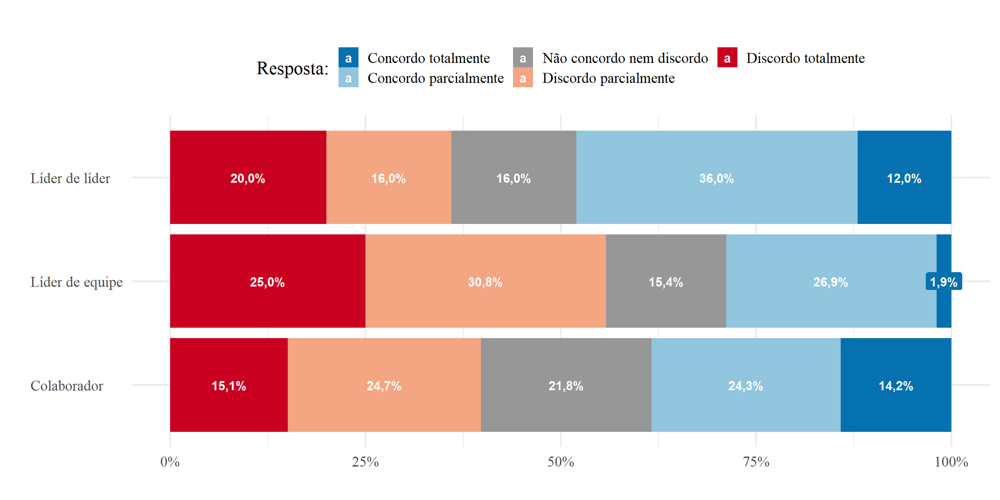
|
|
Total | ||||
|---|---|---|---|---|---|---|
| Discordo totalmente | Discordo parcialmente | Não concordo nem discordo | Concordo parcialmente | Concordo totalmente | ||
| Colaborador | 67 | 110 | 97 | 108 | 63 | 445 |
| LÃder de equipe | 13 | 16 | 8 | 14 | 1 | 52 |
| LÃder de lÃder | 5 | 4 | 4 | 9 | 3 | 25 |
| Total | 85 | 130 | 109 | 131 | 67 | 522 | χ2=12.605 · df=8 · Cramer’s V=0.110 · Fisher’s p=0.079 |
4.1.2 2. Área:
|
|
Total | ||||
|---|---|---|---|---|---|---|
| Discordo totalmente | Discordo parcialmente | Não concordo nem discordo | Concordo parcialmente | Concordo totalmente | ||
| BUs | 3 | 4 | 3 | 7 | 0 | 17 |
| Consulting | 10 | 8 | 14 | 14 | 11 | 57 |
| Financeiro/Administrativo/TI/CIG | 12 | 9 | 9 | 13 | 7 | 50 |
| GO e Controle de Qualidade | 8 | 15 | 9 | 7 | 1 | 40 |
| Kernel | 0 | 2 | 3 | 0 | 4 | 9 |
| Marketing | 0 | 0 | 0 | 1 | 0 | 1 |
| MS | 3 | 13 | 5 | 10 | 8 | 39 |
| Novos Negócios e Parcerias | 0 | 4 | 0 | 1 | 0 | 5 |
| Pessoas | 2 | 4 | 1 | 5 | 2 | 14 |
| PMS | 9 | 13 | 9 | 17 | 7 | 55 |
| QTS | 38 | 58 | 55 | 52 | 25 | 228 |
| Segurança & Cloud | 0 | 0 | 1 | 4 | 2 | 7 |
| Total | 85 | 130 | 109 | 131 | 67 | 522 | χ2=61.103 · df=44 · Cramer’s V=0.171 · Fisher’s p=0.053 |
4.1.3 3. Gênero:
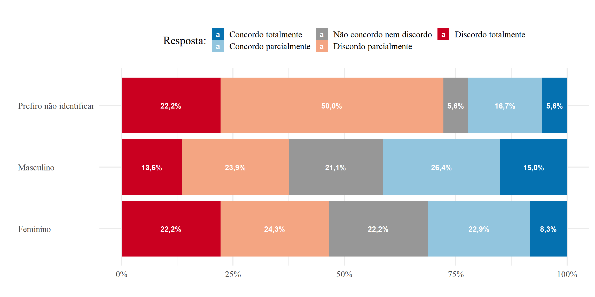
|
|
Total | ||||
|---|---|---|---|---|---|---|
| Discordo totalmente | Discordo parcialmente | Não concordo nem discordo | Concordo parcialmente | Concordo totalmente | ||
| Feminino | 32 | 35 | 32 | 33 | 12 | 144 |
| Masculino | 49 | 86 | 76 | 95 | 54 | 360 |
| Prefiro não identificar | 4 | 9 | 1 | 3 | 1 | 18 |
| Total | 85 | 130 | 109 | 131 | 67 | 522 | χ2=17.320 · df=8 · Cramer’s V=0.129 · Fisher’s p=0.031 |
4.1.4 4. Tempo de Empresa (há quanto tempo trabalha na Inmetrics?)
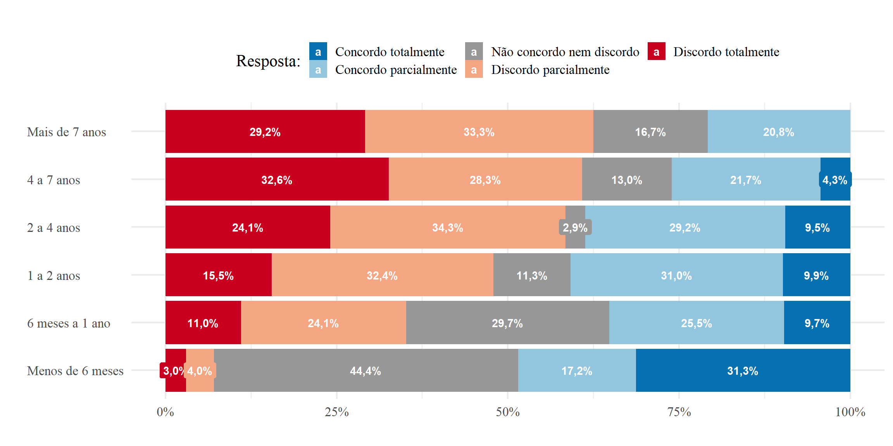
|
|
Total | ||||
|---|---|---|---|---|---|---|
| Discordo totalmente | Discordo parcialmente | Não concordo nem discordo | Concordo parcialmente | Concordo totalmente | ||
| 1 a 2 anos | 11 | 23 | 8 | 22 | 7 | 71 |
| 2 a 4 anos | 33 | 47 | 4 | 40 | 13 | 137 |
| 4 a 7 anos | 15 | 13 | 6 | 10 | 2 | 46 |
| 6 meses a 1 ano | 16 | 35 | 43 | 37 | 14 | 145 |
| Mais de 7 anos | 7 | 8 | 4 | 5 | 0 | 24 |
| Menos de 6 meses | 3 | 4 | 44 | 17 | 31 | 99 |
| Total | 85 | 130 | 109 | 131 | 67 | 522 | χ2=150.081 · df=20 · Cramer’s V=0.268 · Fisher’s p=0.000 |
4.1.5 5. Faixa etária:
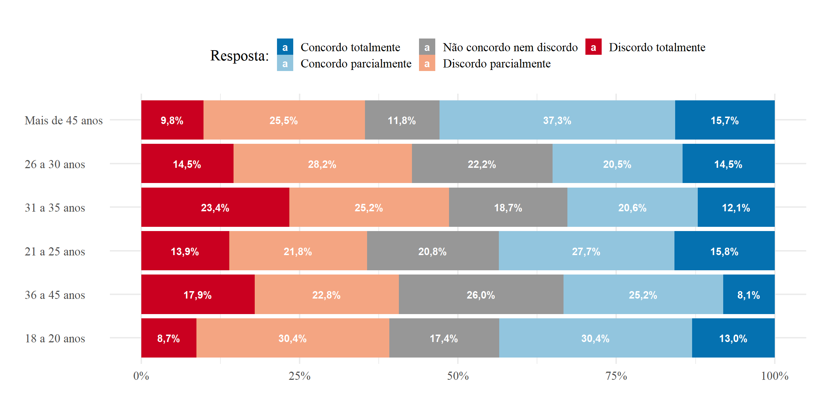
|
|
Total | ||||
|---|---|---|---|---|---|---|
| Discordo totalmente | Discordo parcialmente | Não concordo nem discordo | Concordo parcialmente | Concordo totalmente | ||
| 18 a 20 anos | 2 | 7 | 4 | 7 | 3 | 23 |
| 21 a 25 anos | 14 | 22 | 21 | 28 | 16 | 101 |
| 26 a 30 anos | 17 | 33 | 26 | 24 | 17 | 117 |
| 31 a 35 anos | 25 | 27 | 20 | 22 | 13 | 107 |
| 36 a 45 anos | 22 | 28 | 32 | 31 | 10 | 123 |
| Mais de 45 anos | 5 | 13 | 6 | 19 | 8 | 51 |
| Total | 85 | 130 | 109 | 131 | 67 | 522 | χ2=20.551 · df=20 · Cramer’s V=0.099 · Fisher’s p=0.438 |
4.1.6 6. Alocação:
|
|
Total | ||||
|---|---|---|---|---|---|---|
| Discordo totalmente | Discordo parcialmente | Não concordo nem discordo | Concordo parcialmente | Concordo totalmente | ||
| Alocado no cliente | 47 | 74 | 62 | 70 | 35 | 288 |
| No Canopus | 34 | 49 | 38 | 54 | 26 | 201 |
| No Thera | 4 | 7 | 9 | 7 | 6 | 33 |
| Total | 85 | 130 | 109 | 131 | 67 | 522 | χ2=3.117 · df=8 · Cramer’s V=0.055 · Fisher’s p=0.925 |
4.2 Questão 8b
- Na Inmetrics: [O sistema de avaliação de desempenho da empresa é justo e eficiente]
4.2.1 1. Eu sou:
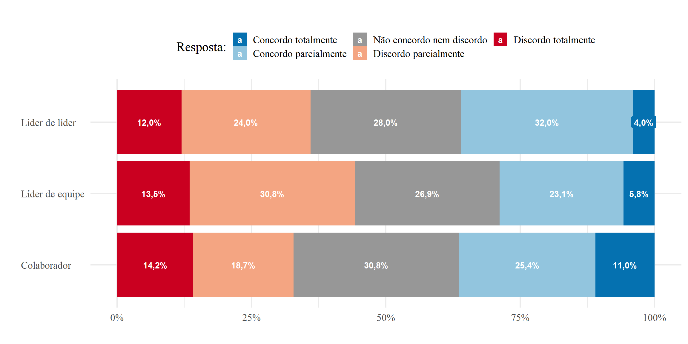
|
|
Total | ||||
|---|---|---|---|---|---|---|
| Discordo totalmente | Discordo parcialmente | Não concordo nem discordo | Concordo parcialmente | Concordo totalmente | ||
| Colaborador | 63 | 83 | 137 | 113 | 49 | 445 |
| LÃder de equipe | 7 | 16 | 14 | 12 | 3 | 52 |
| LÃder de lÃder | 3 | 6 | 7 | 8 | 1 | 25 |
| Total | 73 | 105 | 158 | 133 | 53 | 522 | χ2=6.736 · df=8 · Cramer’s V=0.080 · Fisher’s p=0.625 |
4.2.2 2. Área:
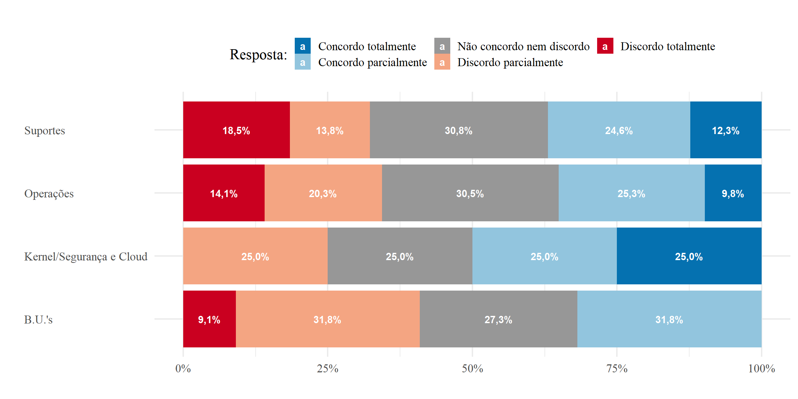
|
|
Total | ||||
|---|---|---|---|---|---|---|
| Discordo totalmente | Discordo parcialmente | Não concordo nem discordo | Concordo parcialmente | Concordo totalmente | ||
| BUs | 1 | 4 | 6 | 6 | 0 | 17 |
| Consulting | 10 | 8 | 18 | 12 | 9 | 57 |
| Financeiro/Administrativo/TI/CIG | 10 | 6 | 17 | 11 | 6 | 50 |
| GO e Controle de Qualidade | 10 | 10 | 11 | 5 | 4 | 40 |
| Kernel | 0 | 3 | 2 | 2 | 2 | 9 |
| Marketing | 0 | 0 | 0 | 1 | 0 | 1 |
| MS | 2 | 7 | 10 | 12 | 8 | 39 |
| Novos Negócios e Parcerias | 1 | 3 | 0 | 1 | 0 | 5 |
| Pessoas | 2 | 3 | 3 | 4 | 2 | 14 |
| PMS | 5 | 12 | 18 | 17 | 3 | 55 |
| QTS | 32 | 48 | 71 | 60 | 17 | 228 |
| Segurança & Cloud | 0 | 1 | 2 | 2 | 2 | 7 |
| Total | 73 | 105 | 158 | 133 | 53 | 522 | χ2=46.186 · df=44 · Cramer’s V=0.149 · Fisher’s p=0.326 |
4.2.3 3. Gênero:
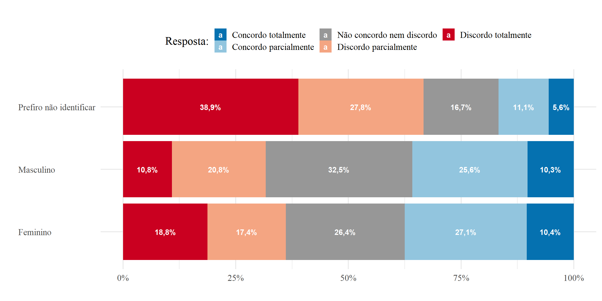
|
|
Total | ||||
|---|---|---|---|---|---|---|
| Discordo totalmente | Discordo parcialmente | Não concordo nem discordo | Concordo parcialmente | Concordo totalmente | ||
| Feminino | 27 | 25 | 38 | 39 | 15 | 144 |
| Masculino | 39 | 75 | 117 | 92 | 37 | 360 |
| Prefiro não identificar | 7 | 5 | 3 | 2 | 1 | 18 |
| Total | 73 | 105 | 158 | 133 | 53 | 522 | χ2=18.442 · df=8 · Cramer’s V=0.133 · Fisher’s p=0.034 |
4.2.4 4. Tempo de Empresa (há quanto tempo trabalha na Inmetrics?)
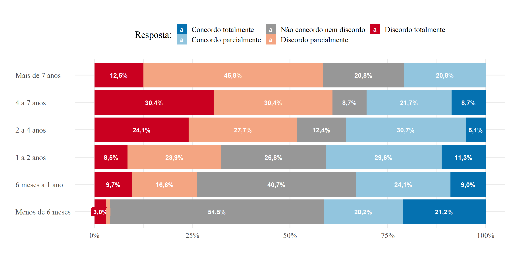
|
|
Total | ||||
|---|---|---|---|---|---|---|
| Discordo totalmente | Discordo parcialmente | Não concordo nem discordo | Concordo parcialmente | Concordo totalmente | ||
| 1 a 2 anos | 6 | 17 | 19 | 21 | 8 | 71 |
| 2 a 4 anos | 33 | 38 | 17 | 42 | 7 | 137 |
| 4 a 7 anos | 14 | 14 | 4 | 10 | 4 | 46 |
| 6 meses a 1 ano | 14 | 24 | 59 | 35 | 13 | 145 |
| Mais de 7 anos | 3 | 11 | 5 | 5 | 0 | 24 |
| Menos de 6 meses | 3 | 1 | 54 | 20 | 21 | 99 |
| Total | 73 | 105 | 158 | 133 | 53 | 522 | χ2=133.325 · df=20 · Cramer’s V=0.253 · Fisher’s p=0.000 |
4.2.5 5. Faixa etária:
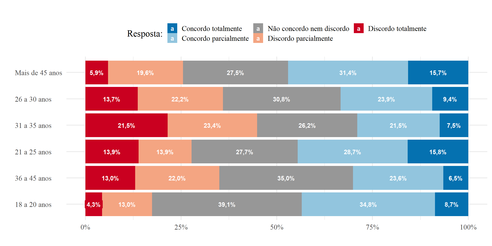
|
|
Total | ||||
|---|---|---|---|---|---|---|
| Discordo totalmente | Discordo parcialmente | Não concordo nem discordo | Concordo parcialmente | Concordo totalmente | ||
| 18 a 20 anos | 1 | 3 | 9 | 8 | 2 | 23 |
| 21 a 25 anos | 14 | 14 | 28 | 29 | 16 | 101 |
| 26 a 30 anos | 16 | 26 | 36 | 28 | 11 | 117 |
| 31 a 35 anos | 23 | 25 | 28 | 23 | 8 | 107 |
| 36 a 45 anos | 16 | 27 | 43 | 29 | 8 | 123 |
| Mais de 45 anos | 3 | 10 | 14 | 16 | 8 | 51 |
| Total | 73 | 105 | 158 | 133 | 53 | 522 | χ2=24.424 · df=20 · Cramer’s V=0.108 · Fisher’s p=0.255 |
4.2.6 6. Alocação:
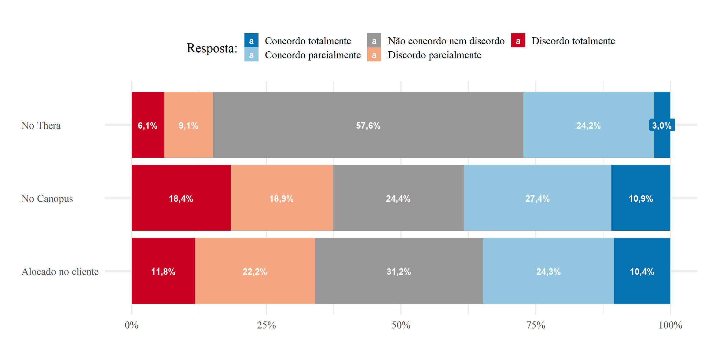
|
|
Total | ||||
|---|---|---|---|---|---|---|
| Discordo totalmente | Discordo parcialmente | Não concordo nem discordo | Concordo parcialmente | Concordo totalmente | ||
| Alocado no cliente | 34 | 64 | 90 | 70 | 30 | 288 |
| No Canopus | 37 | 38 | 49 | 55 | 22 | 201 |
| No Thera | 2 | 3 | 19 | 8 | 1 | 33 |
| Total | 73 | 105 | 158 | 133 | 53 | 522 | χ2=20.821 · df=8 · Cramer’s V=0.141 · Fisher’s p=0.015 |
4.3 Questão 8c
- Na Inmetrics: [Os sistemas de acompanhamento de indicadores dos projetos e metas são justos e eficientes]
4.3.1 1. Eu sou:
|
|
Total | ||||
|---|---|---|---|---|---|---|
| Discordo totalmente | Discordo parcialmente | Não concordo nem discordo | Concordo parcialmente | Concordo totalmente | ||
| Colaborador | 45 | 87 | 146 | 110 | 57 | 445 |
| LÃder de equipe | 6 | 12 | 13 | 20 | 1 | 52 |
| LÃder de lÃder | 1 | 10 | 6 | 6 | 2 | 25 |
| Total | 52 | 109 | 165 | 136 | 60 | 522 | χ2=15.781 · df=8 · Cramer’s V=0.123 · Fisher’s p=0.038 |
4.3.2 2. Área:
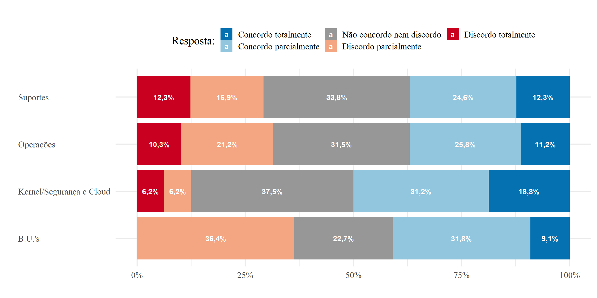
|
|
Total | ||||
|---|---|---|---|---|---|---|
| Discordo totalmente | Discordo parcialmente | Não concordo nem discordo | Concordo parcialmente | Concordo totalmente | ||
| BUs | 0 | 6 | 5 | 4 | 2 | 17 |
| Consulting | 8 | 6 | 16 | 15 | 12 | 57 |
| Financeiro/Administrativo/TI/CIG | 6 | 7 | 19 | 12 | 6 | 50 |
| GO e Controle de Qualidade | 7 | 11 | 11 | 7 | 4 | 40 |
| Kernel | 1 | 0 | 5 | 1 | 2 | 9 |
| Marketing | 0 | 0 | 0 | 1 | 0 | 1 |
| MS | 1 | 7 | 14 | 12 | 5 | 39 |
| Novos Negócios e Parcerias | 0 | 2 | 0 | 3 | 0 | 5 |
| Pessoas | 2 | 4 | 3 | 3 | 2 | 14 |
| PMS | 4 | 14 | 15 | 16 | 6 | 55 |
| QTS | 23 | 51 | 76 | 58 | 20 | 228 |
| Segurança & Cloud | 0 | 1 | 1 | 4 | 1 | 7 |
| Total | 52 | 109 | 165 | 136 | 60 | 522 | χ2=44.332 · df=44 · Cramer’s V=0.146 · Fisher’s p=0.405 |
4.3.3 3. Gênero:

|
|
Total | ||||
|---|---|---|---|---|---|---|
| Discordo totalmente | Discordo parcialmente | Não concordo nem discordo | Concordo parcialmente | Concordo totalmente | ||
| Feminino | 15 | 34 | 46 | 33 | 16 | 144 |
| Masculino | 30 | 68 | 117 | 102 | 43 | 360 |
| Prefiro não identificar | 7 | 7 | 2 | 1 | 1 | 18 |
| Total | 52 | 109 | 165 | 136 | 60 | 522 | χ2=27.389 · df=8 · Cramer’s V=0.162 · Fisher’s p=0.003 |
4.3.4 4. Tempo de Empresa (há quanto tempo trabalha na Inmetrics?)
|
|
Total | ||||
|---|---|---|---|---|---|---|
| Discordo totalmente | Discordo parcialmente | Não concordo nem discordo | Concordo parcialmente | Concordo totalmente | ||
| 1 a 2 anos | 3 | 19 | 20 | 22 | 7 | 71 |
| 2 a 4 anos | 24 | 40 | 29 | 35 | 9 | 137 |
| 4 a 7 anos | 9 | 15 | 9 | 13 | 0 | 46 |
| 6 meses a 1 ano | 13 | 21 | 55 | 40 | 16 | 145 |
| Mais de 7 anos | 2 | 9 | 7 | 4 | 2 | 24 |
| Menos de 6 meses | 1 | 5 | 45 | 22 | 26 | 99 |
| Total | 52 | 109 | 165 | 136 | 60 | 522 | χ2=93.881 · df=20 · Cramer’s V=0.212 · Fisher’s p=0.000 |
4.3.5 5. Faixa etária:
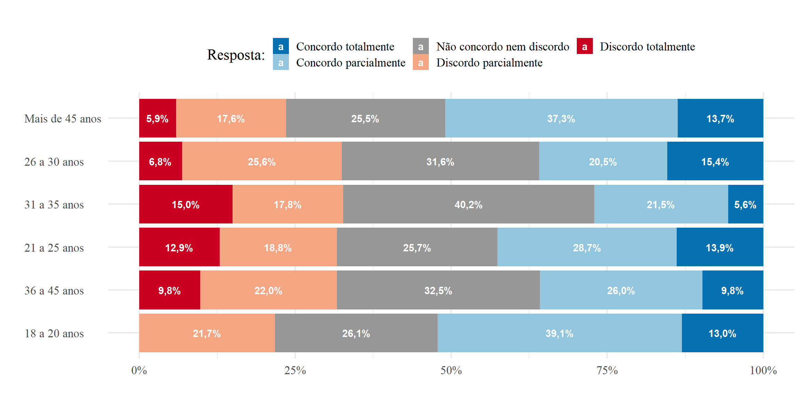
|
|
Total | ||||
|---|---|---|---|---|---|---|
| Discordo totalmente | Discordo parcialmente | Não concordo nem discordo | Concordo parcialmente | Concordo totalmente | ||
| 18 a 20 anos | 0 | 5 | 6 | 9 | 3 | 23 |
| 21 a 25 anos | 13 | 19 | 26 | 29 | 14 | 101 |
| 26 a 30 anos | 8 | 30 | 37 | 24 | 18 | 117 |
| 31 a 35 anos | 16 | 19 | 43 | 23 | 6 | 107 |
| 36 a 45 anos | 12 | 27 | 40 | 32 | 12 | 123 |
| Mais de 45 anos | 3 | 9 | 13 | 19 | 7 | 51 |
| Total | 52 | 109 | 165 | 136 | 60 | 522 | χ2=26.909 · df=20 · Cramer’s V=0.114 · Fisher’s p=0.127 |
4.3.6 6. Alocação:
|
|
Total | ||||
|---|---|---|---|---|---|---|
| Discordo totalmente | Discordo parcialmente | Não concordo nem discordo | Concordo parcialmente | Concordo totalmente | ||
| Alocado no cliente | 27 | 63 | 90 | 74 | 34 | 288 |
| No Canopus | 24 | 44 | 65 | 51 | 17 | 201 |
| No Thera | 1 | 2 | 10 | 11 | 9 | 33 |
| Total | 52 | 109 | 165 | 136 | 60 | 522 | χ2=15.755 · df=8 · Cramer’s V=0.123 · Fisher’s p=0.062 |
4.4 Questão 9
- Os colaboradores são preparados de maneira adequada para atuar com excelência em seus projetos e/ou áreas. [->]
4.4.1 1. Eu sou:
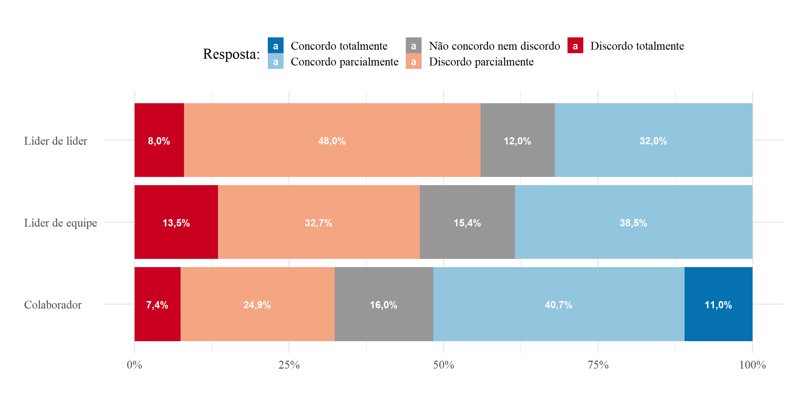
|
|
Total | ||||
|---|---|---|---|---|---|---|
| Discordo totalmente | Discordo parcialmente | Não concordo nem discordo | Concordo parcialmente | Concordo totalmente | ||
| Colaborador | 33 | 111 | 71 | 181 | 49 | 445 |
| LÃder de equipe | 7 | 17 | 8 | 20 | 0 | 52 |
| LÃder de lÃder | 2 | 12 | 3 | 8 | 0 | 25 |
| Total | 42 | 140 | 82 | 209 | 49 | 522 | χ2=16.748 · df=8 · Cramer’s V=0.127 · Fisher’s p=0.016 |
4.4.2 2. Área:
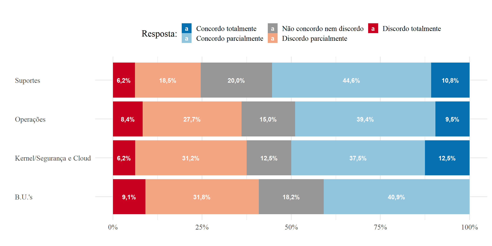
|
|
Total | ||||
|---|---|---|---|---|---|---|
| Discordo totalmente | Discordo parcialmente | Não concordo nem discordo | Concordo parcialmente | Concordo totalmente | ||
| BUs | 1 | 6 | 4 | 6 | 0 | 17 |
| Consulting | 2 | 8 | 10 | 25 | 12 | 57 |
| Financeiro/Administrativo/TI/CIG | 3 | 10 | 10 | 22 | 5 | 50 |
| GO e Controle de Qualidade | 5 | 15 | 3 | 16 | 1 | 40 |
| Kernel | 1 | 3 | 1 | 3 | 1 | 9 |
| Marketing | 0 | 0 | 1 | 0 | 0 | 1 |
| MS | 1 | 13 | 3 | 15 | 7 | 39 |
| Novos Negócios e Parcerias | 1 | 1 | 0 | 3 | 0 | 5 |
| Pessoas | 1 | 2 | 2 | 7 | 2 | 14 |
| PMS | 6 | 17 | 10 | 20 | 2 | 55 |
| QTS | 21 | 63 | 37 | 89 | 18 | 228 |
| Segurança & Cloud | 0 | 2 | 1 | 3 | 1 | 7 |
| Total | 42 | 140 | 82 | 209 | 49 | 522 | χ2=46.765 · df=44 · Cramer’s V=0.150 · Fisher’s p=0.294 |
4.4.3 3. Gênero:
|
|
Total | ||||
|---|---|---|---|---|---|---|
| Discordo totalmente | Discordo parcialmente | Não concordo nem discordo | Concordo parcialmente | Concordo totalmente | ||
| Feminino | 13 | 34 | 17 | 66 | 14 | 144 |
| Masculino | 25 | 101 | 63 | 137 | 34 | 360 |
| Prefiro não identificar | 4 | 5 | 2 | 6 | 1 | 18 |
| Total | 42 | 140 | 82 | 209 | 49 | 522 | χ2=10.413 · df=8 · Cramer’s V=0.100 · Fisher’s p=0.281 |
4.4.4 4. Tempo de Empresa (há quanto tempo trabalha na Inmetrics?)
|
|
Total | ||||
|---|---|---|---|---|---|---|
| Discordo totalmente | Discordo parcialmente | Não concordo nem discordo | Concordo parcialmente | Concordo totalmente | ||
| 1 a 2 anos | 4 | 20 | 9 | 30 | 8 | 71 |
| 2 a 4 anos | 13 | 46 | 16 | 53 | 9 | 137 |
| 4 a 7 anos | 7 | 19 | 4 | 15 | 1 | 46 |
| 6 meses a 1 ano | 13 | 34 | 22 | 64 | 12 | 145 |
| Mais de 7 anos | 1 | 9 | 7 | 7 | 0 | 24 |
| Menos de 6 meses | 4 | 12 | 24 | 40 | 19 | 99 |
| Total | 42 | 140 | 82 | 209 | 49 | 522 | χ2=51.291 · df=20 · Cramer’s V=0.157 · Fisher’s p=0.000 |
4.4.5 5. Faixa etária:

|
|
Total | ||||
|---|---|---|---|---|---|---|
| Discordo totalmente | Discordo parcialmente | Não concordo nem discordo | Concordo parcialmente | Concordo totalmente | ||
| 18 a 20 anos | 0 | 6 | 1 | 14 | 2 | 23 |
| 21 a 25 anos | 8 | 20 | 16 | 44 | 13 | 101 |
| 26 a 30 anos | 5 | 30 | 25 | 48 | 9 | 117 |
| 31 a 35 anos | 14 | 39 | 16 | 28 | 10 | 107 |
| 36 a 45 anos | 10 | 35 | 18 | 53 | 7 | 123 |
| Mais de 45 anos | 5 | 10 | 6 | 22 | 8 | 51 |
| Total | 42 | 140 | 82 | 209 | 49 | 522 | χ2=33.142 · df=20 · Cramer’s V=0.126 · Fisher’s p=0.026 |
4.4.6 6. Alocação:
|
|
Total | ||||
|---|---|---|---|---|---|---|
| Discordo totalmente | Discordo parcialmente | Não concordo nem discordo | Concordo parcialmente | Concordo totalmente | ||
| Alocado no cliente | 26 | 74 | 42 | 123 | 23 | 288 |
| No Canopus | 13 | 59 | 31 | 75 | 23 | 201 |
| No Thera | 3 | 7 | 9 | 11 | 3 | 33 |
| Total | 42 | 140 | 82 | 209 | 49 | 522 | χ2=7.834 · df=8 · Cramer’s V=0.087 · Fisher’s p=0.446 |
4.5 Questão 10a
- Ao iniciar o trabalho, os colaboradores: [Entendem o contexto e os objetivos do cliente]
4.5.1 1. Eu sou:
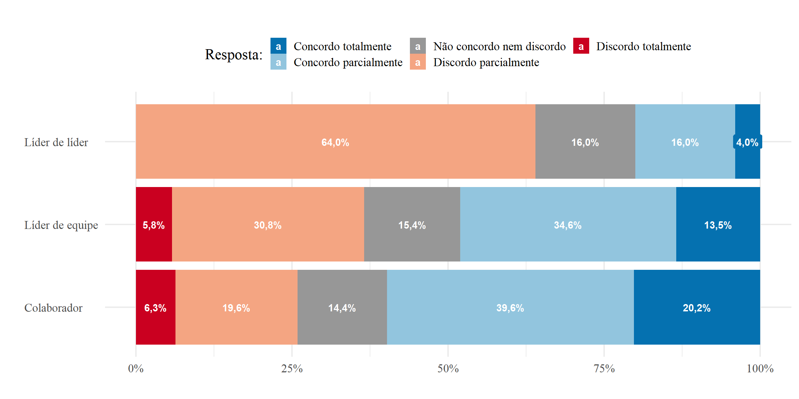
|
|
Total | ||||
|---|---|---|---|---|---|---|
| Discordo totalmente | Discordo parcialmente | Não concordo nem discordo | Concordo parcialmente | Concordo totalmente | ||
| Colaborador | 28 | 87 | 64 | 176 | 90 | 445 |
| LÃder de equipe | 3 | 16 | 8 | 18 | 7 | 52 |
| LÃder de lÃder | 0 | 16 | 4 | 4 | 1 | 25 |
| Total | 31 | 119 | 76 | 198 | 98 | 522 | χ2=31.590 · df=8 · Cramer’s V=0.174 · Fisher’s p=0.001 |
4.5.2 2. Área:
|
|
Total | ||||
|---|---|---|---|---|---|---|
| Discordo totalmente | Discordo parcialmente | Não concordo nem discordo | Concordo parcialmente | Concordo totalmente | ||
| BUs | 1 | 4 | 4 | 8 | 0 | 17 |
| Consulting | 1 | 14 | 4 | 20 | 18 | 57 |
| Financeiro/Administrativo/TI/CIG | 2 | 7 | 12 | 20 | 9 | 50 |
| GO e Controle de Qualidade | 5 | 5 | 8 | 14 | 8 | 40 |
| Kernel | 1 | 2 | 2 | 2 | 2 | 9 |
| Marketing | 0 | 0 | 0 | 1 | 0 | 1 |
| MS | 2 | 7 | 3 | 16 | 11 | 39 |
| Novos Negócios e Parcerias | 0 | 1 | 0 | 4 | 0 | 5 |
| Pessoas | 0 | 3 | 3 | 7 | 1 | 14 |
| PMS | 2 | 19 | 6 | 15 | 13 | 55 |
| QTS | 17 | 56 | 32 | 88 | 35 | 228 |
| Segurança & Cloud | 0 | 1 | 2 | 3 | 1 | 7 |
| Total | 31 | 119 | 76 | 198 | 98 | 522 | χ2=49.351 · df=44 · Cramer’s V=0.154 · Fisher’s p=0.182 |
4.5.3 3. Gênero:
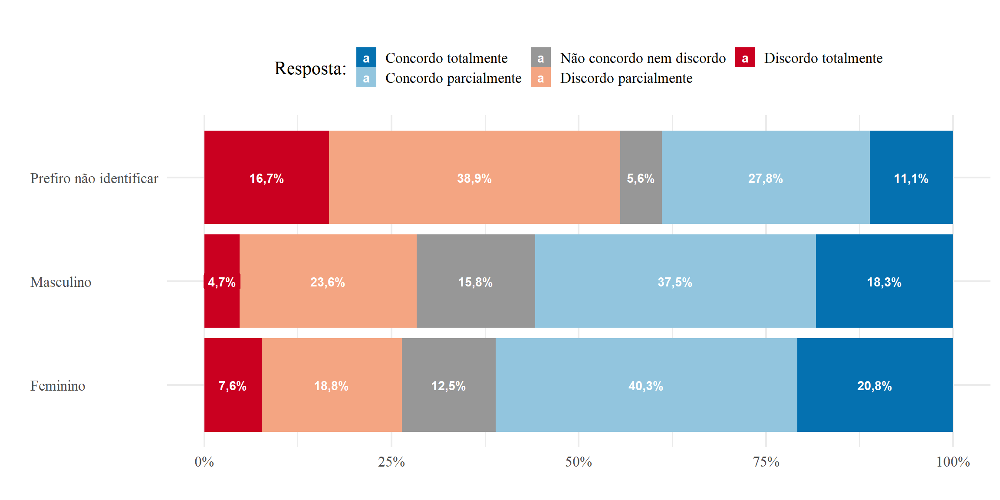
|
|
Total | ||||
|---|---|---|---|---|---|---|
| Discordo totalmente | Discordo parcialmente | Não concordo nem discordo | Concordo parcialmente | Concordo totalmente | ||
| Feminino | 11 | 27 | 18 | 58 | 30 | 144 |
| Masculino | 17 | 85 | 57 | 135 | 66 | 360 |
| Prefiro não identificar | 3 | 7 | 1 | 5 | 2 | 18 |
| Total | 31 | 119 | 76 | 198 | 98 | 522 | χ2=11.735 · df=8 · Cramer’s V=0.106 · Fisher’s p=0.172 |
4.5.4 4. Tempo de Empresa (há quanto tempo trabalha na Inmetrics?)
|
|
Total | ||||
|---|---|---|---|---|---|---|
| Discordo totalmente | Discordo parcialmente | Não concordo nem discordo | Concordo parcialmente | Concordo totalmente | ||
| 1 a 2 anos | 3 | 14 | 13 | 28 | 13 | 71 |
| 2 a 4 anos | 9 | 39 | 15 | 53 | 21 | 137 |
| 4 a 7 anos | 4 | 11 | 8 | 17 | 6 | 46 |
| 6 meses a 1 ano | 13 | 33 | 17 | 55 | 27 | 145 |
| Mais de 7 anos | 1 | 13 | 4 | 5 | 1 | 24 |
| Menos de 6 meses | 1 | 9 | 19 | 40 | 30 | 99 |
| Total | 31 | 119 | 76 | 198 | 98 | 522 | χ2=46.216 · df=20 · Cramer’s V=0.149 · Fisher’s p=0.002 |
4.5.5 5. Faixa etária:
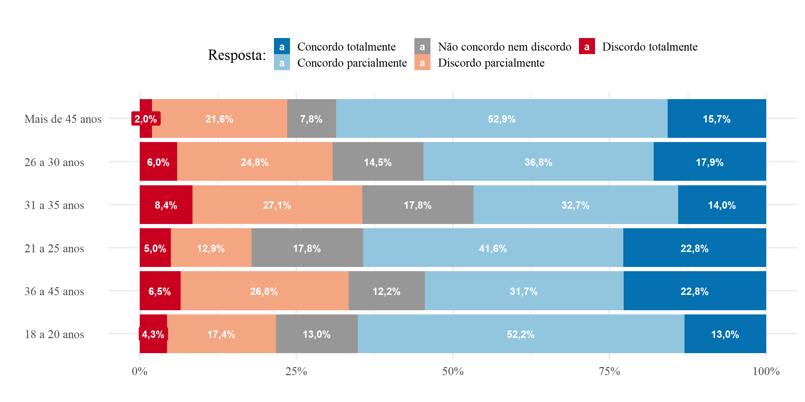
|
|
Total | ||||
|---|---|---|---|---|---|---|
| Discordo totalmente | Discordo parcialmente | Não concordo nem discordo | Concordo parcialmente | Concordo totalmente | ||
| 18 a 20 anos | 1 | 4 | 3 | 12 | 3 | 23 |
| 21 a 25 anos | 5 | 13 | 18 | 42 | 23 | 101 |
| 26 a 30 anos | 7 | 29 | 17 | 43 | 21 | 117 |
| 31 a 35 anos | 9 | 29 | 19 | 35 | 15 | 107 |
| 36 a 45 anos | 8 | 33 | 15 | 39 | 28 | 123 |
| Mais de 45 anos | 1 | 11 | 4 | 27 | 8 | 51 |
| Total | 31 | 119 | 76 | 198 | 98 | 522 | χ2=23.592 · df=20 · Cramer’s V=0.106 · Fisher’s p=0.239 |
4.5.6 6. Alocação:
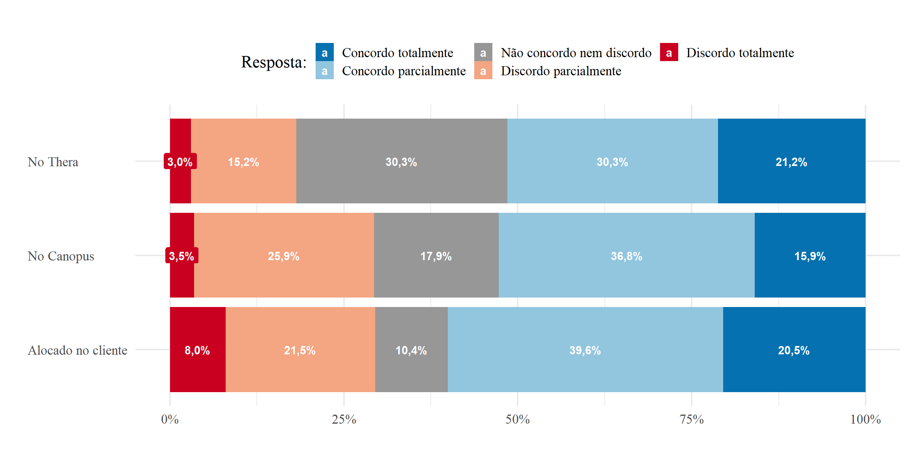
|
|
Total | ||||
|---|---|---|---|---|---|---|
| Discordo totalmente | Discordo parcialmente | Não concordo nem discordo | Concordo parcialmente | Concordo totalmente | ||
| Alocado no cliente | 23 | 62 | 30 | 114 | 59 | 288 |
| No Canopus | 7 | 52 | 36 | 74 | 32 | 201 |
| No Thera | 1 | 5 | 10 | 10 | 7 | 33 |
| Total | 31 | 119 | 76 | 198 | 98 | 522 | χ2=19.196 · df=8 · Cramer’s V=0.136 · Fisher’s p=0.019 |
4.6 Questão 10d
- Ao iniciar o trabalho, os colaboradores: [Utilizam efetivamente suas habilidades e conhecimentos]
4.6.1 1. Eu sou:
|
|
Total | ||||
|---|---|---|---|---|---|---|
| Discordo totalmente | Discordo parcialmente | Não concordo nem discordo | Concordo parcialmente | Concordo totalmente | ||
| Colaborador | 13 | 44 | 69 | 189 | 130 | 445 |
| LÃder de equipe | 1 | 7 | 8 | 28 | 8 | 52 |
| LÃder de lÃder | 1 | 6 | 7 | 10 | 1 | 25 |
| Total | 15 | 57 | 84 | 227 | 139 | 522 | χ2=17.102 · df=8 · Cramer’s V=0.128 · Fisher’s p=0.012 |
4.6.2 2. Área:
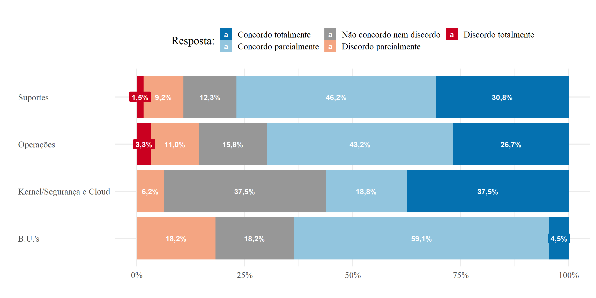
|
|
Total | ||||
|---|---|---|---|---|---|---|
| Discordo totalmente | Discordo parcialmente | Não concordo nem discordo | Concordo parcialmente | Concordo totalmente | ||
| BUs | 0 | 4 | 4 | 9 | 0 | 17 |
| Consulting | 1 | 2 | 7 | 26 | 21 | 57 |
| Financeiro/Administrativo/TI/CIG | 1 | 5 | 6 | 22 | 16 | 50 |
| GO e Controle de Qualidade | 3 | 6 | 4 | 15 | 12 | 40 |
| Kernel | 0 | 0 | 3 | 2 | 4 | 9 |
| Marketing | 0 | 0 | 0 | 1 | 0 | 1 |
| MS | 0 | 3 | 7 | 16 | 13 | 39 |
| Novos Negócios e Parcerias | 0 | 0 | 0 | 4 | 1 | 5 |
| Pessoas | 0 | 1 | 2 | 7 | 4 | 14 |
| PMS | 3 | 8 | 8 | 23 | 13 | 55 |
| QTS | 7 | 27 | 40 | 101 | 53 | 228 |
| Segurança & Cloud | 0 | 1 | 3 | 1 | 2 | 7 |
| Total | 15 | 57 | 84 | 227 | 139 | 522 | χ2=41.509 · df=44 · Cramer’s V=0.141 · Fisher’s p=0.449 |
4.6.3 3. Gênero:
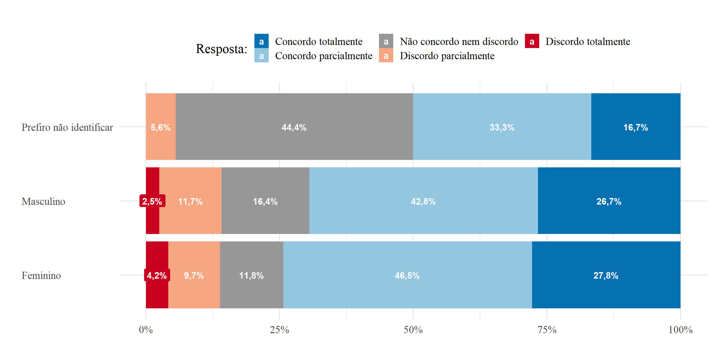
|
|
Total | ||||
|---|---|---|---|---|---|---|
| Discordo totalmente | Discordo parcialmente | Não concordo nem discordo | Concordo parcialmente | Concordo totalmente | ||
| Feminino | 6 | 14 | 17 | 67 | 40 | 144 |
| Masculino | 9 | 42 | 59 | 154 | 96 | 360 |
| Prefiro não identificar | 0 | 1 | 8 | 6 | 3 | 18 |
| Total | 15 | 57 | 84 | 227 | 139 | 522 | χ2=14.550 · df=8 · Cramer’s V=0.118 · Fisher’s p=0.155 |
4.6.4 4. Tempo de Empresa (há quanto tempo trabalha na Inmetrics?)
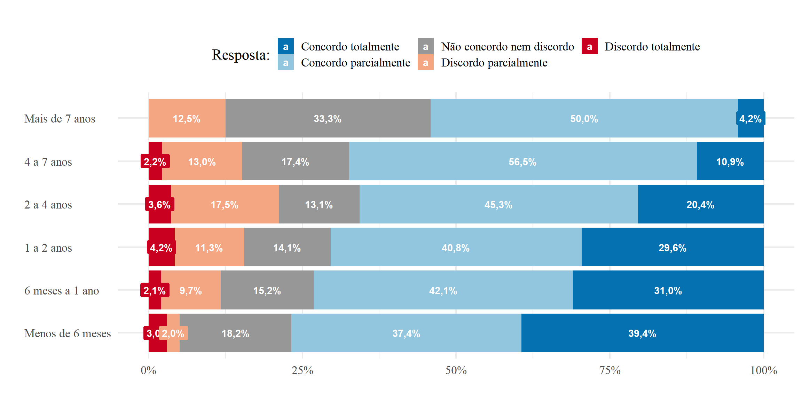
|
|
Total | ||||
|---|---|---|---|---|---|---|
| Discordo totalmente | Discordo parcialmente | Não concordo nem discordo | Concordo parcialmente | Concordo totalmente | ||
| 1 a 2 anos | 3 | 8 | 10 | 29 | 21 | 71 |
| 2 a 4 anos | 5 | 24 | 18 | 62 | 28 | 137 |
| 4 a 7 anos | 1 | 6 | 8 | 26 | 5 | 46 |
| 6 meses a 1 ano | 3 | 14 | 22 | 61 | 45 | 145 |
| Mais de 7 anos | 0 | 3 | 8 | 12 | 1 | 24 |
| Menos de 6 meses | 3 | 2 | 18 | 37 | 39 | 99 |
| Total | 15 | 57 | 84 | 227 | 139 | 522 | χ2=42.015 · df=20 · Cramer’s V=0.142 · Fisher’s p=0.001 |
4.6.5 5. Faixa etária:
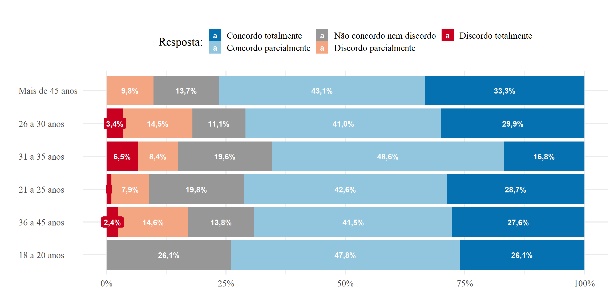
|
|
Total | ||||
|---|---|---|---|---|---|---|
| Discordo totalmente | Discordo parcialmente | Não concordo nem discordo | Concordo parcialmente | Concordo totalmente | ||
| 18 a 20 anos | 0 | 0 | 6 | 11 | 6 | 23 |
| 21 a 25 anos | 1 | 8 | 20 | 43 | 29 | 101 |
| 26 a 30 anos | 4 | 17 | 13 | 48 | 35 | 117 |
| 31 a 35 anos | 7 | 9 | 21 | 52 | 18 | 107 |
| 36 a 45 anos | 3 | 18 | 17 | 51 | 34 | 123 |
| Mais de 45 anos | 0 | 5 | 7 | 22 | 17 | 51 |
| Total | 15 | 57 | 84 | 227 | 139 | 522 | χ2=27.509 · df=20 · Cramer’s V=0.115 · Fisher’s p=0.153 |
4.6.6 6. Alocação:
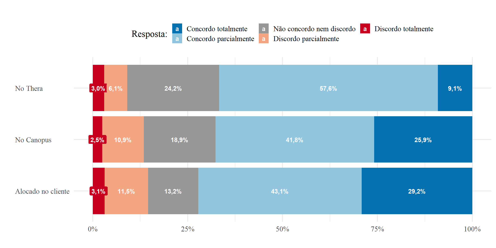
|
|
Total | ||||
|---|---|---|---|---|---|---|
| Discordo totalmente | Discordo parcialmente | Não concordo nem discordo | Concordo parcialmente | Concordo totalmente | ||
| Alocado no cliente | 9 | 33 | 38 | 124 | 84 | 288 |
| No Canopus | 5 | 22 | 38 | 84 | 52 | 201 |
| No Thera | 1 | 2 | 8 | 19 | 3 | 33 |
| Total | 15 | 57 | 84 | 227 | 139 | 522 | χ2=11.017 · df=8 · Cramer’s V=0.103 · Fisher’s p=0.161 |
4.7 Questão 10e
- Ao iniciar o trabalho, os colaboradores: [Sentem-se capacitados para a função]
4.7.1 1. Eu sou:
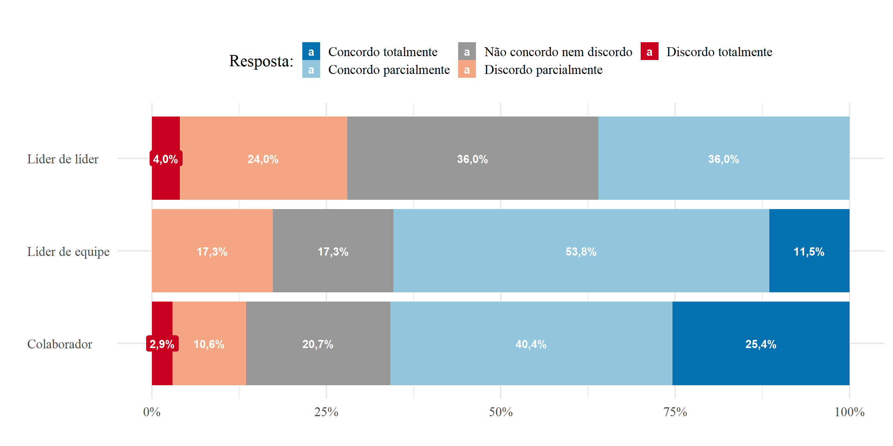
|
|
Total | ||||
|---|---|---|---|---|---|---|
| Discordo totalmente | Discordo parcialmente | Não concordo nem discordo | Concordo parcialmente | Concordo totalmente | ||
| Colaborador | 13 | 47 | 92 | 180 | 113 | 445 |
| LÃder de equipe | 0 | 9 | 9 | 28 | 6 | 52 |
| LÃder de lÃder | 1 | 6 | 9 | 9 | 0 | 25 |
| Total | 14 | 62 | 110 | 217 | 119 | 522 | χ2=21.824 · df=8 · Cramer’s V=0.145 · Fisher’s p=0.001 |
4.7.2 2. Área:
|
|
Total | ||||
|---|---|---|---|---|---|---|
| Discordo totalmente | Discordo parcialmente | Não concordo nem discordo | Concordo parcialmente | Concordo totalmente | ||
| BUs | 0 | 2 | 7 | 7 | 1 | 17 |
| Consulting | 0 | 2 | 10 | 29 | 16 | 57 |
| Financeiro/Administrativo/TI/CIG | 3 | 0 | 8 | 24 | 15 | 50 |
| GO e Controle de Qualidade | 4 | 10 | 4 | 11 | 11 | 40 |
| Kernel | 0 | 1 | 4 | 1 | 3 | 9 |
| Marketing | 0 | 0 | 0 | 1 | 0 | 1 |
| MS | 0 | 0 | 11 | 14 | 14 | 39 |
| Novos Negócios e Parcerias | 0 | 0 | 0 | 3 | 2 | 5 |
| Pessoas | 0 | 0 | 2 | 8 | 4 | 14 |
| PMS | 1 | 16 | 16 | 11 | 11 | 55 |
| QTS | 6 | 30 | 46 | 105 | 41 | 228 |
| Segurança & Cloud | 0 | 1 | 2 | 3 | 1 | 7 |
| Total | 14 | 62 | 110 | 217 | 119 | 522 | χ2=90.452 · df=44 · Cramer’s V=0.208 · Fisher’s p=0.000 |
4.7.3 3. Gênero:
|
|
Total | ||||
|---|---|---|---|---|---|---|
| Discordo totalmente | Discordo parcialmente | Não concordo nem discordo | Concordo parcialmente | Concordo totalmente | ||
| Feminino | 6 | 13 | 25 | 66 | 34 | 144 |
| Masculino | 8 | 46 | 78 | 146 | 82 | 360 |
| Prefiro não identificar | 0 | 3 | 7 | 5 | 3 | 18 |
| Total | 14 | 62 | 110 | 217 | 119 | 522 | χ2=9.122 · df=8 · Cramer’s V=0.093 · Fisher’s p=0.345 |
4.7.4 4. Tempo de Empresa (há quanto tempo trabalha na Inmetrics?)
|
|
Total | ||||
|---|---|---|---|---|---|---|
| Discordo totalmente | Discordo parcialmente | Não concordo nem discordo | Concordo parcialmente | Concordo totalmente | ||
| 1 a 2 anos | 2 | 11 | 16 | 26 | 16 | 71 |
| 2 a 4 anos | 5 | 16 | 26 | 60 | 30 | 137 |
| 4 a 7 anos | 1 | 10 | 13 | 16 | 6 | 46 |
| 6 meses a 1 ano | 5 | 22 | 24 | 66 | 28 | 145 |
| Mais de 7 anos | 0 | 2 | 12 | 8 | 2 | 24 |
| Menos de 6 meses | 1 | 1 | 19 | 41 | 37 | 99 |
| Total | 14 | 62 | 110 | 217 | 119 | 522 | χ2=47.284 · df=20 · Cramer’s V=0.150 · Fisher’s p=0.000 |
4.7.5 5. Faixa etária:
|
|
Total | ||||
|---|---|---|---|---|---|---|
| Discordo totalmente | Discordo parcialmente | Não concordo nem discordo | Concordo parcialmente | Concordo totalmente | ||
| 18 a 20 anos | 0 | 3 | 3 | 14 | 3 | 23 |
| 21 a 25 anos | 5 | 5 | 23 | 46 | 22 | 101 |
| 26 a 30 anos | 2 | 17 | 21 | 55 | 22 | 117 |
| 31 a 35 anos | 0 | 20 | 32 | 32 | 23 | 107 |
| 36 a 45 anos | 6 | 12 | 22 | 50 | 33 | 123 |
| Mais de 45 anos | 1 | 5 | 9 | 20 | 16 | 51 |
| Total | 14 | 62 | 110 | 217 | 119 | 522 | χ2=35.302 · df=20 · Cramer’s V=0.130 · Fisher’s p=0.018 |
4.7.6 6. Alocação:
|
|
Total | ||||
|---|---|---|---|---|---|---|
| Discordo totalmente | Discordo parcialmente | Não concordo nem discordo | Concordo parcialmente | Concordo totalmente | ||
| Alocado no cliente | 9 | 39 | 56 | 118 | 66 | 288 |
| No Canopus | 3 | 20 | 46 | 88 | 44 | 201 |
| No Thera | 2 | 3 | 8 | 11 | 9 | 33 |
| Total | 14 | 62 | 110 | 217 | 119 | 522 | χ2=6.189 · df=8 · Cramer’s V=0.077 · Fisher’s p=0.571 |
4.8 Questão 10f
- Ao iniciar o trabalho, os colaboradores: [São apresentados à equipe com a qual vão trabalhar]
4.8.1 1. Eu sou:
|
|
Total | ||||
|---|---|---|---|---|---|---|
| Discordo totalmente | Discordo parcialmente | Não concordo nem discordo | Concordo parcialmente | Concordo totalmente | ||
| Colaborador | 20 | 41 | 57 | 115 | 212 | 445 |
| LÃder de equipe | 0 | 11 | 7 | 20 | 14 | 52 |
| LÃder de lÃder | 0 | 6 | 3 | 12 | 4 | 25 |
| Total | 20 | 58 | 67 | 147 | 230 | 522 | χ2=28.921 · df=8 · Cramer’s V=0.166 · Fisher’s p=0.000 |
4.8.2 2. Área:
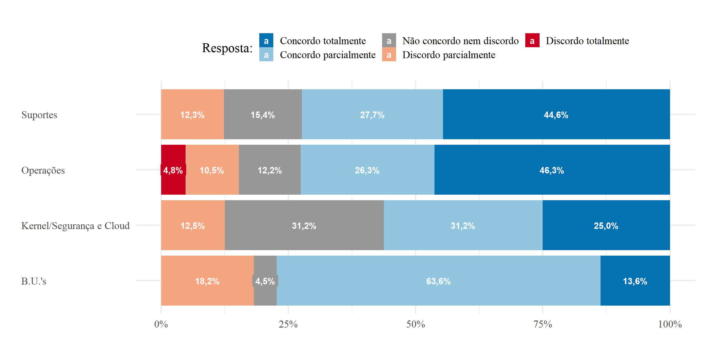
|
|
Total | ||||
|---|---|---|---|---|---|---|
| Discordo totalmente | Discordo parcialmente | Não concordo nem discordo | Concordo parcialmente | Concordo totalmente | ||
| BUs | 0 | 3 | 1 | 12 | 1 | 17 |
| Consulting | 2 | 4 | 5 | 18 | 28 | 57 |
| Financeiro/Administrativo/TI/CIG | 0 | 3 | 8 | 13 | 26 | 50 |
| GO e Controle de Qualidade | 3 | 6 | 2 | 13 | 16 | 40 |
| Kernel | 0 | 0 | 3 | 3 | 3 | 9 |
| Marketing | 0 | 0 | 0 | 1 | 0 | 1 |
| MS | 0 | 3 | 7 | 9 | 20 | 39 |
| Novos Negócios e Parcerias | 0 | 1 | 0 | 2 | 2 | 5 |
| Pessoas | 0 | 5 | 2 | 4 | 3 | 14 |
| PMS | 1 | 5 | 6 | 14 | 29 | 55 |
| QTS | 14 | 26 | 31 | 56 | 101 | 228 |
| Segurança & Cloud | 0 | 2 | 2 | 2 | 1 | 7 |
| Total | 20 | 58 | 67 | 147 | 230 | 522 | χ2=62.440 · df=44 · Cramer’s V=0.173 · Fisher’s p=0.023 |
4.8.3 3. Gênero:
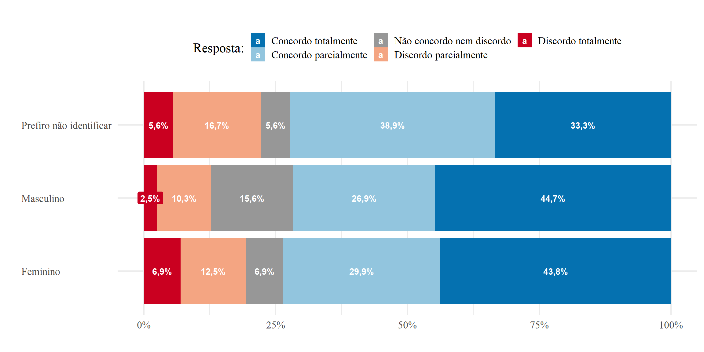
|
|
Total | ||||
|---|---|---|---|---|---|---|
| Discordo totalmente | Discordo parcialmente | Não concordo nem discordo | Concordo parcialmente | Concordo totalmente | ||
| Feminino | 10 | 18 | 10 | 43 | 63 | 144 |
| Masculino | 9 | 37 | 56 | 97 | 161 | 360 |
| Prefiro não identificar | 1 | 3 | 1 | 7 | 6 | 18 |
| Total | 20 | 58 | 67 | 147 | 230 | 522 | χ2=14.716 · df=8 · Cramer’s V=0.119 · Fisher’s p=0.041 |
4.8.4 4. Tempo de Empresa (há quanto tempo trabalha na Inmetrics?)
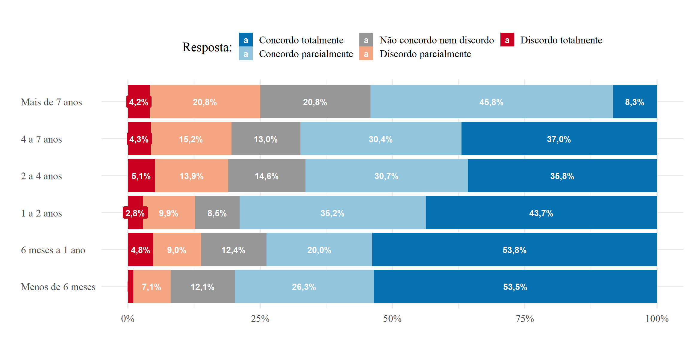
|
|
Total | ||||
|---|---|---|---|---|---|---|
| Discordo totalmente | Discordo parcialmente | Não concordo nem discordo | Concordo parcialmente | Concordo totalmente | ||
| 1 a 2 anos | 2 | 7 | 6 | 25 | 31 | 71 |
| 2 a 4 anos | 7 | 19 | 20 | 42 | 49 | 137 |
| 4 a 7 anos | 2 | 7 | 6 | 14 | 17 | 46 |
| 6 meses a 1 ano | 7 | 13 | 18 | 29 | 78 | 145 |
| Mais de 7 anos | 1 | 5 | 5 | 11 | 2 | 24 |
| Menos de 6 meses | 1 | 7 | 12 | 26 | 53 | 99 |
| Total | 20 | 58 | 67 | 147 | 230 | 522 | χ2=34.345 · df=20 · Cramer’s V=0.128 · Fisher’s p=0.005 |
4.8.5 5. Faixa etária:
|
|
Total | ||||
|---|---|---|---|---|---|---|
| Discordo totalmente | Discordo parcialmente | Não concordo nem discordo | Concordo parcialmente | Concordo totalmente | ||
| 18 a 20 anos | 0 | 0 | 3 | 5 | 15 | 23 |
| 21 a 25 anos | 2 | 7 | 13 | 23 | 56 | 101 |
| 26 a 30 anos | 2 | 12 | 19 | 36 | 48 | 117 |
| 31 a 35 anos | 7 | 17 | 11 | 35 | 37 | 107 |
| 36 a 45 anos | 7 | 17 | 17 | 34 | 48 | 123 |
| Mais de 45 anos | 2 | 5 | 4 | 14 | 26 | 51 |
| Total | 20 | 58 | 67 | 147 | 230 | 522 | χ2=27.783 · df=20 · Cramer’s V=0.115 · Fisher’s p=0.138 |
4.8.6 6. Alocação:
|
|
Total | ||||
|---|---|---|---|---|---|---|
| Discordo totalmente | Discordo parcialmente | Não concordo nem discordo | Concordo parcialmente | Concordo totalmente | ||
| Alocado no cliente | 11 | 27 | 33 | 75 | 142 | 288 |
| No Canopus | 9 | 28 | 29 | 64 | 71 | 201 |
| No Thera | 0 | 3 | 5 | 8 | 17 | 33 |
| Total | 20 | 58 | 67 | 147 | 230 | 522 | χ2=12.087 · df=8 · Cramer’s V=0.108 · Fisher’s p=0.161 |
4.9 Questão 10g
- Ao iniciar o trabalho, os colaboradores: [Têm espaço físico de trabalho e equipamentos adequados]
4.9.1 1. Eu sou:
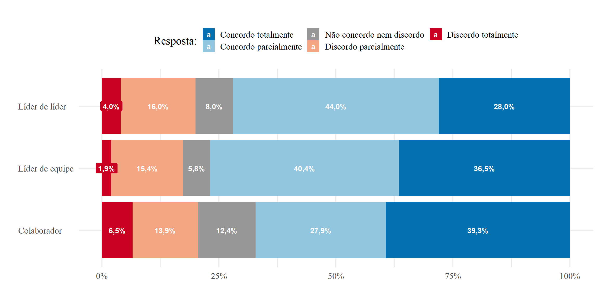
|
|
Total | ||||
|---|---|---|---|---|---|---|
| Discordo totalmente | Discordo parcialmente | Não concordo nem discordo | Concordo parcialmente | Concordo totalmente | ||
| Colaborador | 29 | 62 | 55 | 124 | 175 | 445 |
| LÃder de equipe | 1 | 8 | 3 | 21 | 19 | 52 |
| LÃder de lÃder | 1 | 4 | 2 | 11 | 7 | 25 |
| Total | 31 | 74 | 60 | 156 | 201 | 522 | χ2=9.029 · df=8 · Cramer’s V=0.093 · Fisher’s p=0.377 |
4.9.2 2. Área:
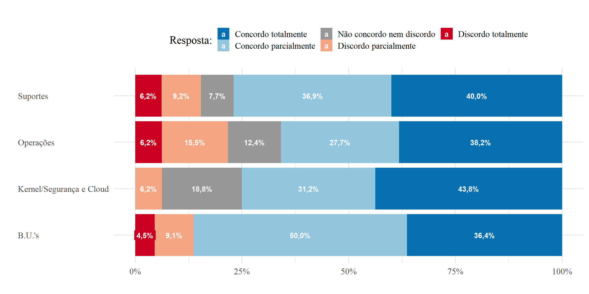
|
|
Total | ||||
|---|---|---|---|---|---|---|
| Discordo totalmente | Discordo parcialmente | Não concordo nem discordo | Concordo parcialmente | Concordo totalmente | ||
| BUs | 1 | 2 | 0 | 10 | 4 | 17 |
| Consulting | 1 | 3 | 7 | 22 | 24 | 57 |
| Financeiro/Administrativo/TI/CIG | 4 | 4 | 4 | 17 | 21 | 50 |
| GO e Controle de Qualidade | 5 | 6 | 2 | 16 | 11 | 40 |
| Kernel | 0 | 0 | 2 | 2 | 5 | 9 |
| Marketing | 0 | 0 | 0 | 1 | 0 | 1 |
| MS | 1 | 6 | 2 | 5 | 25 | 39 |
| Novos Negócios e Parcerias | 0 | 0 | 0 | 1 | 4 | 5 |
| Pessoas | 0 | 2 | 1 | 6 | 5 | 14 |
| PMS | 3 | 11 | 10 | 14 | 17 | 55 |
| QTS | 16 | 39 | 31 | 59 | 83 | 228 |
| Segurança & Cloud | 0 | 1 | 1 | 3 | 2 | 7 |
| Total | 31 | 74 | 60 | 156 | 201 | 522 | χ2=58.275 · df=44 · Cramer’s V=0.167 · Fisher’s p=0.062 |
4.9.3 3. Gênero:
|
|
Total | ||||
|---|---|---|---|---|---|---|
| Discordo totalmente | Discordo parcialmente | Não concordo nem discordo | Concordo parcialmente | Concordo totalmente | ||
| Feminino | 7 | 13 | 16 | 50 | 58 | 144 |
| Masculino | 23 | 52 | 43 | 102 | 140 | 360 |
| Prefiro não identificar | 1 | 9 | 1 | 4 | 3 | 18 |
| Total | 31 | 74 | 60 | 156 | 201 | 522 | χ2=24.181 · df=8 · Cramer’s V=0.152 · Fisher’s p=0.013 |
4.9.4 4. Tempo de Empresa (há quanto tempo trabalha na Inmetrics?)
|
|
Total | ||||
|---|---|---|---|---|---|---|
| Discordo totalmente | Discordo parcialmente | Não concordo nem discordo | Concordo parcialmente | Concordo totalmente | ||
| 1 a 2 anos | 3 | 5 | 10 | 25 | 28 | 71 |
| 2 a 4 anos | 9 | 21 | 12 | 43 | 52 | 137 |
| 4 a 7 anos | 4 | 11 | 2 | 15 | 14 | 46 |
| 6 meses a 1 ano | 12 | 29 | 16 | 39 | 49 | 145 |
| Mais de 7 anos | 1 | 3 | 4 | 9 | 7 | 24 |
| Menos de 6 meses | 2 | 5 | 16 | 25 | 51 | 99 |
| Total | 31 | 74 | 60 | 156 | 201 | 522 | χ2=34.987 · df=20 · Cramer’s V=0.129 · Fisher’s p=0.013 |
4.9.5 5. Faixa etária:
|
|
Total | ||||
|---|---|---|---|---|---|---|
| Discordo totalmente | Discordo parcialmente | Não concordo nem discordo | Concordo parcialmente | Concordo totalmente | ||
| 18 a 20 anos | 1 | 4 | 3 | 6 | 9 | 23 |
| 21 a 25 anos | 6 | 12 | 14 | 34 | 35 | 101 |
| 26 a 30 anos | 7 | 20 | 13 | 31 | 46 | 117 |
| 31 a 35 anos | 7 | 23 | 11 | 28 | 38 | 107 |
| 36 a 45 anos | 9 | 12 | 14 | 41 | 47 | 123 |
| Mais de 45 anos | 1 | 3 | 5 | 16 | 26 | 51 |
| Total | 31 | 74 | 60 | 156 | 201 | 522 | χ2=16.985 · df=20 · Cramer’s V=0.090 · Fisher’s p=0.670 |
4.9.6 6. Alocação:
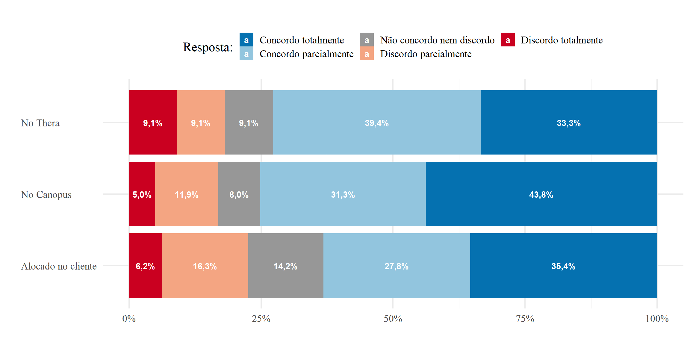
|
|
Total | ||||
|---|---|---|---|---|---|---|
| Discordo totalmente | Discordo parcialmente | Não concordo nem discordo | Concordo parcialmente | Concordo totalmente | ||
| Alocado no cliente | 18 | 47 | 41 | 80 | 102 | 288 |
| No Canopus | 10 | 24 | 16 | 63 | 88 | 201 |
| No Thera | 3 | 3 | 3 | 13 | 11 | 33 |
| Total | 31 | 74 | 60 | 156 | 201 | 522 | χ2=11.356 · df=8 · Cramer’s V=0.104 · Fisher’s p=0.176 |
4.10 Questão 10b
- Ao iniciar o trabalho, os colaboradores: [Compreendem o propósito de suas entregas]
4.10.1 1. Eu sou:

|
|
Total | ||||
|---|---|---|---|---|---|---|
| Discordo totalmente | Discordo parcialmente | Não concordo nem discordo | Concordo parcialmente | Concordo totalmente | ||
| Colaborador | 19 | 71 | 68 | 169 | 118 | 445 |
| LÃder de equipe | 3 | 14 | 6 | 21 | 8 | 52 |
| LÃder de lÃder | 0 | 12 | 4 | 8 | 1 | 25 |
| Total | 22 | 97 | 78 | 198 | 127 | 522 | χ2=24.200 · df=8 · Cramer’s V=0.152 · Fisher’s p=0.004 |
4.10.2 2. Área:
|
|
Total | ||||
|---|---|---|---|---|---|---|
| Discordo totalmente | Discordo parcialmente | Não concordo nem discordo | Concordo parcialmente | Concordo totalmente | ||
| BUs | 1 | 3 | 5 | 8 | 0 | 17 |
| Consulting | 1 | 9 | 4 | 23 | 20 | 57 |
| Financeiro/Administrativo/TI/CIG | 3 | 4 | 11 | 21 | 11 | 50 |
| GO e Controle de Qualidade | 5 | 4 | 6 | 14 | 11 | 40 |
| Kernel | 0 | 3 | 2 | 2 | 2 | 9 |
| Marketing | 0 | 0 | 0 | 1 | 0 | 1 |
| MS | 1 | 6 | 7 | 15 | 10 | 39 |
| Novos Negócios e Parcerias | 0 | 0 | 0 | 5 | 0 | 5 |
| Pessoas | 0 | 5 | 1 | 6 | 2 | 14 |
| PMS | 3 | 14 | 7 | 15 | 16 | 55 |
| QTS | 8 | 47 | 33 | 87 | 53 | 228 |
| Segurança & Cloud | 0 | 2 | 2 | 1 | 2 | 7 |
| Total | 22 | 97 | 78 | 198 | 127 | 522 | χ2=51.442 · df=44 · Cramer’s V=0.157 · Fisher’s p=0.139 |
4.10.3 3. Gênero:
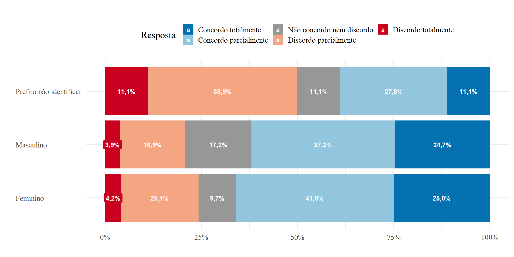
|
|
Total | ||||
|---|---|---|---|---|---|---|
| Discordo totalmente | Discordo parcialmente | Não concordo nem discordo | Concordo parcialmente | Concordo totalmente | ||
| Feminino | 6 | 29 | 14 | 59 | 36 | 144 |
| Masculino | 14 | 61 | 62 | 134 | 89 | 360 |
| Prefiro não identificar | 2 | 7 | 2 | 5 | 2 | 18 |
| Total | 22 | 97 | 78 | 198 | 127 | 522 | χ2=13.110 · df=8 · Cramer’s V=0.112 · Fisher’s p=0.117 |
4.10.4 4. Tempo de Empresa (há quanto tempo trabalha na Inmetrics?)
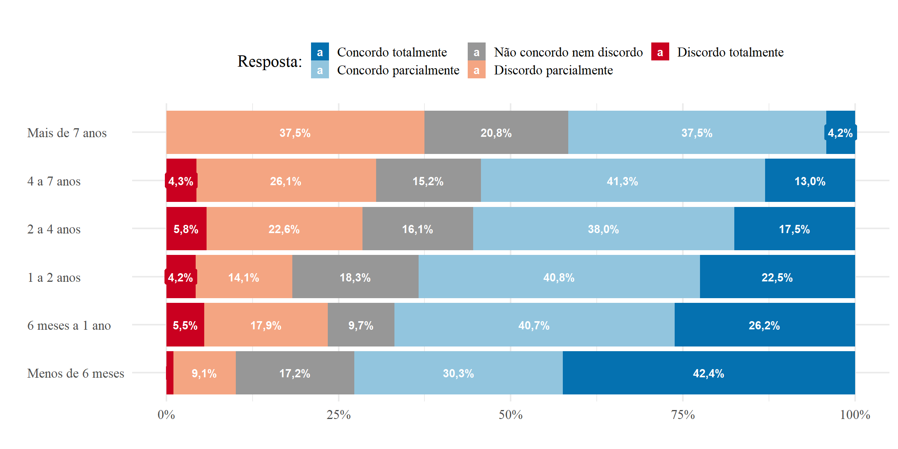
|
|
Total | ||||
|---|---|---|---|---|---|---|
| Discordo totalmente | Discordo parcialmente | Não concordo nem discordo | Concordo parcialmente | Concordo totalmente | ||
| 1 a 2 anos | 3 | 10 | 13 | 29 | 16 | 71 |
| 2 a 4 anos | 8 | 31 | 22 | 52 | 24 | 137 |
| 4 a 7 anos | 2 | 12 | 7 | 19 | 6 | 46 |
| 6 meses a 1 ano | 8 | 26 | 14 | 59 | 38 | 145 |
| Mais de 7 anos | 0 | 9 | 5 | 9 | 1 | 24 |
| Menos de 6 meses | 1 | 9 | 17 | 30 | 42 | 99 |
| Total | 22 | 97 | 78 | 198 | 127 | 522 | χ2=46.717 · df=20 · Cramer’s V=0.150 · Fisher’s p=0.000 |
4.10.5 5. Faixa etária:
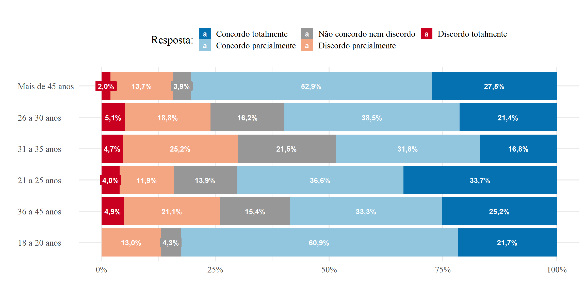
|
|
Total | ||||
|---|---|---|---|---|---|---|
| Discordo totalmente | Discordo parcialmente | Não concordo nem discordo | Concordo parcialmente | Concordo totalmente | ||
| 18 a 20 anos | 0 | 3 | 1 | 14 | 5 | 23 |
| 21 a 25 anos | 4 | 12 | 14 | 37 | 34 | 101 |
| 26 a 30 anos | 6 | 22 | 19 | 45 | 25 | 117 |
| 31 a 35 anos | 5 | 27 | 23 | 34 | 18 | 107 |
| 36 a 45 anos | 6 | 26 | 19 | 41 | 31 | 123 |
| Mais de 45 anos | 1 | 7 | 2 | 27 | 14 | 51 |
| Total | 22 | 97 | 78 | 198 | 127 | 522 | χ2=32.495 · df=20 · Cramer’s V=0.125 · Fisher’s p=0.050 |
4.10.6 6. Alocação:
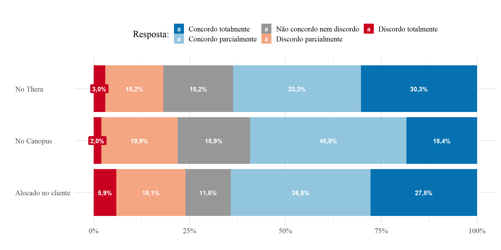
|
|
Total | ||||
|---|---|---|---|---|---|---|
| Discordo totalmente | Discordo parcialmente | Não concordo nem discordo | Concordo parcialmente | Concordo totalmente | ||
| Alocado no cliente | 17 | 52 | 34 | 105 | 80 | 288 |
| No Canopus | 4 | 40 | 38 | 82 | 37 | 201 |
| No Thera | 1 | 5 | 6 | 11 | 10 | 33 |
| Total | 22 | 97 | 78 | 198 | 127 | 522 | χ2=14.670 · df=8 · Cramer’s V=0.119 · Fisher’s p=0.067 |
4.11 Questão 10c
- Ao iniciar o trabalho, os colaboradores: [Conhecem seu/sua líder]
4.11.1 1. Eu sou:
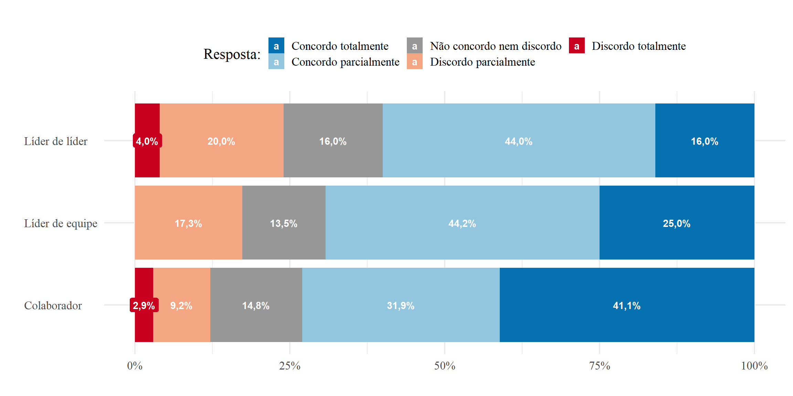
|
|
Total | ||||
|---|---|---|---|---|---|---|
| Discordo totalmente | Discordo parcialmente | Não concordo nem discordo | Concordo parcialmente | Concordo totalmente | ||
| Colaborador | 13 | 41 | 66 | 142 | 183 | 445 |
| LÃder de equipe | 0 | 9 | 7 | 23 | 13 | 52 |
| LÃder de lÃder | 1 | 5 | 4 | 11 | 4 | 25 |
| Total | 14 | 55 | 77 | 176 | 200 | 522 | χ2=16.357 · df=8 · Cramer’s V=0.125 · Fisher’s p=0.021 |
4.11.2 2. Área:
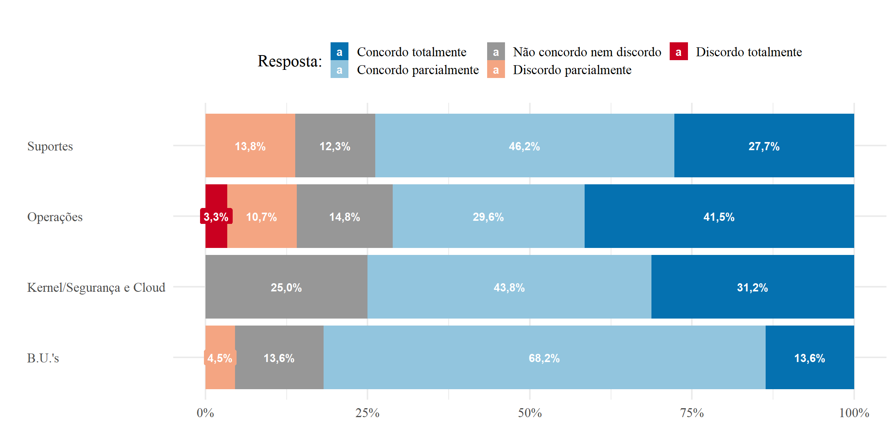
|
|
Total | ||||
|---|---|---|---|---|---|---|
| Discordo totalmente | Discordo parcialmente | Não concordo nem discordo | Concordo parcialmente | Concordo totalmente | ||
| BUs | 0 | 1 | 3 | 12 | 1 | 17 |
| Consulting | 1 | 8 | 4 | 15 | 29 | 57 |
| Financeiro/Administrativo/TI/CIG | 0 | 5 | 8 | 21 | 16 | 50 |
| GO e Controle de Qualidade | 3 | 3 | 6 | 13 | 15 | 40 |
| Kernel | 0 | 0 | 3 | 3 | 3 | 9 |
| Marketing | 0 | 0 | 0 | 1 | 0 | 1 |
| MS | 1 | 2 | 6 | 11 | 19 | 39 |
| Novos Negócios e Parcerias | 0 | 0 | 0 | 3 | 2 | 5 |
| Pessoas | 0 | 4 | 0 | 8 | 2 | 14 |
| PMS | 2 | 3 | 10 | 13 | 27 | 55 |
| QTS | 7 | 29 | 36 | 72 | 84 | 228 |
| Segurança & Cloud | 0 | 0 | 1 | 4 | 2 | 7 |
| Total | 14 | 55 | 77 | 176 | 200 | 522 | χ2=56.386 · df=44 · Cramer’s V=0.164 · Fisher’s p=0.066 |
4.11.3 3. Gênero:
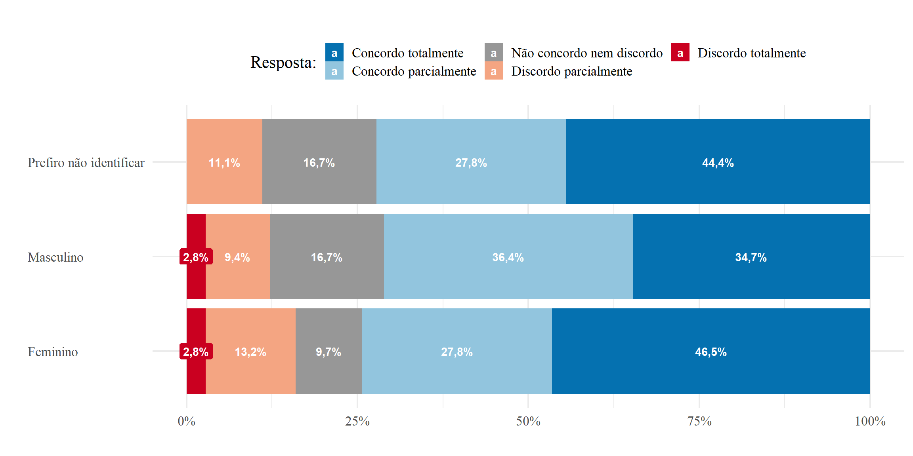
|
|
Total | ||||
|---|---|---|---|---|---|---|
| Discordo totalmente | Discordo parcialmente | Não concordo nem discordo | Concordo parcialmente | Concordo totalmente | ||
| Feminino | 4 | 19 | 14 | 40 | 67 | 144 |
| Masculino | 10 | 34 | 60 | 131 | 125 | 360 |
| Prefiro não identificar | 0 | 2 | 3 | 5 | 8 | 18 |
| Total | 14 | 55 | 77 | 176 | 200 | 522 | χ2=11.669 · df=8 · Cramer’s V=0.106 · Fisher’s p=0.145 |
4.11.4 4. Tempo de Empresa (há quanto tempo trabalha na Inmetrics?)
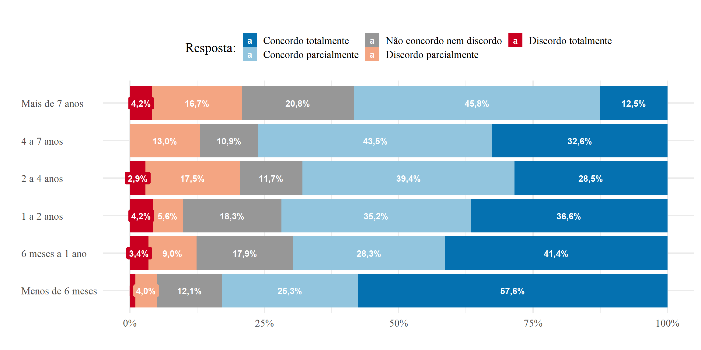
|
|
Total | ||||
|---|---|---|---|---|---|---|
| Discordo totalmente | Discordo parcialmente | Não concordo nem discordo | Concordo parcialmente | Concordo totalmente | ||
| 1 a 2 anos | 3 | 4 | 13 | 25 | 26 | 71 |
| 2 a 4 anos | 4 | 24 | 16 | 54 | 39 | 137 |
| 4 a 7 anos | 0 | 6 | 5 | 20 | 15 | 46 |
| 6 meses a 1 ano | 5 | 13 | 26 | 41 | 60 | 145 |
| Mais de 7 anos | 1 | 4 | 5 | 11 | 3 | 24 |
| Menos de 6 meses | 1 | 4 | 12 | 25 | 57 | 99 |
| Total | 14 | 55 | 77 | 176 | 200 | 522 | χ2=45.965 · df=20 · Cramer’s V=0.148 · Fisher’s p=0.001 |
4.11.5 5. Faixa etária:
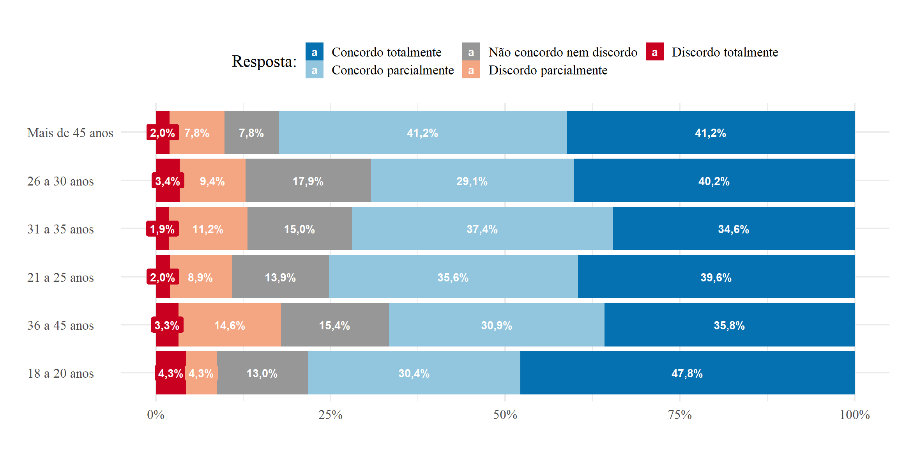
|
|
Total | ||||
|---|---|---|---|---|---|---|
| Discordo totalmente | Discordo parcialmente | Não concordo nem discordo | Concordo parcialmente | Concordo totalmente | ||
| 18 a 20 anos | 1 | 1 | 3 | 7 | 11 | 23 |
| 21 a 25 anos | 2 | 9 | 14 | 36 | 40 | 101 |
| 26 a 30 anos | 4 | 11 | 21 | 34 | 47 | 117 |
| 31 a 35 anos | 2 | 12 | 16 | 40 | 37 | 107 |
| 36 a 45 anos | 4 | 18 | 19 | 38 | 44 | 123 |
| Mais de 45 anos | 1 | 4 | 4 | 21 | 21 | 51 |
| Total | 14 | 55 | 77 | 176 | 200 | 522 | χ2=11.261 · df=20 · Cramer’s V=0.073 · Fisher’s p=0.941 |
4.11.6 6. Alocação:
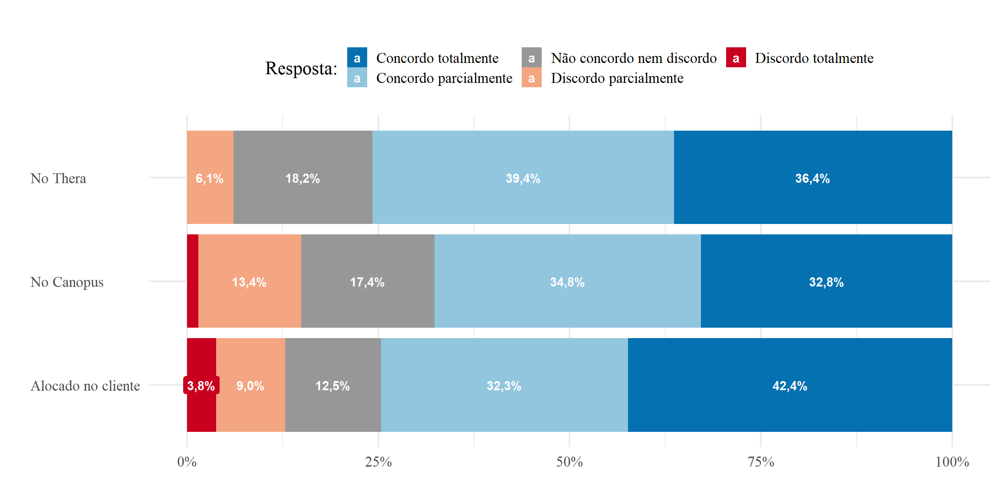
|
|
Total | ||||
|---|---|---|---|---|---|---|
| Discordo totalmente | Discordo parcialmente | Não concordo nem discordo | Concordo parcialmente | Concordo totalmente | ||
| Alocado no cliente | 11 | 26 | 36 | 93 | 122 | 288 |
| No Canopus | 3 | 27 | 35 | 70 | 66 | 201 |
| No Thera | 0 | 2 | 6 | 13 | 12 | 33 |
| Total | 14 | 55 | 77 | 176 | 200 | 522 | χ2=11.803 · df=8 · Cramer’s V=0.106 · Fisher’s p=0.193 |
4.12 Questão 14
- As questões e dificuldades que surgem no dia a dia da Inmetrics são abordadas com visão de médio/longo prazo. [->]
4.12.1 1. Eu sou:
|
|
Total | ||||
|---|---|---|---|---|---|---|
| Discordo totalmente | Discordo parcialmente | Não concordo nem discordo | Concordo parcialmente | Concordo totalmente | ||
| Colaborador | 32 | 61 | 155 | 154 | 43 | 445 |
| LÃder de equipe | 7 | 10 | 11 | 20 | 4 | 52 |
| LÃder de lÃder | 6 | 8 | 1 | 9 | 1 | 25 |
| Total | 45 | 79 | 167 | 183 | 48 | 522 | χ2=25.527 · df=8 · Cramer’s V=0.156 · Fisher’s p=0.001 |
4.12.2 2. Área:
|
|
Total | ||||
|---|---|---|---|---|---|---|
| Discordo totalmente | Discordo parcialmente | Não concordo nem discordo | Concordo parcialmente | Concordo totalmente | ||
| BUs | 3 | 5 | 4 | 5 | 0 | 17 |
| Consulting | 5 | 11 | 16 | 22 | 3 | 57 |
| Financeiro/Administrativo/TI/CIG | 4 | 6 | 20 | 16 | 4 | 50 |
| GO e Controle de Qualidade | 2 | 7 | 12 | 17 | 2 | 40 |
| Kernel | 0 | 4 | 2 | 2 | 1 | 9 |
| Marketing | 0 | 0 | 1 | 0 | 0 | 1 |
| MS | 1 | 5 | 12 | 18 | 3 | 39 |
| Novos Negócios e Parcerias | 1 | 1 | 0 | 3 | 0 | 5 |
| Pessoas | 3 | 2 | 0 | 6 | 3 | 14 |
| PMS | 6 | 9 | 22 | 14 | 4 | 55 |
| QTS | 19 | 28 | 78 | 77 | 26 | 228 |
| Segurança & Cloud | 1 | 1 | 0 | 3 | 2 | 7 |
| Total | 45 | 79 | 167 | 183 | 48 | 522 | χ2=48.873 · df=44 · Cramer’s V=0.153 · Fisher’s p=0.128 |
4.12.3 3. Gênero:
|
|
Total | ||||
|---|---|---|---|---|---|---|
| Discordo totalmente | Discordo parcialmente | Não concordo nem discordo | Concordo parcialmente | Concordo totalmente | ||
| Feminino | 15 | 18 | 44 | 47 | 20 | 144 |
| Masculino | 26 | 59 | 120 | 128 | 27 | 360 |
| Prefiro não identificar | 4 | 2 | 3 | 8 | 1 | 18 |
| Total | 45 | 79 | 167 | 183 | 48 | 522 | χ2=13.615 · df=8 · Cramer’s V=0.114 · Fisher’s p=0.106 |
4.12.4 4. Tempo de Empresa (há quanto tempo trabalha na Inmetrics?)
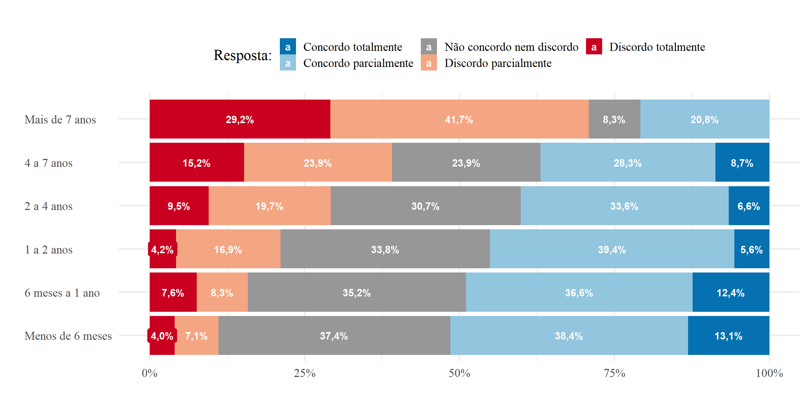
|
|
Total | ||||
|---|---|---|---|---|---|---|
| Discordo totalmente | Discordo parcialmente | Não concordo nem discordo | Concordo parcialmente | Concordo totalmente | ||
| 1 a 2 anos | 3 | 12 | 24 | 28 | 4 | 71 |
| 2 a 4 anos | 13 | 27 | 42 | 46 | 9 | 137 |
| 4 a 7 anos | 7 | 11 | 11 | 13 | 4 | 46 |
| 6 meses a 1 ano | 11 | 12 | 51 | 53 | 18 | 145 |
| Mais de 7 anos | 7 | 10 | 2 | 5 | 0 | 24 |
| Menos de 6 meses | 4 | 7 | 37 | 38 | 13 | 99 |
| Total | 45 | 79 | 167 | 183 | 48 | 522 | χ2=59.720 · df=20 · Cramer’s V=0.169 · Fisher’s p=0.000 |
4.12.5 5. Faixa etária:
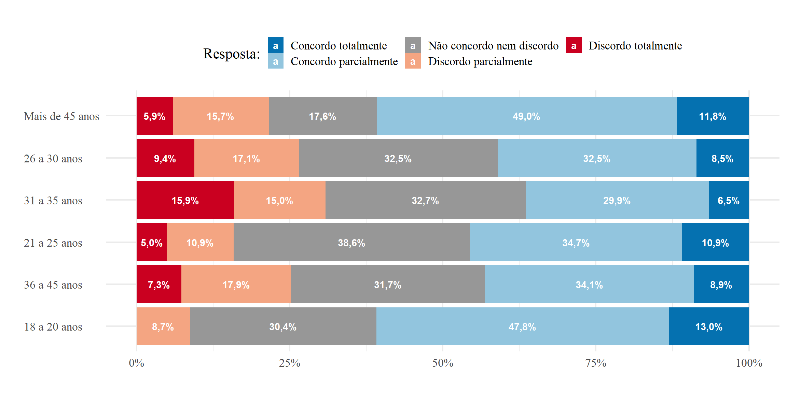
|
|
Total | ||||
|---|---|---|---|---|---|---|
| Discordo totalmente | Discordo parcialmente | Não concordo nem discordo | Concordo parcialmente | Concordo totalmente | ||
| 18 a 20 anos | 0 | 2 | 7 | 11 | 3 | 23 |
| 21 a 25 anos | 5 | 11 | 39 | 35 | 11 | 101 |
| 26 a 30 anos | 11 | 20 | 38 | 38 | 10 | 117 |
| 31 a 35 anos | 17 | 16 | 35 | 32 | 7 | 107 |
| 36 a 45 anos | 9 | 22 | 39 | 42 | 11 | 123 |
| Mais de 45 anos | 3 | 8 | 9 | 25 | 6 | 51 |
| Total | 45 | 79 | 167 | 183 | 48 | 522 | χ2=25.257 · df=20 · Cramer’s V=0.110 · Fisher’s p=0.221 |
4.12.6 6. Alocação:
|
|
Total | ||||
|---|---|---|---|---|---|---|
| Discordo totalmente | Discordo parcialmente | Não concordo nem discordo | Concordo parcialmente | Concordo totalmente | ||
| Alocado no cliente | 20 | 41 | 101 | 102 | 24 | 288 |
| No Canopus | 21 | 35 | 56 | 70 | 19 | 201 |
| No Thera | 4 | 3 | 10 | 11 | 5 | 33 |
| Total | 45 | 79 | 167 | 183 | 48 | 522 | χ2=7.342 · df=8 · Cramer’s V=0.084 · Fisher’s p=0.474 |
4.13 Questão 11a
- O ambiente na Inmetrics é: [Informal]
4.13.1 1. Eu sou:
|
|
Total | ||||
|---|---|---|---|---|---|---|
| Discordo totalmente | Discordo parcialmente | Não concordo nem discordo | Concordo parcialmente | Concordo totalmente | ||
| Colaborador | 26 | 22 | 92 | 167 | 138 | 445 |
| LÃder de equipe | 0 | 0 | 10 | 14 | 28 | 52 |
| LÃder de lÃder | 0 | 0 | 2 | 15 | 8 | 25 |
| Total | 26 | 22 | 104 | 196 | 174 | 522 | χ2=22.445 · df=8 · Cramer’s V=0.147 · Fisher’s p=0.008 |
4.13.2 2. Área:
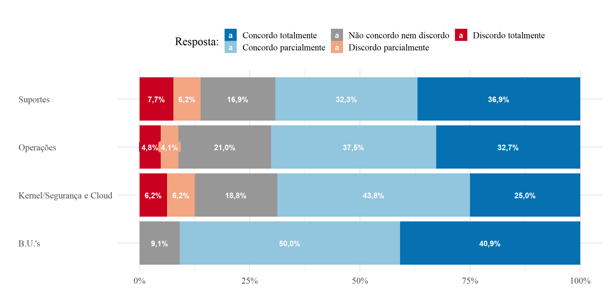
|
|
Total | ||||
|---|---|---|---|---|---|---|
| Discordo totalmente | Discordo parcialmente | Não concordo nem discordo | Concordo parcialmente | Concordo totalmente | ||
| BUs | 0 | 0 | 2 | 9 | 6 | 17 |
| Consulting | 3 | 1 | 9 | 20 | 24 | 57 |
| Financeiro/Administrativo/TI/CIG | 4 | 4 | 9 | 17 | 16 | 50 |
| GO e Controle de Qualidade | 2 | 3 | 9 | 15 | 11 | 40 |
| Kernel | 0 | 1 | 1 | 4 | 3 | 9 |
| Marketing | 0 | 0 | 0 | 0 | 1 | 1 |
| MS | 3 | 4 | 6 | 12 | 14 | 39 |
| Novos Negócios e Parcerias | 0 | 0 | 0 | 2 | 3 | 5 |
| Pessoas | 1 | 0 | 2 | 4 | 7 | 14 |
| PMS | 0 | 3 | 12 | 25 | 15 | 55 |
| QTS | 12 | 6 | 52 | 85 | 73 | 228 |
| Segurança & Cloud | 1 | 0 | 2 | 3 | 1 | 7 |
| Total | 26 | 22 | 104 | 196 | 174 | 522 | χ2=33.815 · df=44 · Cramer’s V=0.127 · Fisher’s p=0.787 |
4.13.3 3. Gênero:
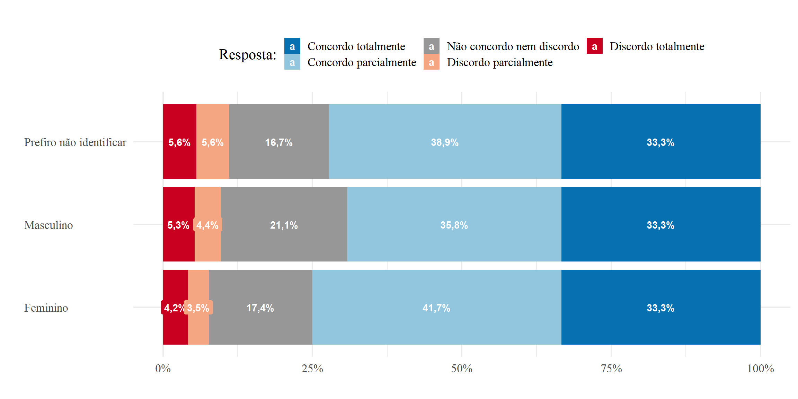
|
|
Total | ||||
|---|---|---|---|---|---|---|
| Discordo totalmente | Discordo parcialmente | Não concordo nem discordo | Concordo parcialmente | Concordo totalmente | ||
| Feminino | 6 | 5 | 25 | 60 | 48 | 144 |
| Masculino | 19 | 16 | 76 | 129 | 120 | 360 |
| Prefiro não identificar | 1 | 1 | 3 | 7 | 6 | 18 |
| Total | 26 | 22 | 104 | 196 | 174 | 522 | χ2=2.344 · df=8 · Cramer’s V=0.047 · Fisher’s p=0.942 |
4.13.4 4. Tempo de Empresa (há quanto tempo trabalha na Inmetrics?)
|
|
Total | ||||
|---|---|---|---|---|---|---|
| Discordo totalmente | Discordo parcialmente | Não concordo nem discordo | Concordo parcialmente | Concordo totalmente | ||
| 1 a 2 anos | 6 | 1 | 14 | 25 | 25 | 71 |
| 2 a 4 anos | 5 | 7 | 27 | 50 | 48 | 137 |
| 4 a 7 anos | 1 | 1 | 8 | 21 | 15 | 46 |
| 6 meses a 1 ano | 6 | 11 | 32 | 53 | 43 | 145 |
| Mais de 7 anos | 0 | 0 | 4 | 13 | 7 | 24 |
| Menos de 6 meses | 8 | 2 | 19 | 34 | 36 | 99 |
| Total | 26 | 22 | 104 | 196 | 174 | 522 | χ2=19.191 · df=20 · Cramer’s V=0.096 · Fisher’s p=0.704 |
4.13.5 5. Faixa etária:
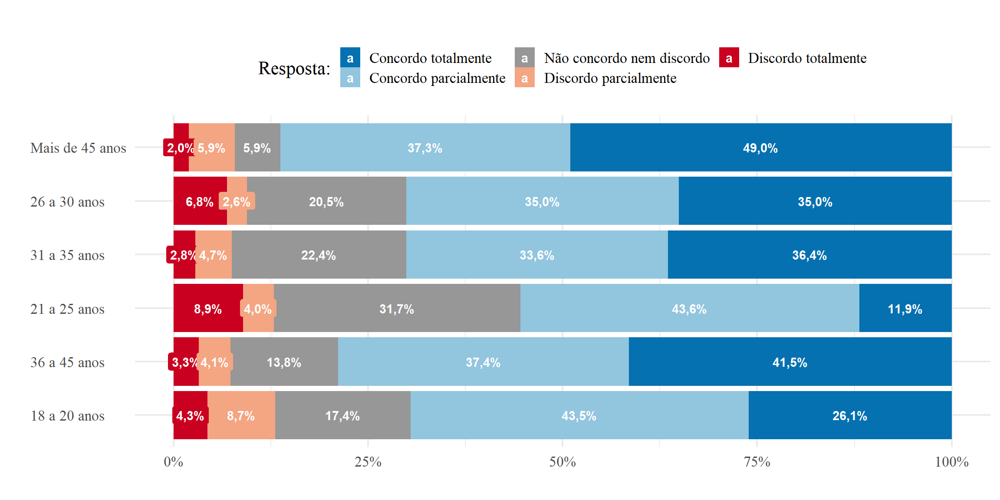
|
|
Total | ||||
|---|---|---|---|---|---|---|
| Discordo totalmente | Discordo parcialmente | Não concordo nem discordo | Concordo parcialmente | Concordo totalmente | ||
| 18 a 20 anos | 1 | 2 | 4 | 10 | 6 | 23 |
| 21 a 25 anos | 9 | 4 | 32 | 44 | 12 | 101 |
| 26 a 30 anos | 8 | 3 | 24 | 41 | 41 | 117 |
| 31 a 35 anos | 3 | 5 | 24 | 36 | 39 | 107 |
| 36 a 45 anos | 4 | 5 | 17 | 46 | 51 | 123 |
| Mais de 45 anos | 1 | 3 | 3 | 19 | 25 | 51 |
| Total | 26 | 22 | 104 | 196 | 174 | 522 | χ2=46.447 · df=20 · Cramer’s V=0.149 · Fisher’s p=0.000 |
4.13.6 6. Alocação:
|
|
Total | ||||
|---|---|---|---|---|---|---|
| Discordo totalmente | Discordo parcialmente | Não concordo nem discordo | Concordo parcialmente | Concordo totalmente | ||
| Alocado no cliente | 12 | 10 | 67 | 110 | 89 | 288 |
| No Canopus | 12 | 11 | 32 | 70 | 76 | 201 |
| No Thera | 2 | 1 | 5 | 16 | 9 | 33 |
| Total | 26 | 22 | 104 | 196 | 174 | 522 | χ2=9.267 · df=8 · Cramer’s V=0.094 · Fisher’s p=0.279 |
4.14 Questão 11b
- O ambiente na Inmetrics é: [De pressão]
4.14.1 1. Eu sou:
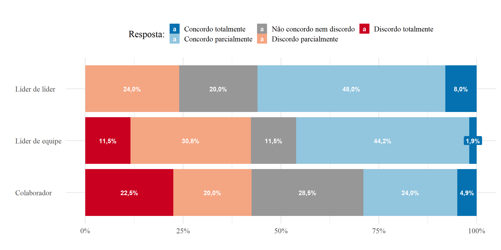
|
|
Total | ||||
|---|---|---|---|---|---|---|
| Discordo totalmente | Discordo parcialmente | Não concordo nem discordo | Concordo parcialmente | Concordo totalmente | ||
| Colaborador | 100 | 89 | 127 | 107 | 22 | 445 |
| LÃder de equipe | 6 | 16 | 6 | 23 | 1 | 52 |
| LÃder de lÃder | 0 | 6 | 5 | 12 | 2 | 25 |
| Total | 106 | 111 | 138 | 142 | 25 | 522 | χ2=28.807 · df=8 · Cramer’s V=0.166 · Fisher’s p=0.000 |
4.14.2 2. Área:
|
|
Total | ||||
|---|---|---|---|---|---|---|
| Discordo totalmente | Discordo parcialmente | Não concordo nem discordo | Concordo parcialmente | Concordo totalmente | ||
| BUs | 0 | 3 | 4 | 10 | 0 | 17 |
| Consulting | 15 | 19 | 8 | 14 | 1 | 57 |
| Financeiro/Administrativo/TI/CIG | 12 | 12 | 13 | 9 | 4 | 50 |
| GO e Controle de Qualidade | 7 | 4 | 10 | 15 | 4 | 40 |
| Kernel | 1 | 2 | 4 | 2 | 0 | 9 |
| Marketing | 0 | 0 | 1 | 0 | 0 | 1 |
| MS | 8 | 7 | 8 | 13 | 3 | 39 |
| Novos Negócios e Parcerias | 0 | 1 | 0 | 4 | 0 | 5 |
| Pessoas | 4 | 3 | 2 | 4 | 1 | 14 |
| PMS | 7 | 6 | 14 | 22 | 6 | 55 |
| QTS | 51 | 53 | 73 | 46 | 5 | 228 |
| Segurança & Cloud | 1 | 1 | 1 | 3 | 1 | 7 |
| Total | 106 | 111 | 138 | 142 | 25 | 522 | χ2=71.070 · df=44 · Cramer’s V=0.184 · Fisher’s p=0.003 |
4.14.3 3. Gênero:
|
|
Total | ||||
|---|---|---|---|---|---|---|
| Discordo totalmente | Discordo parcialmente | Não concordo nem discordo | Concordo parcialmente | Concordo totalmente | ||
| Feminino | 30 | 38 | 33 | 35 | 8 | 144 |
| Masculino | 75 | 71 | 97 | 101 | 16 | 360 |
| Prefiro não identificar | 1 | 2 | 8 | 6 | 1 | 18 |
| Total | 106 | 111 | 138 | 142 | 25 | 522 | χ2=9.046 · df=8 · Cramer’s V=0.093 · Fisher’s p=0.319 |
4.14.4 4. Tempo de Empresa (há quanto tempo trabalha na Inmetrics?)
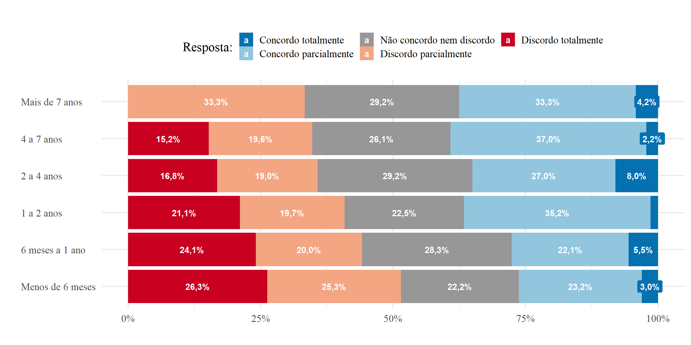
|
|
Total | ||||
|---|---|---|---|---|---|---|
| Discordo totalmente | Discordo parcialmente | Não concordo nem discordo | Concordo parcialmente | Concordo totalmente | ||
| 1 a 2 anos | 15 | 14 | 16 | 25 | 1 | 71 |
| 2 a 4 anos | 23 | 26 | 40 | 37 | 11 | 137 |
| 4 a 7 anos | 7 | 9 | 12 | 17 | 1 | 46 |
| 6 meses a 1 ano | 35 | 29 | 41 | 32 | 8 | 145 |
| Mais de 7 anos | 0 | 8 | 7 | 8 | 1 | 24 |
| Menos de 6 meses | 26 | 25 | 22 | 23 | 3 | 99 |
| Total | 106 | 111 | 138 | 142 | 25 | 522 | χ2=25.562 · df=20 · Cramer’s V=0.111 · Fisher’s p=0.134 |
4.14.5 5. Faixa etária:
|
|
Total | ||||
|---|---|---|---|---|---|---|
| Discordo totalmente | Discordo parcialmente | Não concordo nem discordo | Concordo parcialmente | Concordo totalmente | ||
| 18 a 20 anos | 9 | 7 | 3 | 4 | 0 | 23 |
| 21 a 25 anos | 28 | 20 | 33 | 18 | 2 | 101 |
| 26 a 30 anos | 27 | 18 | 38 | 29 | 5 | 117 |
| 31 a 35 anos | 12 | 27 | 32 | 30 | 6 | 107 |
| 36 a 45 anos | 21 | 30 | 26 | 38 | 8 | 123 |
| Mais de 45 anos | 9 | 9 | 6 | 23 | 4 | 51 |
| Total | 106 | 111 | 138 | 142 | 25 | 522 | χ2=43.259 · df=20 · Cramer’s V=0.144 · Fisher’s p=0.003 |
4.14.6 6. Alocação:
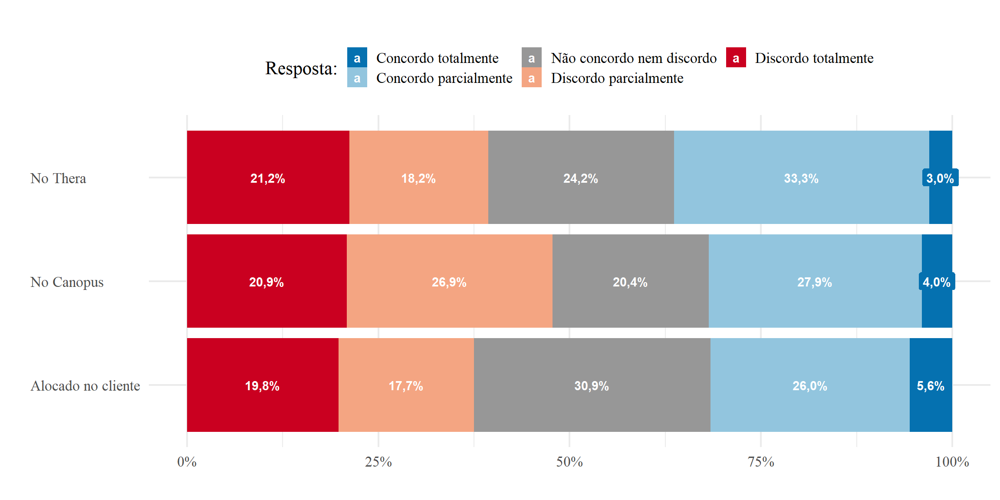
|
|
Total | ||||
|---|---|---|---|---|---|---|
| Discordo totalmente | Discordo parcialmente | Não concordo nem discordo | Concordo parcialmente | Concordo totalmente | ||
| Alocado no cliente | 57 | 51 | 89 | 75 | 16 | 288 |
| No Canopus | 42 | 54 | 41 | 56 | 8 | 201 |
| No Thera | 7 | 6 | 8 | 11 | 1 | 33 |
| Total | 106 | 111 | 138 | 142 | 25 | 522 | χ2=11.388 · df=8 · Cramer’s V=0.104 · Fisher’s p=0.192 |
4.15 Questão 11c
- O ambiente na Inmetrics é: [Flexível]
4.15.1 1. Eu sou:
|
|
Total | ||||
|---|---|---|---|---|---|---|
| Discordo totalmente | Discordo parcialmente | Não concordo nem discordo | Concordo parcialmente | Concordo totalmente | ||
| Colaborador | 5 | 16 | 46 | 169 | 209 | 445 |
| LÃder de equipe | 0 | 3 | 3 | 24 | 22 | 52 |
| LÃder de lÃder | 0 | 0 | 2 | 14 | 9 | 25 |
| Total | 5 | 19 | 51 | 207 | 240 | 522 | χ2=6.846 · df=8 · Cramer’s V=0.081 · Fisher’s p=0.648 |
4.15.2 2. Área:
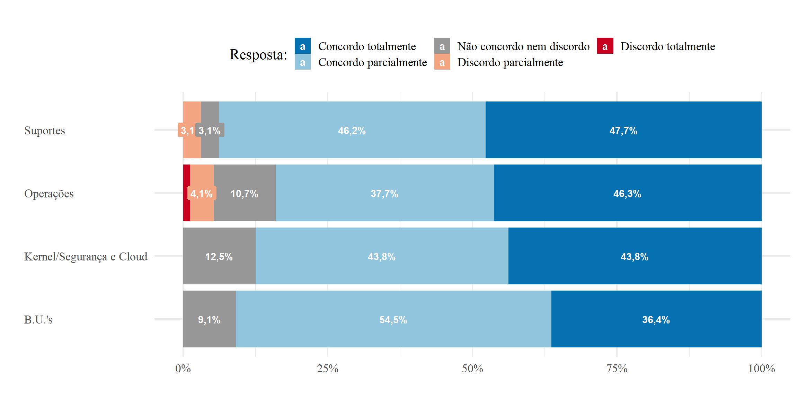
|
|
Total | ||||
|---|---|---|---|---|---|---|
| Discordo totalmente | Discordo parcialmente | Não concordo nem discordo | Concordo parcialmente | Concordo totalmente | ||
| BUs | 0 | 0 | 2 | 10 | 5 | 17 |
| Consulting | 0 | 0 | 8 | 24 | 25 | 57 |
| Financeiro/Administrativo/TI/CIG | 0 | 1 | 2 | 25 | 22 | 50 |
| GO e Controle de Qualidade | 1 | 3 | 3 | 17 | 16 | 40 |
| Kernel | 0 | 0 | 0 | 4 | 5 | 9 |
| Marketing | 0 | 0 | 0 | 1 | 0 | 1 |
| MS | 0 | 3 | 3 | 13 | 20 | 39 |
| Novos Negócios e Parcerias | 0 | 0 | 0 | 2 | 3 | 5 |
| Pessoas | 0 | 1 | 0 | 4 | 9 | 14 |
| PMS | 3 | 2 | 6 | 27 | 17 | 55 |
| QTS | 1 | 9 | 25 | 77 | 116 | 228 |
| Segurança & Cloud | 0 | 0 | 2 | 3 | 2 | 7 |
| Total | 5 | 19 | 51 | 207 | 240 | 522 | χ2=47.970 · df=44 · Cramer’s V=0.152 · Fisher’s p=0.267 |
4.15.3 3. Gênero:
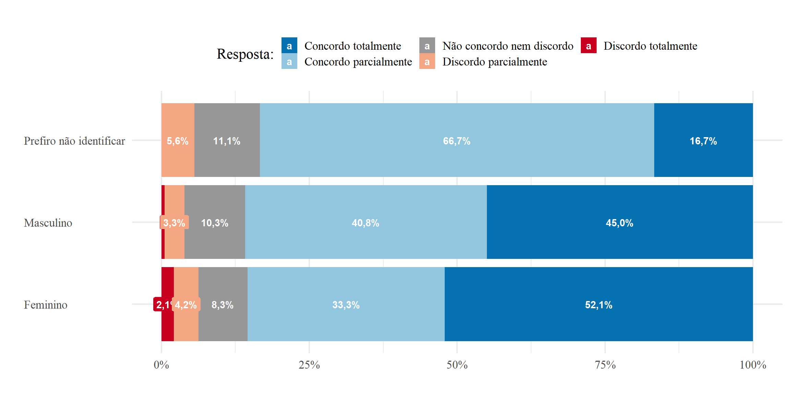
|
|
Total | ||||
|---|---|---|---|---|---|---|
| Discordo totalmente | Discordo parcialmente | Não concordo nem discordo | Concordo parcialmente | Concordo totalmente | ||
| Feminino | 3 | 6 | 12 | 48 | 75 | 144 |
| Masculino | 2 | 12 | 37 | 147 | 162 | 360 |
| Prefiro não identificar | 0 | 1 | 2 | 12 | 3 | 18 |
| Total | 5 | 19 | 51 | 207 | 240 | 522 | χ2=12.997 · df=8 · Cramer’s V=0.112 · Fisher’s p=0.053 |
4.15.4 4. Tempo de Empresa (há quanto tempo trabalha na Inmetrics?)
|
|
Total | ||||
|---|---|---|---|---|---|---|
| Discordo totalmente | Discordo parcialmente | Não concordo nem discordo | Concordo parcialmente | Concordo totalmente | ||
| 1 a 2 anos | 2 | 4 | 9 | 29 | 27 | 71 |
| 2 a 4 anos | 1 | 4 | 12 | 61 | 59 | 137 |
| 4 a 7 anos | 0 | 2 | 2 | 27 | 15 | 46 |
| 6 meses a 1 ano | 1 | 6 | 13 | 49 | 76 | 145 |
| Mais de 7 anos | 0 | 1 | 2 | 12 | 9 | 24 |
| Menos de 6 meses | 1 | 2 | 13 | 29 | 54 | 99 |
| Total | 5 | 19 | 51 | 207 | 240 | 522 | χ2=24.630 · df=20 · Cramer’s V=0.109 · Fisher’s p=0.151 |
4.15.5 5. Faixa etária:
|
|
Total | ||||
|---|---|---|---|---|---|---|
| Discordo totalmente | Discordo parcialmente | Não concordo nem discordo | Concordo parcialmente | Concordo totalmente | ||
| 18 a 20 anos | 0 | 0 | 2 | 6 | 15 | 23 |
| 21 a 25 anos | 3 | 5 | 12 | 31 | 50 | 101 |
| 26 a 30 anos | 0 | 3 | 8 | 51 | 55 | 117 |
| 31 a 35 anos | 1 | 7 | 14 | 43 | 42 | 107 |
| 36 a 45 anos | 1 | 4 | 10 | 52 | 56 | 123 |
| Mais de 45 anos | 0 | 0 | 5 | 24 | 22 | 51 |
| Total | 5 | 19 | 51 | 207 | 240 | 522 | χ2=23.051 · df=20 · Cramer’s V=0.105 · Fisher’s p=0.372 |
4.15.6 6. Alocação:
|
|
Total | ||||
|---|---|---|---|---|---|---|
| Discordo totalmente | Discordo parcialmente | Não concordo nem discordo | Concordo parcialmente | Concordo totalmente | ||
| Alocado no cliente | 4 | 12 | 37 | 112 | 123 | 288 |
| No Canopus | 0 | 6 | 11 | 86 | 98 | 201 |
| No Thera | 1 | 1 | 3 | 9 | 19 | 33 |
| Total | 5 | 19 | 51 | 207 | 240 | 522 | χ2=14.848 · df=8 · Cramer’s V=0.119 · Fisher’s p=0.033 |
4.16 Questão 11d
- O ambiente na Inmetrics é: [Desorganizado]
4.16.1 1. Eu sou:
|
|
Total | ||||
|---|---|---|---|---|---|---|
| Discordo totalmente | Discordo parcialmente | Não concordo nem discordo | Concordo parcialmente | Concordo totalmente | ||
| Colaborador | 141 | 124 | 94 | 71 | 15 | 445 |
| LÃder de equipe | 9 | 11 | 10 | 20 | 2 | 52 |
| LÃder de lÃder | 1 | 5 | 7 | 10 | 2 | 25 |
| Total | 151 | 140 | 111 | 101 | 19 | 522 | χ2=30.220 · df=8 · Cramer’s V=0.170 · Fisher’s p=0.000 |
4.16.2 2. Área:
|
|
Total | ||||
|---|---|---|---|---|---|---|
| Discordo totalmente | Discordo parcialmente | Não concordo nem discordo | Concordo parcialmente | Concordo totalmente | ||
| BUs | 0 | 3 | 6 | 7 | 1 | 17 |
| Consulting | 24 | 14 | 5 | 12 | 2 | 57 |
| Financeiro/Administrativo/TI/CIG | 15 | 12 | 13 | 8 | 2 | 50 |
| GO e Controle de Qualidade | 7 | 14 | 9 | 7 | 3 | 40 |
| Kernel | 1 | 3 | 2 | 3 | 0 | 9 |
| Marketing | 0 | 0 | 1 | 0 | 0 | 1 |
| MS | 14 | 13 | 5 | 5 | 2 | 39 |
| Novos Negócios e Parcerias | 1 | 1 | 0 | 3 | 0 | 5 |
| Pessoas | 5 | 1 | 4 | 4 | 0 | 14 |
| PMS | 13 | 11 | 14 | 12 | 5 | 55 |
| QTS | 70 | 67 | 49 | 38 | 4 | 228 |
| Segurança & Cloud | 1 | 1 | 3 | 2 | 0 | 7 |
| Total | 151 | 140 | 111 | 101 | 19 | 522 | χ2=57.519 · df=44 · Cramer’s V=0.166 · Fisher’s p=0.029 |
4.16.3 3. Gênero:
|
|
Total | ||||
|---|---|---|---|---|---|---|
| Discordo totalmente | Discordo parcialmente | Não concordo nem discordo | Concordo parcialmente | Concordo totalmente | ||
| Feminino | 46 | 28 | 36 | 29 | 5 | 144 |
| Masculino | 100 | 109 | 71 | 67 | 13 | 360 |
| Prefiro não identificar | 5 | 3 | 4 | 5 | 1 | 18 |
| Total | 151 | 140 | 111 | 101 | 19 | 522 | χ2=8.201 · df=8 · Cramer’s V=0.089 · Fisher’s p=0.308 |
4.16.4 4. Tempo de Empresa (há quanto tempo trabalha na Inmetrics?)

|
|
Total | ||||
|---|---|---|---|---|---|---|
| Discordo totalmente | Discordo parcialmente | Não concordo nem discordo | Concordo parcialmente | Concordo totalmente | ||
| 1 a 2 anos | 20 | 17 | 15 | 16 | 3 | 71 |
| 2 a 4 anos | 29 | 38 | 30 | 32 | 8 | 137 |
| 4 a 7 anos | 8 | 11 | 6 | 20 | 1 | 46 |
| 6 meses a 1 ano | 50 | 45 | 31 | 15 | 4 | 145 |
| Mais de 7 anos | 1 | 3 | 8 | 9 | 3 | 24 |
| Menos de 6 meses | 43 | 26 | 21 | 9 | 0 | 99 |
| Total | 151 | 140 | 111 | 101 | 19 | 522 | χ2=67.312 · df=20 · Cramer’s V=0.180 · Fisher’s p=0.000 |
4.16.5 5. Faixa etária:
|
|
Total | ||||
|---|---|---|---|---|---|---|
| Discordo totalmente | Discordo parcialmente | Não concordo nem discordo | Concordo parcialmente | Concordo totalmente | ||
| 18 a 20 anos | 13 | 5 | 4 | 1 | 0 | 23 |
| 21 a 25 anos | 34 | 32 | 18 | 13 | 4 | 101 |
| 26 a 30 anos | 33 | 31 | 28 | 21 | 4 | 117 |
| 31 a 35 anos | 23 | 27 | 29 | 24 | 4 | 107 |
| 36 a 45 anos | 33 | 29 | 26 | 28 | 7 | 123 |
| Mais de 45 anos | 15 | 16 | 6 | 14 | 0 | 51 |
| Total | 151 | 140 | 111 | 101 | 19 | 522 | χ2=28.326 · df=20 · Cramer’s V=0.116 · Fisher’s p=0.119 |
4.16.6 6. Alocação:
|
|
Total | ||||
|---|---|---|---|---|---|---|
| Discordo totalmente | Discordo parcialmente | Não concordo nem discordo | Concordo parcialmente | Concordo totalmente | ||
| Alocado no cliente | 90 | 72 | 69 | 49 | 8 | 288 |
| No Canopus | 49 | 59 | 38 | 46 | 9 | 201 |
| No Thera | 12 | 9 | 4 | 6 | 2 | 33 |
| Total | 151 | 140 | 111 | 101 | 19 | 522 | χ2=9.892 · df=8 · Cramer’s V=0.097 · Fisher’s p=0.240 |
4.17 Questão 11e
- O ambiente na Inmetrics é: [Leve]
4.17.1 1. Eu sou:
|
|
Total | ||||
|---|---|---|---|---|---|---|
| Discordo totalmente | Discordo parcialmente | Não concordo nem discordo | Concordo parcialmente | Concordo totalmente | ||
| Colaborador | 10 | 31 | 102 | 148 | 154 | 445 |
| LÃder de equipe | 1 | 9 | 8 | 25 | 9 | 52 |
| LÃder de lÃder | 0 | 3 | 7 | 10 | 5 | 25 |
| Total | 11 | 43 | 117 | 183 | 168 | 522 | χ2=17.258 · df=8 · Cramer’s V=0.129 · Fisher’s p=0.027 |
4.17.2 2. Área:
|
|
Total | ||||
|---|---|---|---|---|---|---|
| Discordo totalmente | Discordo parcialmente | Não concordo nem discordo | Concordo parcialmente | Concordo totalmente | ||
| BUs | 0 | 5 | 2 | 7 | 3 | 17 |
| Consulting | 1 | 6 | 9 | 18 | 23 | 57 |
| Financeiro/Administrativo/TI/CIG | 2 | 4 | 11 | 19 | 14 | 50 |
| GO e Controle de Qualidade | 2 | 3 | 8 | 16 | 11 | 40 |
| Kernel | 0 | 0 | 2 | 3 | 4 | 9 |
| Marketing | 0 | 0 | 1 | 0 | 0 | 1 |
| MS | 1 | 2 | 9 | 14 | 13 | 39 |
| Novos Negócios e Parcerias | 0 | 0 | 1 | 4 | 0 | 5 |
| Pessoas | 0 | 2 | 2 | 6 | 4 | 14 |
| PMS | 2 | 9 | 13 | 20 | 11 | 55 |
| QTS | 3 | 11 | 58 | 74 | 82 | 228 |
| Segurança & Cloud | 0 | 1 | 1 | 2 | 3 | 7 |
| Total | 11 | 43 | 117 | 183 | 168 | 522 | χ2=45.081 · df=44 · Cramer’s V=0.147 · Fisher’s p=0.348 |
4.17.3 3. Gênero:
|
|
Total | ||||
|---|---|---|---|---|---|---|
| Discordo totalmente | Discordo parcialmente | Não concordo nem discordo | Concordo parcialmente | Concordo totalmente | ||
| Feminino | 3 | 12 | 30 | 48 | 51 | 144 |
| Masculino | 7 | 29 | 82 | 129 | 113 | 360 |
| Prefiro não identificar | 1 | 2 | 5 | 6 | 4 | 18 |
| Total | 11 | 43 | 117 | 183 | 168 | 522 | χ2=2.963 · df=8 · Cramer’s V=0.053 · Fisher’s p=0.841 |
4.17.4 4. Tempo de Empresa (há quanto tempo trabalha na Inmetrics?)
|
|
Total | ||||
|---|---|---|---|---|---|---|
| Discordo totalmente | Discordo parcialmente | Não concordo nem discordo | Concordo parcialmente | Concordo totalmente | ||
| 1 a 2 anos | 0 | 4 | 20 | 23 | 24 | 71 |
| 2 a 4 anos | 7 | 18 | 27 | 55 | 30 | 137 |
| 4 a 7 anos | 0 | 6 | 8 | 21 | 11 | 46 |
| 6 meses a 1 ano | 4 | 7 | 30 | 52 | 52 | 145 |
| Mais de 7 anos | 0 | 3 | 9 | 7 | 5 | 24 |
| Menos de 6 meses | 0 | 5 | 23 | 25 | 46 | 99 |
| Total | 11 | 43 | 117 | 183 | 168 | 522 | χ2=44.539 · df=20 · Cramer’s V=0.146 · Fisher’s p=0.001 |
4.17.5 5. Faixa etária:

|
|
Total | ||||
|---|---|---|---|---|---|---|
| Discordo totalmente | Discordo parcialmente | Não concordo nem discordo | Concordo parcialmente | Concordo totalmente | ||
| 18 a 20 anos | 1 | 0 | 2 | 10 | 10 | 23 |
| 21 a 25 anos | 2 | 4 | 29 | 28 | 38 | 101 |
| 26 a 30 anos | 1 | 10 | 29 | 35 | 42 | 117 |
| 31 a 35 anos | 2 | 10 | 24 | 38 | 33 | 107 |
| 36 a 45 anos | 5 | 15 | 21 | 54 | 28 | 123 |
| Mais de 45 anos | 0 | 4 | 12 | 18 | 17 | 51 |
| Total | 11 | 43 | 117 | 183 | 168 | 522 | χ2=28.496 · df=20 · Cramer’s V=0.117 · Fisher’s p=0.084 |
4.17.6 6. Alocação:
|
|
Total | ||||
|---|---|---|---|---|---|---|
| Discordo totalmente | Discordo parcialmente | Não concordo nem discordo | Concordo parcialmente | Concordo totalmente | ||
| Alocado no cliente | 7 | 24 | 73 | 95 | 89 | 288 |
| No Canopus | 4 | 15 | 38 | 84 | 60 | 201 |
| No Thera | 0 | 4 | 6 | 4 | 19 | 33 |
| Total | 11 | 43 | 117 | 183 | 168 | 522 | χ2=19.080 · df=8 · Cramer’s V=0.135 · Fisher’s p=0.015 |
4.18 Questão 13a
- Na Inmetrics, o que mais importa é (são): [O ambiente de trabalho]
4.18.1 1. Eu sou:
|
|
Total | ||||
|---|---|---|---|---|---|---|
| Discordo totalmente | Discordo parcialmente | Não concordo nem discordo | Concordo parcialmente | Concordo totalmente | ||
| Colaborador | 7 | 39 | 118 | 181 | 100 | 445 |
| LÃder de equipe | 3 | 6 | 16 | 24 | 3 | 52 |
| LÃder de lÃder | 0 | 1 | 10 | 12 | 2 | 25 |
| Total | 10 | 46 | 144 | 217 | 105 | 522 | χ2=16.622 · df=8 · Cramer’s V=0.126 · Fisher’s p=0.024 |
4.18.2 2. Área:
|
|
Total | ||||
|---|---|---|---|---|---|---|
| Discordo totalmente | Discordo parcialmente | Não concordo nem discordo | Concordo parcialmente | Concordo totalmente | ||
| BUs | 0 | 3 | 5 | 9 | 0 | 17 |
| Consulting | 0 | 8 | 16 | 26 | 7 | 57 |
| Financeiro/Administrativo/TI/CIG | 1 | 3 | 16 | 18 | 12 | 50 |
| GO e Controle de Qualidade | 1 | 5 | 7 | 20 | 7 | 40 |
| Kernel | 0 | 0 | 3 | 5 | 1 | 9 |
| Marketing | 0 | 0 | 1 | 0 | 0 | 1 |
| MS | 1 | 2 | 13 | 12 | 11 | 39 |
| Novos Negócios e Parcerias | 0 | 0 | 1 | 3 | 1 | 5 |
| Pessoas | 0 | 4 | 1 | 6 | 3 | 14 |
| PMS | 0 | 5 | 22 | 17 | 11 | 55 |
| QTS | 7 | 16 | 57 | 97 | 51 | 228 |
| Segurança & Cloud | 0 | 0 | 2 | 4 | 1 | 7 |
| Total | 10 | 46 | 144 | 217 | 105 | 522 | χ2=43.335 · df=44 · Cramer’s V=0.144 · Fisher’s p=0.399 |
4.18.3 3. Gênero:
|
|
Total | ||||
|---|---|---|---|---|---|---|
| Discordo totalmente | Discordo parcialmente | Não concordo nem discordo | Concordo parcialmente | Concordo totalmente | ||
| Feminino | 3 | 14 | 35 | 60 | 32 | 144 |
| Masculino | 6 | 28 | 105 | 149 | 72 | 360 |
| Prefiro não identificar | 1 | 4 | 4 | 8 | 1 | 18 |
| Total | 10 | 46 | 144 | 217 | 105 | 522 | χ2=8.960 · df=8 · Cramer’s V=0.093 · Fisher’s p=0.287 |
4.18.4 4. Tempo de Empresa (há quanto tempo trabalha na Inmetrics?)
|
|
Total | ||||
|---|---|---|---|---|---|---|
| Discordo totalmente | Discordo parcialmente | Não concordo nem discordo | Concordo parcialmente | Concordo totalmente | ||
| 1 a 2 anos | 2 | 4 | 24 | 28 | 13 | 71 |
| 2 a 4 anos | 3 | 18 | 36 | 58 | 22 | 137 |
| 4 a 7 anos | 3 | 4 | 18 | 18 | 3 | 46 |
| 6 meses a 1 ano | 2 | 10 | 35 | 66 | 32 | 145 |
| Mais de 7 anos | 0 | 4 | 11 | 9 | 0 | 24 |
| Menos de 6 meses | 0 | 6 | 20 | 38 | 35 | 99 |
| Total | 10 | 46 | 144 | 217 | 105 | 522 | χ2=46.700 · df=20 · Cramer’s V=0.150 · Fisher’s p=0.000 |
4.18.5 5. Faixa etária:
|
|
Total | ||||
|---|---|---|---|---|---|---|
| Discordo totalmente | Discordo parcialmente | Não concordo nem discordo | Concordo parcialmente | Concordo totalmente | ||
| 18 a 20 anos | 0 | 2 | 2 | 10 | 9 | 23 |
| 21 a 25 anos | 2 | 8 | 19 | 45 | 27 | 101 |
| 26 a 30 anos | 2 | 12 | 37 | 44 | 22 | 117 |
| 31 a 35 anos | 2 | 10 | 36 | 41 | 18 | 107 |
| 36 a 45 anos | 4 | 8 | 36 | 54 | 21 | 123 |
| Mais de 45 anos | 0 | 6 | 14 | 23 | 8 | 51 |
| Total | 10 | 46 | 144 | 217 | 105 | 522 | χ2=21.618 · df=20 · Cramer’s V=0.102 · Fisher’s p=0.363 |
4.18.6 6. Alocação:
|
|
Total | ||||
|---|---|---|---|---|---|---|
| Discordo totalmente | Discordo parcialmente | Não concordo nem discordo | Concordo parcialmente | Concordo totalmente | ||
| Alocado no cliente | 5 | 21 | 83 | 124 | 55 | 288 |
| No Canopus | 4 | 23 | 56 | 81 | 37 | 201 |
| No Thera | 1 | 2 | 5 | 12 | 13 | 33 |
| Total | 10 | 46 | 144 | 217 | 105 | 522 | χ2=11.883 · df=8 · Cramer’s V=0.107 · Fisher’s p=0.166 |
4.19 Questão 13b
- Na Inmetrics, o que mais importa é (são): [O resultado financeiro da empresa]
4.19.1 1. Eu sou:
|
|
Total | ||||
|---|---|---|---|---|---|---|
| Discordo totalmente | Discordo parcialmente | Não concordo nem discordo | Concordo parcialmente | Concordo totalmente | ||
| Colaborador | 3 | 14 | 68 | 168 | 192 | 445 |
| LÃder de equipe | 0 | 1 | 4 | 14 | 33 | 52 |
| LÃder de lÃder | 0 | 0 | 2 | 10 | 13 | 25 |
| Total | 3 | 15 | 74 | 192 | 238 | 522 | χ2=10.123 · df=8 · Cramer’s V=0.098 · Fisher’s p=0.328 |
4.19.2 2. Área:
|
|
Total | ||||
|---|---|---|---|---|---|---|
| Discordo totalmente | Discordo parcialmente | Não concordo nem discordo | Concordo parcialmente | Concordo totalmente | ||
| BUs | 0 | 0 | 2 | 6 | 9 | 17 |
| Consulting | 0 | 1 | 6 | 22 | 28 | 57 |
| Financeiro/Administrativo/TI/CIG | 1 | 1 | 5 | 23 | 20 | 50 |
| GO e Controle de Qualidade | 0 | 0 | 6 | 16 | 18 | 40 |
| Kernel | 0 | 0 | 0 | 4 | 5 | 9 |
| Marketing | 0 | 0 | 0 | 1 | 0 | 1 |
| MS | 1 | 1 | 2 | 11 | 24 | 39 |
| Novos Negócios e Parcerias | 0 | 0 | 0 | 1 | 4 | 5 |
| Pessoas | 0 | 1 | 1 | 4 | 8 | 14 |
| PMS | 0 | 4 | 10 | 16 | 25 | 55 |
| QTS | 1 | 7 | 41 | 83 | 96 | 228 |
| Segurança & Cloud | 0 | 0 | 1 | 5 | 1 | 7 |
| Total | 3 | 15 | 74 | 192 | 238 | 522 | χ2=36.559 · df=44 · Cramer’s V=0.132 · Fisher’s p=0.601 |
4.19.3 3. Gênero:
|
|
Total | ||||
|---|---|---|---|---|---|---|
| Discordo totalmente | Discordo parcialmente | Não concordo nem discordo | Concordo parcialmente | Concordo totalmente | ||
| Feminino | 1 | 4 | 18 | 48 | 73 | 144 |
| Masculino | 2 | 11 | 55 | 139 | 153 | 360 |
| Prefiro não identificar | 0 | 0 | 1 | 5 | 12 | 18 |
| Total | 3 | 15 | 74 | 192 | 238 | 522 | χ2=6.763 · df=8 · Cramer’s V=0.080 · Fisher’s p=0.555 |
4.19.4 4. Tempo de Empresa (há quanto tempo trabalha na Inmetrics?)
|
|
Total | ||||
|---|---|---|---|---|---|---|
| Discordo totalmente | Discordo parcialmente | Não concordo nem discordo | Concordo parcialmente | Concordo totalmente | ||
| 1 a 2 anos | 0 | 2 | 7 | 25 | 37 | 71 |
| 2 a 4 anos | 1 | 5 | 17 | 47 | 67 | 137 |
| 4 a 7 anos | 0 | 0 | 4 | 12 | 30 | 46 |
| 6 meses a 1 ano | 1 | 3 | 27 | 55 | 59 | 145 |
| Mais de 7 anos | 0 | 2 | 0 | 8 | 14 | 24 |
| Menos de 6 meses | 1 | 3 | 19 | 45 | 31 | 99 |
| Total | 3 | 15 | 74 | 192 | 238 | 522 | χ2=29.836 · df=20 · Cramer’s V=0.120 · Fisher’s p=0.029 |
4.19.5 5. Faixa etária:
|
|
Total | ||||
|---|---|---|---|---|---|---|
| Discordo totalmente | Discordo parcialmente | Não concordo nem discordo | Concordo parcialmente | Concordo totalmente | ||
| 18 a 20 anos | 0 | 1 | 3 | 10 | 9 | 23 |
| 21 a 25 anos | 0 | 2 | 14 | 48 | 37 | 101 |
| 26 a 30 anos | 1 | 4 | 15 | 41 | 56 | 117 |
| 31 a 35 anos | 0 | 2 | 18 | 40 | 47 | 107 |
| 36 a 45 anos | 2 | 3 | 19 | 39 | 60 | 123 |
| Mais de 45 anos | 0 | 3 | 5 | 14 | 29 | 51 |
| Total | 3 | 15 | 74 | 192 | 238 | 522 | χ2=17.826 · df=20 · Cramer’s V=0.092 · Fisher’s p=0.562 |
4.19.6 6. Alocação:
|
|
Total | ||||
|---|---|---|---|---|---|---|
| Discordo totalmente | Discordo parcialmente | Não concordo nem discordo | Concordo parcialmente | Concordo totalmente | ||
| Alocado no cliente | 2 | 10 | 51 | 109 | 116 | 288 |
| No Canopus | 0 | 4 | 18 | 71 | 108 | 201 |
| No Thera | 1 | 1 | 5 | 12 | 14 | 33 |
| Total | 3 | 15 | 74 | 192 | 238 | 522 | χ2=17.003 · df=8 · Cramer’s V=0.128 · Fisher’s p=0.021 |
4.20 Questão 13c
- Na Inmetrics, o que mais importa é (são): [A satisfação do cliente]
4.20.1 1. Eu sou:
|
|
Total | ||||
|---|---|---|---|---|---|---|
| Discordo totalmente | Discordo parcialmente | Não concordo nem discordo | Concordo parcialmente | Concordo totalmente | ||
| Colaborador | 4 | 13 | 44 | 115 | 269 | 445 |
| LÃder de equipe | 0 | 7 | 4 | 20 | 21 | 52 |
| LÃder de lÃder | 1 | 4 | 4 | 8 | 8 | 25 |
| Total | 5 | 24 | 52 | 143 | 298 | 522 | χ2=31.879 · df=8 · Cramer’s V=0.175 · Fisher’s p=0.001 |
4.20.2 2. Área:
|
|
Total | ||||
|---|---|---|---|---|---|---|
| Discordo totalmente | Discordo parcialmente | Não concordo nem discordo | Concordo parcialmente | Concordo totalmente | ||
| BUs | 0 | 3 | 2 | 7 | 5 | 17 |
| Consulting | 0 | 4 | 4 | 17 | 32 | 57 |
| Financeiro/Administrativo/TI/CIG | 0 | 1 | 4 | 15 | 30 | 50 |
| GO e Controle de Qualidade | 1 | 2 | 4 | 11 | 22 | 40 |
| Kernel | 0 | 0 | 3 | 3 | 3 | 9 |
| Marketing | 0 | 0 | 0 | 0 | 1 | 1 |
| MS | 1 | 2 | 4 | 5 | 27 | 39 |
| Novos Negócios e Parcerias | 0 | 0 | 0 | 2 | 3 | 5 |
| Pessoas | 0 | 0 | 1 | 3 | 10 | 14 |
| PMS | 0 | 1 | 7 | 16 | 31 | 55 |
| QTS | 3 | 11 | 21 | 62 | 131 | 228 |
| Segurança & Cloud | 0 | 0 | 2 | 2 | 3 | 7 |
| Total | 5 | 24 | 52 | 143 | 298 | 522 | χ2=34.945 · df=44 · Cramer’s V=0.129 · Fisher’s p=0.723 |
4.20.3 3. Gênero:
|
|
Total | ||||
|---|---|---|---|---|---|---|
| Discordo totalmente | Discordo parcialmente | Não concordo nem discordo | Concordo parcialmente | Concordo totalmente | ||
| Feminino | 2 | 6 | 14 | 31 | 91 | 144 |
| Masculino | 2 | 17 | 37 | 108 | 196 | 360 |
| Prefiro não identificar | 1 | 1 | 1 | 4 | 11 | 18 |
| Total | 5 | 24 | 52 | 143 | 298 | 522 | χ2=9.671 · df=8 · Cramer’s V=0.096 · Fisher’s p=0.253 |
4.20.4 4. Tempo de Empresa (há quanto tempo trabalha na Inmetrics?)
|
|
Total | ||||
|---|---|---|---|---|---|---|
| Discordo totalmente | Discordo parcialmente | Não concordo nem discordo | Concordo parcialmente | Concordo totalmente | ||
| 1 a 2 anos | 1 | 3 | 10 | 19 | 38 | 71 |
| 2 a 4 anos | 2 | 9 | 14 | 36 | 76 | 137 |
| 4 a 7 anos | 1 | 5 | 3 | 15 | 22 | 46 |
| 6 meses a 1 ano | 1 | 3 | 11 | 42 | 88 | 145 |
| Mais de 7 anos | 0 | 4 | 5 | 7 | 8 | 24 |
| Menos de 6 meses | 0 | 0 | 9 | 24 | 66 | 99 |
| Total | 5 | 24 | 52 | 143 | 298 | 522 | χ2=33.558 · df=20 · Cramer’s V=0.127 · Fisher’s p=0.017 |
4.20.5 5. Faixa etária:
|
|
Total | ||||
|---|---|---|---|---|---|---|
| Discordo totalmente | Discordo parcialmente | Não concordo nem discordo | Concordo parcialmente | Concordo totalmente | ||
| 18 a 20 anos | 0 | 0 | 2 | 6 | 15 | 23 |
| 21 a 25 anos | 1 | 1 | 8 | 25 | 66 | 101 |
| 26 a 30 anos | 2 | 8 | 10 | 34 | 63 | 117 |
| 31 a 35 anos | 0 | 6 | 10 | 35 | 56 | 107 |
| 36 a 45 anos | 2 | 7 | 16 | 30 | 68 | 123 |
| Mais de 45 anos | 0 | 2 | 6 | 13 | 30 | 51 |
| Total | 5 | 24 | 52 | 143 | 298 | 522 | χ2=15.022 · df=20 · Cramer’s V=0.085 · Fisher’s p=0.776 |
4.20.6 6. Alocação:
|
|
Total | ||||
|---|---|---|---|---|---|---|
| Discordo totalmente | Discordo parcialmente | Não concordo nem discordo | Concordo parcialmente | Concordo totalmente | ||
| Alocado no cliente | 4 | 11 | 28 | 79 | 166 | 288 |
| No Canopus | 1 | 12 | 24 | 57 | 107 | 201 |
| No Thera | 0 | 1 | 0 | 7 | 25 | 33 |
| Total | 5 | 24 | 52 | 143 | 298 | 522 | χ2=9.874 · df=8 · Cramer’s V=0.097 · Fisher’s p=0.270 |
4.21 Questão 13d
- Na Inmetrics, o que mais importa é (são): [A opinião dos líderes]
4.21.1 1. Eu sou:
|
|
Total | ||||
|---|---|---|---|---|---|---|
| Discordo totalmente | Discordo parcialmente | Não concordo nem discordo | Concordo parcialmente | Concordo totalmente | ||
| Colaborador | 7 | 38 | 138 | 165 | 97 | 445 |
| LÃder de equipe | 3 | 14 | 12 | 21 | 2 | 52 |
| LÃder de lÃder | 2 | 6 | 4 | 11 | 2 | 25 |
| Total | 12 | 58 | 154 | 197 | 101 | 522 | χ2=37.892 · df=8 · Cramer’s V=0.191 · Fisher’s p=0.000 |
4.21.2 2. Área:
|
|
Total | ||||
|---|---|---|---|---|---|---|
| Discordo totalmente | Discordo parcialmente | Não concordo nem discordo | Concordo parcialmente | Concordo totalmente | ||
| BUs | 0 | 4 | 4 | 8 | 1 | 17 |
| Consulting | 1 | 6 | 18 | 24 | 8 | 57 |
| Financeiro/Administrativo/TI/CIG | 1 | 3 | 14 | 25 | 7 | 50 |
| GO e Controle de Qualidade | 1 | 6 | 11 | 15 | 7 | 40 |
| Kernel | 0 | 0 | 3 | 6 | 0 | 9 |
| Marketing | 0 | 0 | 0 | 0 | 1 | 1 |
| MS | 1 | 7 | 5 | 16 | 10 | 39 |
| Novos Negócios e Parcerias | 0 | 1 | 0 | 4 | 0 | 5 |
| Pessoas | 0 | 1 | 2 | 8 | 3 | 14 |
| PMS | 1 | 4 | 19 | 17 | 14 | 55 |
| QTS | 7 | 26 | 75 | 70 | 50 | 228 |
| Segurança & Cloud | 0 | 0 | 3 | 4 | 0 | 7 |
| Total | 12 | 58 | 154 | 197 | 101 | 522 | χ2=46.287 · df=44 · Cramer’s V=0.149 · Fisher’s p=0.335 |
4.21.3 3. Gênero:
|
|
Total | ||||
|---|---|---|---|---|---|---|
| Discordo totalmente | Discordo parcialmente | Não concordo nem discordo | Concordo parcialmente | Concordo totalmente | ||
| Feminino | 5 | 19 | 38 | 53 | 29 | 144 |
| Masculino | 7 | 34 | 113 | 141 | 65 | 360 |
| Prefiro não identificar | 0 | 5 | 3 | 3 | 7 | 18 |
| Total | 12 | 58 | 154 | 197 | 101 | 522 | χ2=15.603 · df=8 · Cramer’s V=0.122 · Fisher’s p=0.064 |
4.21.4 4. Tempo de Empresa (há quanto tempo trabalha na Inmetrics?)
|
|
Total | ||||
|---|---|---|---|---|---|---|
| Discordo totalmente | Discordo parcialmente | Não concordo nem discordo | Concordo parcialmente | Concordo totalmente | ||
| 1 a 2 anos | 1 | 2 | 22 | 28 | 18 | 71 |
| 2 a 4 anos | 4 | 19 | 37 | 54 | 23 | 137 |
| 4 a 7 anos | 2 | 9 | 12 | 17 | 6 | 46 |
| 6 meses a 1 ano | 2 | 15 | 47 | 51 | 30 | 145 |
| Mais de 7 anos | 0 | 9 | 6 | 5 | 4 | 24 |
| Menos de 6 meses | 3 | 4 | 30 | 42 | 20 | 99 |
| Total | 12 | 58 | 154 | 197 | 101 | 522 | χ2=37.426 · df=20 · Cramer’s V=0.134 · Fisher’s p=0.012 |
4.21.5 5. Faixa etária:
|
|
Total | ||||
|---|---|---|---|---|---|---|
| Discordo totalmente | Discordo parcialmente | Não concordo nem discordo | Concordo parcialmente | Concordo totalmente | ||
| 18 a 20 anos | 0 | 3 | 5 | 10 | 5 | 23 |
| 21 a 25 anos | 1 | 7 | 31 | 39 | 23 | 101 |
| 26 a 30 anos | 3 | 15 | 37 | 41 | 21 | 117 |
| 31 a 35 anos | 2 | 12 | 35 | 39 | 19 | 107 |
| 36 a 45 anos | 4 | 18 | 38 | 45 | 18 | 123 |
| Mais de 45 anos | 2 | 3 | 8 | 23 | 15 | 51 |
| Total | 12 | 58 | 154 | 197 | 101 | 522 | χ2=17.817 · df=20 · Cramer’s V=0.092 · Fisher’s p=0.567 |
4.21.6 6. Alocação:
|
|
Total | ||||
|---|---|---|---|---|---|---|
| Discordo totalmente | Discordo parcialmente | Não concordo nem discordo | Concordo parcialmente | Concordo totalmente | ||
| Alocado no cliente | 7 | 25 | 93 | 108 | 55 | 288 |
| No Canopus | 5 | 30 | 53 | 76 | 37 | 201 |
| No Thera | 0 | 3 | 8 | 13 | 9 | 33 |
| Total | 12 | 58 | 154 | 197 | 101 | 522 | χ2=8.035 · df=8 · Cramer’s V=0.088 · Fisher’s p=0.489 |
4.22 Questão 13e
- Na Inmetrics, o que mais importa é (são): [Qualidade técnica da entrega]
4.22.1 1. Eu sou:

|
|
Total | ||||
|---|---|---|---|---|---|---|
| Discordo totalmente | Discordo parcialmente | Não concordo nem discordo | Concordo parcialmente | Concordo totalmente | ||
| Colaborador | 9 | 28 | 68 | 141 | 199 | 445 |
| LÃder de equipe | 2 | 8 | 7 | 27 | 8 | 52 |
| LÃder de lÃder | 0 | 2 | 12 | 7 | 4 | 25 |
| Total | 11 | 38 | 87 | 175 | 211 | 522 | χ2=41.867 · df=8 · Cramer’s V=0.200 · Fisher’s p=0.000 |
4.22.2 2. Área:
|
|
Total | ||||
|---|---|---|---|---|---|---|
| Discordo totalmente | Discordo parcialmente | Não concordo nem discordo | Concordo parcialmente | Concordo totalmente | ||
| BUs | 0 | 2 | 4 | 10 | 1 | 17 |
| Consulting | 1 | 4 | 10 | 19 | 23 | 57 |
| Financeiro/Administrativo/TI/CIG | 2 | 0 | 7 | 26 | 15 | 50 |
| GO e Controle de Qualidade | 1 | 4 | 5 | 13 | 17 | 40 |
| Kernel | 1 | 1 | 3 | 1 | 3 | 9 |
| Marketing | 0 | 0 | 0 | 1 | 0 | 1 |
| MS | 1 | 3 | 8 | 10 | 17 | 39 |
| Novos Negócios e Parcerias | 0 | 0 | 0 | 3 | 2 | 5 |
| Pessoas | 0 | 0 | 1 | 5 | 8 | 14 |
| PMS | 0 | 3 | 11 | 14 | 27 | 55 |
| QTS | 5 | 21 | 36 | 70 | 96 | 228 |
| Segurança & Cloud | 0 | 0 | 2 | 3 | 2 | 7 |
| Total | 11 | 38 | 87 | 175 | 211 | 522 | χ2=44.425 · df=44 · Cramer’s V=0.146 · Fisher’s p=0.200 |
4.22.3 3. Gênero:
|
|
Total | ||||
|---|---|---|---|---|---|---|
| Discordo totalmente | Discordo parcialmente | Não concordo nem discordo | Concordo parcialmente | Concordo totalmente | ||
| Feminino | 4 | 13 | 17 | 42 | 68 | 144 |
| Masculino | 7 | 22 | 68 | 126 | 137 | 360 |
| Prefiro não identificar | 0 | 3 | 2 | 7 | 6 | 18 |
| Total | 11 | 38 | 87 | 175 | 211 | 522 | χ2=11.206 · df=8 · Cramer’s V=0.104 · Fisher’s p=0.182 |
4.22.4 4. Tempo de Empresa (há quanto tempo trabalha na Inmetrics?)
|
|
Total | ||||
|---|---|---|---|---|---|---|
| Discordo totalmente | Discordo parcialmente | Não concordo nem discordo | Concordo parcialmente | Concordo totalmente | ||
| 1 a 2 anos | 2 | 5 | 17 | 15 | 32 | 71 |
| 2 a 4 anos | 3 | 13 | 23 | 53 | 45 | 137 |
| 4 a 7 anos | 3 | 6 | 8 | 22 | 7 | 46 |
| 6 meses a 1 ano | 2 | 8 | 17 | 50 | 68 | 145 |
| Mais de 7 anos | 1 | 5 | 10 | 7 | 1 | 24 |
| Menos de 6 meses | 0 | 1 | 12 | 28 | 58 | 99 |
| Total | 11 | 38 | 87 | 175 | 211 | 522 | χ2=72.110 · df=20 · Cramer’s V=0.186 · Fisher’s p=0.000 |
4.22.5 5. Faixa etária:

|
|
Total | ||||
|---|---|---|---|---|---|---|
| Discordo totalmente | Discordo parcialmente | Não concordo nem discordo | Concordo parcialmente | Concordo totalmente | ||
| 18 a 20 anos | 0 | 3 | 1 | 5 | 14 | 23 |
| 21 a 25 anos | 2 | 5 | 13 | 29 | 52 | 101 |
| 26 a 30 anos | 1 | 8 | 25 | 40 | 43 | 117 |
| 31 a 35 anos | 3 | 12 | 19 | 40 | 33 | 107 |
| 36 a 45 anos | 5 | 9 | 20 | 43 | 46 | 123 |
| Mais de 45 anos | 0 | 1 | 9 | 18 | 23 | 51 |
| Total | 11 | 38 | 87 | 175 | 211 | 522 | χ2=26.725 · df=20 · Cramer’s V=0.113 · Fisher’s p=0.167 |
4.22.6 6. Alocação:

|
|
Total | ||||
|---|---|---|---|---|---|---|
| Discordo totalmente | Discordo parcialmente | Não concordo nem discordo | Concordo parcialmente | Concordo totalmente | ||
| Alocado no cliente | 5 | 19 | 49 | 97 | 118 | 288 |
| No Canopus | 5 | 19 | 37 | 70 | 70 | 201 |
| No Thera | 1 | 0 | 1 | 8 | 23 | 33 |
| Total | 11 | 38 | 87 | 175 | 211 | 522 | χ2=17.946 · df=8 · Cramer’s V=0.131 · Fisher’s p=0.014 |
4.23 Questão 13f
- Na Inmetrics, o que mais importa é (são): [As equipes]
4.23.1 1. Eu sou:
|
|
Total | ||||
|---|---|---|---|---|---|---|
| Discordo totalmente | Discordo parcialmente | Não concordo nem discordo | Concordo parcialmente | Concordo totalmente | ||
| Colaborador | 23 | 62 | 93 | 153 | 114 | 445 |
| LÃder de equipe | 3 | 15 | 11 | 18 | 5 | 52 |
| LÃder de lÃder | 0 | 11 | 3 | 7 | 4 | 25 |
| Total | 26 | 88 | 107 | 178 | 123 | 522 | χ2=25.870 · df=8 · Cramer’s V=0.157 · Fisher’s p=0.002 |
4.23.2 2. Área:
|
|
Total | ||||
|---|---|---|---|---|---|---|
| Discordo totalmente | Discordo parcialmente | Não concordo nem discordo | Concordo parcialmente | Concordo totalmente | ||
| BUs | 0 | 6 | 3 | 6 | 2 | 17 |
| Consulting | 1 | 10 | 9 | 27 | 10 | 57 |
| Financeiro/Administrativo/TI/CIG | 3 | 5 | 10 | 15 | 17 | 50 |
| GO e Controle de Qualidade | 3 | 11 | 8 | 9 | 9 | 40 |
| Kernel | 1 | 1 | 2 | 3 | 2 | 9 |
| Marketing | 0 | 0 | 0 | 1 | 0 | 1 |
| MS | 2 | 5 | 9 | 11 | 12 | 39 |
| Novos Negócios e Parcerias | 0 | 1 | 1 | 2 | 1 | 5 |
| Pessoas | 1 | 3 | 2 | 4 | 4 | 14 |
| PMS | 2 | 8 | 18 | 15 | 12 | 55 |
| QTS | 13 | 38 | 43 | 81 | 53 | 228 |
| Segurança & Cloud | 0 | 0 | 2 | 4 | 1 | 7 |
| Total | 26 | 88 | 107 | 178 | 123 | 522 | χ2=34.624 · df=44 · Cramer’s V=0.129 · Fisher’s p=0.812 |
4.23.3 3. Gênero:
|
|
Total | ||||
|---|---|---|---|---|---|---|
| Discordo totalmente | Discordo parcialmente | Não concordo nem discordo | Concordo parcialmente | Concordo totalmente | ||
| Feminino | 10 | 26 | 26 | 46 | 36 | 144 |
| Masculino | 13 | 54 | 80 | 127 | 86 | 360 |
| Prefiro não identificar | 3 | 8 | 1 | 5 | 1 | 18 |
| Total | 26 | 88 | 107 | 178 | 123 | 522 | χ2=22.466 · df=8 · Cramer’s V=0.147 · Fisher’s p=0.008 |
4.23.4 4. Tempo de Empresa (há quanto tempo trabalha na Inmetrics?)
|
|
Total | ||||
|---|---|---|---|---|---|---|
| Discordo totalmente | Discordo parcialmente | Não concordo nem discordo | Concordo parcialmente | Concordo totalmente | ||
| 1 a 2 anos | 4 | 11 | 17 | 25 | 14 | 71 |
| 2 a 4 anos | 7 | 34 | 27 | 45 | 24 | 137 |
| 4 a 7 anos | 5 | 15 | 7 | 14 | 5 | 46 |
| 6 meses a 1 ano | 8 | 14 | 33 | 48 | 42 | 145 |
| Mais de 7 anos | 2 | 11 | 5 | 6 | 0 | 24 |
| Menos de 6 meses | 0 | 3 | 18 | 40 | 38 | 99 |
| Total | 26 | 88 | 107 | 178 | 123 | 522 | χ2=74.609 · df=20 · Cramer’s V=0.189 · Fisher’s p=0.000 |
4.23.5 5. Faixa etária:
|
|
Total | ||||
|---|---|---|---|---|---|---|
| Discordo totalmente | Discordo parcialmente | Não concordo nem discordo | Concordo parcialmente | Concordo totalmente | ||
| 18 a 20 anos | 1 | 3 | 2 | 10 | 7 | 23 |
| 21 a 25 anos | 9 | 8 | 22 | 31 | 31 | 101 |
| 26 a 30 anos | 4 | 22 | 24 | 44 | 23 | 117 |
| 31 a 35 anos | 6 | 30 | 17 | 31 | 23 | 107 |
| 36 a 45 anos | 5 | 19 | 31 | 43 | 25 | 123 |
| Mais de 45 anos | 1 | 6 | 11 | 19 | 14 | 51 |
| Total | 26 | 88 | 107 | 178 | 123 | 522 | χ2=29.994 · df=20 · Cramer’s V=0.120 · Fisher’s p=0.075 |
4.23.6 6. Alocação:
|
|
Total | ||||
|---|---|---|---|---|---|---|
| Discordo totalmente | Discordo parcialmente | Não concordo nem discordo | Concordo parcialmente | Concordo totalmente | ||
| Alocado no cliente | 12 | 39 | 67 | 102 | 68 | 288 |
| No Canopus | 12 | 47 | 35 | 64 | 43 | 201 |
| No Thera | 2 | 2 | 5 | 12 | 12 | 33 |
| Total | 26 | 88 | 107 | 178 | 123 | 522 | χ2=15.755 · df=8 · Cramer’s V=0.123 · Fisher’s p=0.037 |
4.24 Questão 15a
- A Inmetrics valoriza: [Inovação]
4.24.1 1. Eu sou:
|
|
Total | ||||
|---|---|---|---|---|---|---|
| Discordo totalmente | Discordo parcialmente | Não concordo nem discordo | Concordo parcialmente | Concordo totalmente | ||
| Colaborador | 9 | 21 | 72 | 134 | 209 | 445 |
| LÃder de equipe | 2 | 2 | 6 | 25 | 17 | 52 |
| LÃder de lÃder | 2 | 1 | 4 | 12 | 6 | 25 |
| Total | 13 | 24 | 82 | 171 | 232 | 522 | χ2=15.612 · df=8 · Cramer’s V=0.122 · Fisher’s p=0.034 |
4.24.2 2. Área:

|
|
Total | ||||
|---|---|---|---|---|---|---|
| Discordo totalmente | Discordo parcialmente | Não concordo nem discordo | Concordo parcialmente | Concordo totalmente | ||
| BUs | 0 | 1 | 1 | 9 | 6 | 17 |
| Consulting | 0 | 3 | 10 | 11 | 33 | 57 |
| Financeiro/Administrativo/TI/CIG | 4 | 2 | 5 | 17 | 22 | 50 |
| GO e Controle de Qualidade | 2 | 3 | 6 | 13 | 16 | 40 |
| Kernel | 0 | 0 | 3 | 3 | 3 | 9 |
| Marketing | 0 | 0 | 0 | 1 | 0 | 1 |
| MS | 1 | 4 | 4 | 11 | 19 | 39 |
| Novos Negócios e Parcerias | 0 | 0 | 0 | 3 | 2 | 5 |
| Pessoas | 0 | 1 | 1 | 4 | 8 | 14 |
| PMS | 1 | 3 | 9 | 16 | 26 | 55 |
| QTS | 5 | 7 | 41 | 80 | 95 | 228 |
| Segurança & Cloud | 0 | 0 | 2 | 3 | 2 | 7 |
| Total | 13 | 24 | 82 | 171 | 232 | 522 | χ2=37.963 · df=44 · Cramer’s V=0.135 · Fisher’s p=0.632 |
4.24.3 3. Gênero:
|
|
Total | ||||
|---|---|---|---|---|---|---|
| Discordo totalmente | Discordo parcialmente | Não concordo nem discordo | Concordo parcialmente | Concordo totalmente | ||
| Feminino | 2 | 5 | 22 | 42 | 73 | 144 |
| Masculino | 11 | 18 | 55 | 123 | 153 | 360 |
| Prefiro não identificar | 0 | 1 | 5 | 6 | 6 | 18 |
| Total | 13 | 24 | 82 | 171 | 232 | 522 | χ2=6.758 · df=8 · Cramer’s V=0.080 · Fisher’s p=0.543 |
4.24.4 4. Tempo de Empresa (há quanto tempo trabalha na Inmetrics?)
|
|
Total | ||||
|---|---|---|---|---|---|---|
| Discordo totalmente | Discordo parcialmente | Não concordo nem discordo | Concordo parcialmente | Concordo totalmente | ||
| 1 a 2 anos | 4 | 5 | 6 | 24 | 32 | 71 |
| 2 a 4 anos | 3 | 8 | 26 | 45 | 55 | 137 |
| 4 a 7 anos | 2 | 1 | 4 | 22 | 17 | 46 |
| 6 meses a 1 ano | 2 | 5 | 28 | 37 | 73 | 145 |
| Mais de 7 anos | 1 | 4 | 4 | 11 | 4 | 24 |
| Menos de 6 meses | 1 | 1 | 14 | 32 | 51 | 99 |
| Total | 13 | 24 | 82 | 171 | 232 | 522 | χ2=38.609 · df=20 · Cramer’s V=0.136 · Fisher’s p=0.005 |
4.24.5 5. Faixa etária:
|
|
Total | ||||
|---|---|---|---|---|---|---|
| Discordo totalmente | Discordo parcialmente | Não concordo nem discordo | Concordo parcialmente | Concordo totalmente | ||
| 18 a 20 anos | 0 | 1 | 2 | 10 | 10 | 23 |
| 21 a 25 anos | 2 | 5 | 17 | 28 | 49 | 101 |
| 26 a 30 anos | 4 | 7 | 23 | 32 | 51 | 117 |
| 31 a 35 anos | 3 | 6 | 14 | 45 | 39 | 107 |
| 36 a 45 anos | 3 | 3 | 21 | 43 | 53 | 123 |
| Mais de 45 anos | 1 | 2 | 5 | 13 | 30 | 51 |
| Total | 13 | 24 | 82 | 171 | 232 | 522 | χ2=17.772 · df=20 · Cramer’s V=0.092 · Fisher’s p=0.601 |
4.24.6 6. Alocação:
|
|
Total | ||||
|---|---|---|---|---|---|---|
| Discordo totalmente | Discordo parcialmente | Não concordo nem discordo | Concordo parcialmente | Concordo totalmente | ||
| Alocado no cliente | 5 | 11 | 54 | 86 | 132 | 288 |
| No Canopus | 5 | 12 | 27 | 75 | 82 | 201 |
| No Thera | 3 | 1 | 1 | 10 | 18 | 33 |
| Total | 13 | 24 | 82 | 171 | 232 | 522 | χ2=17.102 · df=8 · Cramer’s V=0.128 · Fisher’s p=0.037 |
4.25 Questão 15b
- A Inmetrics valoriza: [Desempenho]
4.25.1 1. Eu sou:
|
|
Total | ||||
|---|---|---|---|---|---|---|
| Discordo totalmente | Discordo parcialmente | Não concordo nem discordo | Concordo parcialmente | Concordo totalmente | ||
| Colaborador | 9 | 32 | 51 | 148 | 205 | 445 |
| LÃder de equipe | 1 | 4 | 4 | 30 | 13 | 52 |
| LÃder de lÃder | 1 | 0 | 4 | 15 | 5 | 25 |
| Total | 11 | 36 | 59 | 193 | 223 | 522 | χ2=22.668 · df=8 · Cramer’s V=0.147 · Fisher’s p=0.002 |
4.25.2 2. Área:

|
|
Total | ||||
|---|---|---|---|---|---|---|
| Discordo totalmente | Discordo parcialmente | Não concordo nem discordo | Concordo parcialmente | Concordo totalmente | ||
| BUs | 0 | 0 | 3 | 8 | 6 | 17 |
| Consulting | 0 | 5 | 6 | 18 | 28 | 57 |
| Financeiro/Administrativo/TI/CIG | 3 | 3 | 6 | 17 | 21 | 50 |
| GO e Controle de Qualidade | 2 | 2 | 7 | 17 | 12 | 40 |
| Kernel | 0 | 0 | 1 | 5 | 3 | 9 |
| Marketing | 0 | 0 | 0 | 1 | 0 | 1 |
| MS | 1 | 3 | 5 | 12 | 18 | 39 |
| Novos Negócios e Parcerias | 0 | 0 | 0 | 5 | 0 | 5 |
| Pessoas | 0 | 1 | 1 | 3 | 9 | 14 |
| PMS | 1 | 2 | 6 | 20 | 26 | 55 |
| QTS | 4 | 20 | 23 | 84 | 97 | 228 |
| Segurança & Cloud | 0 | 0 | 1 | 3 | 3 | 7 |
| Total | 11 | 36 | 59 | 193 | 223 | 522 | χ2=33.324 · df=44 · Cramer’s V=0.126 · Fisher’s p=0.890 |
4.25.3 3. Gênero:
|
|
Total | ||||
|---|---|---|---|---|---|---|
| Discordo totalmente | Discordo parcialmente | Não concordo nem discordo | Concordo parcialmente | Concordo totalmente | ||
| Feminino | 4 | 13 | 14 | 54 | 59 | 144 |
| Masculino | 7 | 19 | 42 | 134 | 158 | 360 |
| Prefiro não identificar | 0 | 4 | 3 | 5 | 6 | 18 |
| Total | 11 | 36 | 59 | 193 | 223 | 522 | χ2=11.015 · df=8 · Cramer’s V=0.103 · Fisher’s p=0.254 |
4.25.4 4. Tempo de Empresa (há quanto tempo trabalha na Inmetrics?)
|
|
Total | ||||
|---|---|---|---|---|---|---|
| Discordo totalmente | Discordo parcialmente | Não concordo nem discordo | Concordo parcialmente | Concordo totalmente | ||
| 1 a 2 anos | 2 | 3 | 9 | 24 | 33 | 71 |
| 2 a 4 anos | 3 | 15 | 13 | 57 | 49 | 137 |
| 4 a 7 anos | 1 | 6 | 5 | 19 | 15 | 46 |
| 6 meses a 1 ano | 4 | 9 | 17 | 50 | 65 | 145 |
| Mais de 7 anos | 1 | 3 | 3 | 15 | 2 | 24 |
| Menos de 6 meses | 0 | 0 | 12 | 28 | 59 | 99 |
| Total | 11 | 36 | 59 | 193 | 223 | 522 | χ2=42.207 · df=20 · Cramer’s V=0.142 · Fisher’s p=0.000 |
4.25.5 5. Faixa etária:
|
|
Total | ||||
|---|---|---|---|---|---|---|
| Discordo totalmente | Discordo parcialmente | Não concordo nem discordo | Concordo parcialmente | Concordo totalmente | ||
| 18 a 20 anos | 0 | 1 | 4 | 6 | 12 | 23 |
| 21 a 25 anos | 3 | 7 | 10 | 31 | 50 | 101 |
| 26 a 30 anos | 2 | 12 | 10 | 43 | 50 | 117 |
| 31 a 35 anos | 4 | 10 | 14 | 39 | 40 | 107 |
| 36 a 45 anos | 2 | 6 | 16 | 55 | 44 | 123 |
| Mais de 45 anos | 0 | 0 | 5 | 19 | 27 | 51 |
| Total | 11 | 36 | 59 | 193 | 223 | 522 | χ2=21.970 · df=20 · Cramer’s V=0.103 · Fisher’s p=0.308 |
4.25.6 6. Alocação:
|
|
Total | ||||
|---|---|---|---|---|---|---|
| Discordo totalmente | Discordo parcialmente | Não concordo nem discordo | Concordo parcialmente | Concordo totalmente | ||
| Alocado no cliente | 6 | 20 | 34 | 101 | 127 | 288 |
| No Canopus | 3 | 16 | 24 | 82 | 76 | 201 |
| No Thera | 2 | 0 | 1 | 10 | 20 | 33 |
| Total | 11 | 36 | 59 | 193 | 223 | 522 | χ2=12.757 · df=8 · Cramer’s V=0.111 · Fisher’s p=0.120 |
4.26 Questão 15c
- A Inmetrics valoriza: [Qualidade]
4.26.1 1. Eu sou:
|
|
Total | ||||
|---|---|---|---|---|---|---|
| Discordo totalmente | Discordo parcialmente | Não concordo nem discordo | Concordo parcialmente | Concordo totalmente | ||
| Colaborador | 9 | 17 | 53 | 136 | 230 | 445 |
| LÃder de equipe | 0 | 8 | 11 | 20 | 13 | 52 |
| LÃder de lÃder | 2 | 2 | 7 | 9 | 5 | 25 |
| Total | 11 | 27 | 71 | 165 | 248 | 522 | χ2=36.842 · df=8 · Cramer’s V=0.188 · Fisher’s p=0.000 |
4.26.2 2. Área:
|
|
Total | ||||
|---|---|---|---|---|---|---|
| Discordo totalmente | Discordo parcialmente | Não concordo nem discordo | Concordo parcialmente | Concordo totalmente | ||
| BUs | 0 | 1 | 3 | 9 | 4 | 17 |
| Consulting | 0 | 5 | 7 | 16 | 29 | 57 |
| Financeiro/Administrativo/TI/CIG | 3 | 1 | 7 | 15 | 24 | 50 |
| GO e Controle de Qualidade | 1 | 2 | 4 | 17 | 16 | 40 |
| Kernel | 0 | 1 | 2 | 2 | 4 | 9 |
| Marketing | 0 | 0 | 0 | 1 | 0 | 1 |
| MS | 1 | 2 | 5 | 14 | 17 | 39 |
| Novos Negócios e Parcerias | 0 | 0 | 0 | 4 | 1 | 5 |
| Pessoas | 0 | 0 | 2 | 2 | 10 | 14 |
| PMS | 1 | 1 | 13 | 13 | 27 | 55 |
| QTS | 5 | 14 | 24 | 71 | 114 | 228 |
| Segurança & Cloud | 0 | 0 | 4 | 1 | 2 | 7 |
| Total | 11 | 27 | 71 | 165 | 248 | 522 | χ2=49.079 · df=44 · Cramer’s V=0.153 · Fisher’s p=0.300 |
4.26.3 3. Gênero:
|
|
Total | ||||
|---|---|---|---|---|---|---|
| Discordo totalmente | Discordo parcialmente | Não concordo nem discordo | Concordo parcialmente | Concordo totalmente | ||
| Feminino | 3 | 6 | 15 | 44 | 76 | 144 |
| Masculino | 8 | 18 | 54 | 116 | 164 | 360 |
| Prefiro não identificar | 0 | 3 | 2 | 5 | 8 | 18 |
| Total | 11 | 27 | 71 | 165 | 248 | 522 | χ2=8.319 · df=8 · Cramer’s V=0.089 · Fisher’s p=0.502 |
4.26.4 4. Tempo de Empresa (há quanto tempo trabalha na Inmetrics?)
|
|
Total | ||||
|---|---|---|---|---|---|---|
| Discordo totalmente | Discordo parcialmente | Não concordo nem discordo | Concordo parcialmente | Concordo totalmente | ||
| 1 a 2 anos | 3 | 3 | 11 | 17 | 37 | 71 |
| 2 a 4 anos | 4 | 5 | 20 | 53 | 55 | 137 |
| 4 a 7 anos | 1 | 8 | 2 | 20 | 15 | 46 |
| 6 meses a 1 ano | 2 | 5 | 20 | 41 | 77 | 145 |
| Mais de 7 anos | 1 | 5 | 7 | 9 | 2 | 24 |
| Menos de 6 meses | 0 | 1 | 11 | 25 | 62 | 99 |
| Total | 11 | 27 | 71 | 165 | 248 | 522 | χ2=67.413 · df=20 · Cramer’s V=0.180 · Fisher’s p=0.000 |
4.26.5 5. Faixa etária:
|
|
Total | ||||
|---|---|---|---|---|---|---|
| Discordo totalmente | Discordo parcialmente | Não concordo nem discordo | Concordo parcialmente | Concordo totalmente | ||
| 18 a 20 anos | 0 | 0 | 0 | 7 | 16 | 23 |
| 21 a 25 anos | 1 | 5 | 11 | 30 | 54 | 101 |
| 26 a 30 anos | 3 | 7 | 13 | 38 | 56 | 117 |
| 31 a 35 anos | 3 | 8 | 23 | 33 | 40 | 107 |
| 36 a 45 anos | 4 | 5 | 16 | 43 | 55 | 123 |
| Mais de 45 anos | 0 | 2 | 8 | 14 | 27 | 51 |
| Total | 11 | 27 | 71 | 165 | 248 | 522 | χ2=22.311 · df=20 · Cramer’s V=0.103 · Fisher’s p=0.351 |
4.26.6 6. Alocação:
|
|
Total | ||||
|---|---|---|---|---|---|---|
| Discordo totalmente | Discordo parcialmente | Não concordo nem discordo | Concordo parcialmente | Concordo totalmente | ||
| Alocado no cliente | 7 | 10 | 42 | 80 | 149 | 288 |
| No Canopus | 3 | 16 | 28 | 73 | 81 | 201 |
| No Thera | 1 | 1 | 1 | 12 | 18 | 33 |
| Total | 11 | 27 | 71 | 165 | 248 | 522 | χ2=15.101 · df=8 · Cramer’s V=0.120 · Fisher’s p=0.047 |
4.27 Questão 15d
- A Inmetrics valoriza: [Rapidez]
4.27.1 1. Eu sou:
|
|
Total | ||||
|---|---|---|---|---|---|---|
| Discordo totalmente | Discordo parcialmente | Não concordo nem discordo | Concordo parcialmente | Concordo totalmente | ||
| Colaborador | 5 | 15 | 55 | 164 | 206 | 445 |
| LÃder de equipe | 0 | 7 | 9 | 25 | 11 | 52 |
| LÃder de lÃder | 0 | 4 | 6 | 13 | 2 | 25 |
| Total | 5 | 26 | 70 | 202 | 219 | 522 | χ2=36.775 · df=8 · Cramer’s V=0.188 · Fisher’s p=0.000 |
4.27.2 2. Área:
|
|
Total | ||||
|---|---|---|---|---|---|---|
| Discordo totalmente | Discordo parcialmente | Não concordo nem discordo | Concordo parcialmente | Concordo totalmente | ||
| BUs | 0 | 3 | 2 | 8 | 4 | 17 |
| Consulting | 0 | 2 | 8 | 28 | 19 | 57 |
| Financeiro/Administrativo/TI/CIG | 2 | 2 | 8 | 16 | 22 | 50 |
| GO e Controle de Qualidade | 0 | 2 | 5 | 11 | 22 | 40 |
| Kernel | 0 | 0 | 2 | 3 | 4 | 9 |
| Marketing | 0 | 0 | 0 | 1 | 0 | 1 |
| MS | 0 | 4 | 3 | 15 | 17 | 39 |
| Novos Negócios e Parcerias | 0 | 1 | 0 | 4 | 0 | 5 |
| Pessoas | 0 | 1 | 0 | 3 | 10 | 14 |
| PMS | 1 | 1 | 5 | 22 | 26 | 55 |
| QTS | 2 | 10 | 35 | 88 | 93 | 228 |
| Segurança & Cloud | 0 | 0 | 2 | 3 | 2 | 7 |
| Total | 5 | 26 | 70 | 202 | 219 | 522 | χ2=45.092 · df=44 · Cramer’s V=0.147 · Fisher’s p=0.295 |
4.27.3 3. Gênero:
|
|
Total | ||||
|---|---|---|---|---|---|---|
| Discordo totalmente | Discordo parcialmente | Não concordo nem discordo | Concordo parcialmente | Concordo totalmente | ||
| Feminino | 2 | 8 | 16 | 52 | 66 | 144 |
| Masculino | 3 | 16 | 52 | 144 | 145 | 360 |
| Prefiro não identificar | 0 | 2 | 2 | 6 | 8 | 18 |
| Total | 5 | 26 | 70 | 202 | 219 | 522 | χ2=4.422 · df=8 · Cramer’s V=0.065 · Fisher’s p=0.706 |
4.27.4 4. Tempo de Empresa (há quanto tempo trabalha na Inmetrics?)
|
|
Total | ||||
|---|---|---|---|---|---|---|
| Discordo totalmente | Discordo parcialmente | Não concordo nem discordo | Concordo parcialmente | Concordo totalmente | ||
| 1 a 2 anos | 0 | 5 | 6 | 25 | 35 | 71 |
| 2 a 4 anos | 2 | 6 | 17 | 60 | 52 | 137 |
| 4 a 7 anos | 1 | 6 | 6 | 18 | 15 | 46 |
| 6 meses a 1 ano | 2 | 4 | 19 | 53 | 67 | 145 |
| Mais de 7 anos | 0 | 4 | 4 | 13 | 3 | 24 |
| Menos de 6 meses | 0 | 1 | 18 | 33 | 47 | 99 |
| Total | 5 | 26 | 70 | 202 | 219 | 522 | χ2=36.585 · df=20 · Cramer’s V=0.132 · Fisher’s p=0.007 |
4.27.5 5. Faixa etária:
|
|
Total | ||||
|---|---|---|---|---|---|---|
| Discordo totalmente | Discordo parcialmente | Não concordo nem discordo | Concordo parcialmente | Concordo totalmente | ||
| 18 a 20 anos | 0 | 1 | 3 | 5 | 14 | 23 |
| 21 a 25 anos | 1 | 3 | 9 | 32 | 56 | 101 |
| 26 a 30 anos | 0 | 3 | 14 | 54 | 46 | 117 |
| 31 a 35 anos | 2 | 11 | 21 | 38 | 35 | 107 |
| 36 a 45 anos | 2 | 6 | 19 | 55 | 41 | 123 |
| Mais de 45 anos | 0 | 2 | 4 | 18 | 27 | 51 |
| Total | 5 | 26 | 70 | 202 | 219 | 522 | χ2=36.665 · df=20 · Cramer’s V=0.133 · Fisher’s p=0.009 |
4.27.6 6. Alocação:
|
|
Total | ||||
|---|---|---|---|---|---|---|
| Discordo totalmente | Discordo parcialmente | Não concordo nem discordo | Concordo parcialmente | Concordo totalmente | ||
| Alocado no cliente | 4 | 6 | 45 | 116 | 117 | 288 |
| No Canopus | 0 | 18 | 25 | 76 | 82 | 201 |
| No Thera | 1 | 2 | 0 | 10 | 20 | 33 |
| Total | 5 | 26 | 70 | 202 | 219 | 522 | χ2=24.640 · df=8 · Cramer’s V=0.154 · Fisher’s p=0.002 |
4.28 Questão 15e
- A Inmetrics valoriza: [Satisfação do cliente]
4.28.1 1. Eu sou:
|
|
Total | ||||
|---|---|---|---|---|---|---|
| Discordo totalmente | Discordo parcialmente | Não concordo nem discordo | Concordo parcialmente | Concordo totalmente | ||
| Colaborador | 3 | 16 | 44 | 124 | 258 | 445 |
| LÃder de equipe | 0 | 6 | 4 | 26 | 16 | 52 |
| LÃder de lÃder | 0 | 4 | 3 | 11 | 7 | 25 |
| Total | 3 | 26 | 51 | 161 | 281 | 522 | χ2=31.708 · df=8 · Cramer’s V=0.174 · Fisher’s p=0.000 |
4.28.2 2. Área:
|
|
Total | ||||
|---|---|---|---|---|---|---|
| Discordo totalmente | Discordo parcialmente | Não concordo nem discordo | Concordo parcialmente | Concordo totalmente | ||
| BUs | 0 | 2 | 2 | 10 | 3 | 17 |
| Consulting | 0 | 1 | 6 | 17 | 33 | 57 |
| Financeiro/Administrativo/TI/CIG | 0 | 3 | 4 | 16 | 27 | 50 |
| GO e Controle de Qualidade | 1 | 3 | 4 | 10 | 22 | 40 |
| Kernel | 0 | 0 | 3 | 2 | 4 | 9 |
| Marketing | 0 | 0 | 0 | 0 | 1 | 1 |
| MS | 0 | 4 | 4 | 10 | 21 | 39 |
| Novos Negócios e Parcerias | 0 | 0 | 0 | 4 | 1 | 5 |
| Pessoas | 0 | 0 | 1 | 2 | 11 | 14 |
| PMS | 0 | 0 | 9 | 16 | 30 | 55 |
| QTS | 2 | 13 | 15 | 72 | 126 | 228 |
| Segurança & Cloud | 0 | 0 | 3 | 2 | 2 | 7 |
| Total | 3 | 26 | 51 | 161 | 281 | 522 | χ2=52.844 · df=44 · Cramer’s V=0.159 · Fisher’s p=0.080 |
4.28.3 3. Gênero:
|
|
Total | ||||
|---|---|---|---|---|---|---|
| Discordo totalmente | Discordo parcialmente | Não concordo nem discordo | Concordo parcialmente | Concordo totalmente | ||
| Feminino | 2 | 5 | 8 | 45 | 84 | 144 |
| Masculino | 1 | 18 | 43 | 110 | 188 | 360 |
| Prefiro não identificar | 0 | 3 | 0 | 6 | 9 | 18 |
| Total | 3 | 26 | 51 | 161 | 281 | 522 | χ2=14.847 · df=8 · Cramer’s V=0.119 · Fisher’s p=0.068 |
4.28.4 4. Tempo de Empresa (há quanto tempo trabalha na Inmetrics?)
|
|
Total | ||||
|---|---|---|---|---|---|---|
| Discordo totalmente | Discordo parcialmente | Não concordo nem discordo | Concordo parcialmente | Concordo totalmente | ||
| 1 a 2 anos | 0 | 6 | 7 | 21 | 37 | 71 |
| 2 a 4 anos | 2 | 6 | 17 | 48 | 64 | 137 |
| 4 a 7 anos | 1 | 4 | 1 | 16 | 24 | 46 |
| 6 meses a 1 ano | 0 | 6 | 12 | 37 | 90 | 145 |
| Mais de 7 anos | 0 | 4 | 6 | 8 | 6 | 24 |
| Menos de 6 meses | 0 | 0 | 8 | 31 | 60 | 99 |
| Total | 3 | 26 | 51 | 161 | 281 | 522 | χ2=40.850 · df=20 · Cramer’s V=0.140 · Fisher’s p=0.001 |
4.28.5 5. Faixa etária:
|
|
Total | ||||
|---|---|---|---|---|---|---|
| Discordo totalmente | Discordo parcialmente | Não concordo nem discordo | Concordo parcialmente | Concordo totalmente | ||
| 18 a 20 anos | 0 | 1 | 0 | 7 | 15 | 23 |
| 21 a 25 anos | 0 | 4 | 8 | 23 | 66 | 101 |
| 26 a 30 anos | 1 | 8 | 9 | 36 | 63 | 117 |
| 31 a 35 anos | 0 | 6 | 13 | 36 | 52 | 107 |
| 36 a 45 anos | 2 | 5 | 15 | 47 | 54 | 123 |
| Mais de 45 anos | 0 | 2 | 6 | 12 | 31 | 51 |
| Total | 3 | 26 | 51 | 161 | 281 | 522 | χ2=22.030 · df=20 · Cramer’s V=0.103 · Fisher’s p=0.297 |
4.28.6 6. Alocação:
|
|
Total | ||||
|---|---|---|---|---|---|---|
| Discordo totalmente | Discordo parcialmente | Não concordo nem discordo | Concordo parcialmente | Concordo totalmente | ||
| Alocado no cliente | 2 | 9 | 29 | 82 | 166 | 288 |
| No Canopus | 1 | 15 | 22 | 69 | 94 | 201 |
| No Thera | 0 | 2 | 0 | 10 | 21 | 33 |
| Total | 3 | 26 | 51 | 161 | 281 | 522 | χ2=12.920 · df=8 · Cramer’s V=0.111 · Fisher’s p=0.064 |
4.29 Questão 15f
- A Inmetrics valoriza: [Colaboradores]
4.29.1 1. Eu sou:
|
|
Total | ||||
|---|---|---|---|---|---|---|
| Discordo totalmente | Discordo parcialmente | Não concordo nem discordo | Concordo parcialmente | Concordo totalmente | ||
| Colaborador | 36 | 88 | 94 | 125 | 102 | 445 |
| LÃder de equipe | 5 | 12 | 13 | 17 | 5 | 52 |
| LÃder de lÃder | 1 | 10 | 8 | 3 | 3 | 25 |
| Total | 42 | 110 | 115 | 145 | 110 | 522 | χ2=14.521 · df=8 · Cramer’s V=0.118 · Fisher’s p=0.065 |
4.29.2 2. Área:
|
|
Total | ||||
|---|---|---|---|---|---|---|
| Discordo totalmente | Discordo parcialmente | Não concordo nem discordo | Concordo parcialmente | Concordo totalmente | ||
| BUs | 0 | 7 | 6 | 3 | 1 | 17 |
| Consulting | 4 | 9 | 12 | 19 | 13 | 57 |
| Financeiro/Administrativo/TI/CIG | 7 | 8 | 9 | 11 | 15 | 50 |
| GO e Controle de Qualidade | 4 | 15 | 5 | 9 | 7 | 40 |
| Kernel | 0 | 0 | 5 | 2 | 2 | 9 |
| Marketing | 0 | 0 | 0 | 1 | 0 | 1 |
| MS | 2 | 7 | 7 | 12 | 11 | 39 |
| Novos Negócios e Parcerias | 0 | 1 | 1 | 3 | 0 | 5 |
| Pessoas | 0 | 4 | 0 | 4 | 6 | 14 |
| PMS | 3 | 12 | 18 | 14 | 8 | 55 |
| QTS | 22 | 47 | 49 | 64 | 46 | 228 |
| Segurança & Cloud | 0 | 0 | 3 | 3 | 1 | 7 |
| Total | 42 | 110 | 115 | 145 | 110 | 522 | χ2=55.841 · df=44 · Cramer’s V=0.164 · Fisher’s p=0.139 |
4.29.3 3. Gênero:
|
|
Total | ||||
|---|---|---|---|---|---|---|
| Discordo totalmente | Discordo parcialmente | Não concordo nem discordo | Concordo parcialmente | Concordo totalmente | ||
| Feminino | 16 | 29 | 22 | 41 | 36 | 144 |
| Masculino | 20 | 76 | 90 | 101 | 73 | 360 |
| Prefiro não identificar | 6 | 5 | 3 | 3 | 1 | 18 |
| Total | 42 | 110 | 115 | 145 | 110 | 522 | χ2=27.916 · df=8 · Cramer’s V=0.164 · Fisher’s p=0.003 |
4.29.4 4. Tempo de Empresa (há quanto tempo trabalha na Inmetrics?)
|
|
Total | ||||
|---|---|---|---|---|---|---|
| Discordo totalmente | Discordo parcialmente | Não concordo nem discordo | Concordo parcialmente | Concordo totalmente | ||
| 1 a 2 anos | 2 | 12 | 22 | 24 | 11 | 71 |
| 2 a 4 anos | 15 | 42 | 26 | 33 | 21 | 137 |
| 4 a 7 anos | 7 | 16 | 9 | 9 | 5 | 46 |
| 6 meses a 1 ano | 13 | 27 | 33 | 41 | 31 | 145 |
| Mais de 7 anos | 4 | 8 | 8 | 4 | 0 | 24 |
| Menos de 6 meses | 1 | 5 | 17 | 34 | 42 | 99 |
| Total | 42 | 110 | 115 | 145 | 110 | 522 | χ2=83.154 · df=20 · Cramer’s V=0.200 · Fisher’s p=0.000 |
4.29.5 5. Faixa etária:
|
|
Total | ||||
|---|---|---|---|---|---|---|
| Discordo totalmente | Discordo parcialmente | Não concordo nem discordo | Concordo parcialmente | Concordo totalmente | ||
| 18 a 20 anos | 1 | 4 | 4 | 6 | 8 | 23 |
| 21 a 25 anos | 10 | 21 | 17 | 26 | 27 | 101 |
| 26 a 30 anos | 8 | 32 | 24 | 31 | 22 | 117 |
| 31 a 35 anos | 12 | 21 | 27 | 27 | 20 | 107 |
| 36 a 45 anos | 11 | 23 | 32 | 37 | 20 | 123 |
| Mais de 45 anos | 0 | 9 | 11 | 18 | 13 | 51 |
| Total | 42 | 110 | 115 | 145 | 110 | 522 | χ2=20.382 · df=20 · Cramer’s V=0.099 · Fisher’s p=0.395 |
4.29.6 6. Alocação:
|
|
Total | ||||
|---|---|---|---|---|---|---|
| Discordo totalmente | Discordo parcialmente | Não concordo nem discordo | Concordo parcialmente | Concordo totalmente | ||
| Alocado no cliente | 24 | 57 | 66 | 78 | 63 | 288 |
| No Canopus | 16 | 49 | 40 | 58 | 38 | 201 |
| No Thera | 2 | 4 | 9 | 9 | 9 | 33 |
| Total | 42 | 110 | 115 | 145 | 110 | 522 | χ2=4.918 · df=8 · Cramer’s V=0.069 · Fisher’s p=0.803 |
4.30 Questão 16a
- A Inmetrics é uma empresa que: [Cumpre suas obrigações trabalhistas (salários em dia, 13º etc.)]
4.30.1 1. Eu sou:
|
|
Total | ||||
|---|---|---|---|---|---|---|
| Discordo totalmente | Discordo parcialmente | Não concordo nem discordo | Concordo parcialmente | Concordo totalmente | ||
| Colaborador | 0 | 1 | 12 | 31 | 401 | 445 |
| LÃder de equipe | 0 | 0 | 3 | 1 | 48 | 52 |
| LÃder de lÃder | 0 | 0 | 1 | 1 | 23 | 25 |
| Total | 0 | 1 | 16 | 33 | 472 | 522 | χ2=NaN · df=8 · Cramer’s V=NaN · Fisher’s p=0.478 |
4.30.2 2. Área:
|
|
Total | ||||
|---|---|---|---|---|---|---|
| Discordo totalmente | Discordo parcialmente | Não concordo nem discordo | Concordo parcialmente | Concordo totalmente | ||
| BUs | 0 | 0 | 1 | 1 | 15 | 17 |
| Consulting | 0 | 0 | 3 | 2 | 52 | 57 |
| Financeiro/Administrativo/TI/CIG | 0 | 0 | 1 | 3 | 46 | 50 |
| GO e Controle de Qualidade | 0 | 0 | 1 | 4 | 35 | 40 |
| Kernel | 0 | 0 | 0 | 0 | 9 | 9 |
| Marketing | 0 | 0 | 0 | 0 | 1 | 1 |
| MS | 0 | 0 | 0 | 2 | 37 | 39 |
| Novos Negócios e Parcerias | 0 | 0 | 0 | 0 | 5 | 5 |
| Pessoas | 0 | 0 | 1 | 0 | 13 | 14 |
| PMS | 0 | 0 | 1 | 3 | 51 | 55 |
| QTS | 0 | 1 | 6 | 17 | 204 | 228 |
| Segurança & Cloud | 0 | 0 | 2 | 1 | 4 | 7 |
| Total | 0 | 1 | 16 | 33 | 472 | 522 | χ2=NaN · df=44 · Cramer’s V=NaN · Fisher’s p=0.658 |
4.30.3 3. Gênero:
|
|
Total | ||||
|---|---|---|---|---|---|---|
| Discordo totalmente | Discordo parcialmente | Não concordo nem discordo | Concordo parcialmente | Concordo totalmente | ||
| Feminino | 0 | 0 | 5 | 8 | 131 | 144 |
| Masculino | 0 | 1 | 11 | 22 | 326 | 360 |
| Prefiro não identificar | 0 | 0 | 0 | 3 | 15 | 18 |
| Total | 0 | 1 | 16 | 33 | 472 | 522 | χ2=NaN · df=8 · Cramer’s V=NaN · Fisher’s p=0.561 |
4.30.4 4. Tempo de Empresa (há quanto tempo trabalha na Inmetrics?)
|
|
Total | ||||
|---|---|---|---|---|---|---|
| Discordo totalmente | Discordo parcialmente | Não concordo nem discordo | Concordo parcialmente | Concordo totalmente | ||
| 1 a 2 anos | 0 | 0 | 2 | 1 | 68 | 71 |
| 2 a 4 anos | 0 | 0 | 1 | 10 | 126 | 137 |
| 4 a 7 anos | 0 | 0 | 0 | 2 | 44 | 46 |
| 6 meses a 1 ano | 0 | 0 | 6 | 12 | 127 | 145 |
| Mais de 7 anos | 0 | 1 | 0 | 0 | 23 | 24 |
| Menos de 6 meses | 0 | 0 | 7 | 8 | 84 | 99 |
| Total | 0 | 1 | 16 | 33 | 472 | 522 | χ2=NaN · df=20 · Cramer’s V=NaN · Fisher’s p=0.045 |
4.30.5 5. Faixa etária:
|
|
Total | ||||
|---|---|---|---|---|---|---|
| Discordo totalmente | Discordo parcialmente | Não concordo nem discordo | Concordo parcialmente | Concordo totalmente | ||
| 18 a 20 anos | 0 | 0 | 1 | 4 | 18 | 23 |
| 21 a 25 anos | 0 | 0 | 2 | 4 | 95 | 101 |
| 26 a 30 anos | 0 | 0 | 4 | 9 | 104 | 117 |
| 31 a 35 anos | 0 | 0 | 4 | 5 | 98 | 107 |
| 36 a 45 anos | 0 | 1 | 3 | 8 | 111 | 123 |
| Mais de 45 anos | 0 | 0 | 2 | 3 | 46 | 51 |
| Total | 0 | 1 | 16 | 33 | 472 | 522 | χ2=NaN · df=20 · Cramer’s V=NaN · Fisher’s p=0.657 |
4.30.6 6. Alocação:
|
|
Total | ||||
|---|---|---|---|---|---|---|
| Discordo totalmente | Discordo parcialmente | Não concordo nem discordo | Concordo parcialmente | Concordo totalmente | ||
| Alocado no cliente | 0 | 1 | 10 | 22 | 255 | 288 |
| No Canopus | 0 | 0 | 6 | 10 | 185 | 201 |
| No Thera | 0 | 0 | 0 | 1 | 32 | 33 |
| Total | 0 | 1 | 16 | 33 | 472 | 522 | χ2=NaN · df=8 · Cramer’s V=NaN · Fisher’s p=0.742 |
4.31 Questão 16b
- A Inmetrics é uma empresa que: [Se destaca positivamente em termos de ambiente de trabalho]
4.31.1 1. Eu sou:

|
|
Total | ||||
|---|---|---|---|---|---|---|
| Discordo totalmente | Discordo parcialmente | Não concordo nem discordo | Concordo parcialmente | Concordo totalmente | ||
| Colaborador | 5 | 24 | 61 | 138 | 217 | 445 |
| LÃder de equipe | 0 | 4 | 8 | 24 | 16 | 52 |
| LÃder de lÃder | 0 | 2 | 4 | 13 | 6 | 25 |
| Total | 5 | 30 | 73 | 175 | 239 | 522 | χ2=13.568 · df=8 · Cramer’s V=0.114 · Fisher’s p=0.068 |
4.31.2 2. Área:
|
|
Total | ||||
|---|---|---|---|---|---|---|
| Discordo totalmente | Discordo parcialmente | Não concordo nem discordo | Concordo parcialmente | Concordo totalmente | ||
| BUs | 0 | 4 | 5 | 4 | 4 | 17 |
| Consulting | 1 | 4 | 8 | 14 | 30 | 57 |
| Financeiro/Administrativo/TI/CIG | 1 | 1 | 5 | 14 | 29 | 50 |
| GO e Controle de Qualidade | 2 | 2 | 5 | 17 | 14 | 40 |
| Kernel | 0 | 0 | 0 | 4 | 5 | 9 |
| Marketing | 0 | 0 | 0 | 1 | 0 | 1 |
| MS | 0 | 1 | 5 | 10 | 23 | 39 |
| Novos Negócios e Parcerias | 0 | 0 | 1 | 3 | 1 | 5 |
| Pessoas | 0 | 3 | 2 | 6 | 3 | 14 |
| PMS | 1 | 5 | 7 | 19 | 23 | 55 |
| QTS | 0 | 10 | 34 | 80 | 104 | 228 |
| Segurança & Cloud | 0 | 0 | 1 | 3 | 3 | 7 |
| Total | 5 | 30 | 73 | 175 | 239 | 522 | χ2=54.436 · df=44 · Cramer’s V=0.161 · Fisher’s p=0.084 |
4.31.3 3. Gênero:
|
|
Total | ||||
|---|---|---|---|---|---|---|
| Discordo totalmente | Discordo parcialmente | Não concordo nem discordo | Concordo parcialmente | Concordo totalmente | ||
| Feminino | 4 | 10 | 24 | 40 | 66 | 144 |
| Masculino | 1 | 16 | 48 | 128 | 167 | 360 |
| Prefiro não identificar | 0 | 4 | 1 | 7 | 6 | 18 |
| Total | 5 | 30 | 73 | 175 | 239 | 522 | χ2=21.232 · df=8 · Cramer’s V=0.143 · Fisher’s p=0.023 |
4.31.4 4. Tempo de Empresa (há quanto tempo trabalha na Inmetrics?)

|
|
Total | ||||
|---|---|---|---|---|---|---|
| Discordo totalmente | Discordo parcialmente | Não concordo nem discordo | Concordo parcialmente | Concordo totalmente | ||
| 1 a 2 anos | 2 | 5 | 9 | 20 | 35 | 71 |
| 2 a 4 anos | 2 | 14 | 23 | 43 | 55 | 137 |
| 4 a 7 anos | 0 | 6 | 8 | 21 | 11 | 46 |
| 6 meses a 1 ano | 1 | 4 | 15 | 54 | 71 | 145 |
| Mais de 7 anos | 0 | 0 | 6 | 14 | 4 | 24 |
| Menos de 6 meses | 0 | 1 | 12 | 23 | 63 | 99 |
| Total | 5 | 30 | 73 | 175 | 239 | 522 | χ2=54.872 · df=20 · Cramer’s V=0.162 · Fisher’s p=0.000 |
4.31.5 5. Faixa etária:
|
|
Total | ||||
|---|---|---|---|---|---|---|
| Discordo totalmente | Discordo parcialmente | Não concordo nem discordo | Concordo parcialmente | Concordo totalmente | ||
| 18 a 20 anos | 0 | 1 | 1 | 6 | 15 | 23 |
| 21 a 25 anos | 0 | 3 | 8 | 34 | 56 | 101 |
| 26 a 30 anos | 2 | 8 | 18 | 31 | 58 | 117 |
| 31 a 35 anos | 0 | 8 | 23 | 37 | 39 | 107 |
| 36 a 45 anos | 3 | 7 | 16 | 52 | 45 | 123 |
| Mais de 45 anos | 0 | 3 | 7 | 15 | 26 | 51 |
| Total | 5 | 30 | 73 | 175 | 239 | 522 | χ2=31.333 · df=20 · Cramer’s V=0.123 · Fisher’s p=0.049 |
4.31.6 6. Alocação:
|
|
Total | ||||
|---|---|---|---|---|---|---|
| Discordo totalmente | Discordo parcialmente | Não concordo nem discordo | Concordo parcialmente | Concordo totalmente | ||
| Alocado no cliente | 2 | 20 | 42 | 92 | 132 | 288 |
| No Canopus | 3 | 9 | 28 | 75 | 86 | 201 |
| No Thera | 0 | 1 | 3 | 8 | 21 | 33 |
| Total | 5 | 30 | 73 | 175 | 239 | 522 | χ2=8.085 · df=8 · Cramer’s V=0.088 · Fisher’s p=0.500 |
4.32 Questão 16c
- A Inmetrics é uma empresa que: [Oferece bons salários]
4.32.1 1. Eu sou:
|
|
Total | ||||
|---|---|---|---|---|---|---|
| Discordo totalmente | Discordo parcialmente | Não concordo nem discordo | Concordo parcialmente | Concordo totalmente | ||
| Colaborador | 40 | 79 | 74 | 139 | 113 | 445 |
| LÃder de equipe | 3 | 14 | 15 | 15 | 5 | 52 |
| LÃder de lÃder | 2 | 8 | 4 | 11 | 0 | 25 |
| Total | 45 | 101 | 93 | 165 | 118 | 522 | χ2=21.139 · df=8 · Cramer’s V=0.142 · Fisher’s p=0.003 |
4.32.2 2. Área:
|
|
Total | ||||
|---|---|---|---|---|---|---|
| Discordo totalmente | Discordo parcialmente | Não concordo nem discordo | Concordo parcialmente | Concordo totalmente | ||
| BUs | 1 | 7 | 2 | 7 | 0 | 17 |
| Consulting | 2 | 17 | 6 | 23 | 9 | 57 |
| Financeiro/Administrativo/TI/CIG | 7 | 6 | 13 | 10 | 14 | 50 |
| GO e Controle de Qualidade | 6 | 10 | 9 | 9 | 6 | 40 |
| Kernel | 0 | 0 | 2 | 2 | 5 | 9 |
| Marketing | 0 | 1 | 0 | 0 | 0 | 1 |
| MS | 2 | 7 | 2 | 14 | 14 | 39 |
| Novos Negócios e Parcerias | 0 | 0 | 1 | 3 | 1 | 5 |
| Pessoas | 0 | 1 | 3 | 6 | 4 | 14 |
| PMS | 1 | 8 | 10 | 20 | 16 | 55 |
| QTS | 26 | 44 | 42 | 69 | 47 | 228 |
| Segurança & Cloud | 0 | 0 | 3 | 2 | 2 | 7 |
| Total | 45 | 101 | 93 | 165 | 118 | 522 | χ2=67.897 · df=44 · Cramer’s V=0.180 · Fisher’s p=0.006 |
4.32.3 3. Gênero:
|
|
Total | ||||
|---|---|---|---|---|---|---|
| Discordo totalmente | Discordo parcialmente | Não concordo nem discordo | Concordo parcialmente | Concordo totalmente | ||
| Feminino | 14 | 31 | 28 | 43 | 28 | 144 |
| Masculino | 25 | 65 | 63 | 118 | 89 | 360 |
| Prefiro não identificar | 6 | 5 | 2 | 4 | 1 | 18 |
| Total | 45 | 101 | 93 | 165 | 118 | 522 | χ2=20.603 · df=8 · Cramer’s V=0.140 · Fisher’s p=0.033 |
4.32.4 4. Tempo de Empresa (há quanto tempo trabalha na Inmetrics?)
|
|
Total | ||||
|---|---|---|---|---|---|---|
| Discordo totalmente | Discordo parcialmente | Não concordo nem discordo | Concordo parcialmente | Concordo totalmente | ||
| 1 a 2 anos | 4 | 11 | 14 | 25 | 17 | 71 |
| 2 a 4 anos | 20 | 45 | 20 | 36 | 16 | 137 |
| 4 a 7 anos | 4 | 18 | 7 | 13 | 4 | 46 |
| 6 meses a 1 ano | 15 | 14 | 25 | 57 | 34 | 145 |
| Mais de 7 anos | 1 | 8 | 10 | 5 | 0 | 24 |
| Menos de 6 meses | 1 | 5 | 17 | 29 | 47 | 99 |
| Total | 45 | 101 | 93 | 165 | 118 | 522 | χ2=114.866 · df=20 · Cramer’s V=0.235 · Fisher’s p=0.000 |
4.32.5 5. Faixa etária:
|
|
Total | ||||
|---|---|---|---|---|---|---|
| Discordo totalmente | Discordo parcialmente | Não concordo nem discordo | Concordo parcialmente | Concordo totalmente | ||
| 18 a 20 anos | 2 | 4 | 4 | 6 | 7 | 23 |
| 21 a 25 anos | 12 | 12 | 17 | 29 | 31 | 101 |
| 26 a 30 anos | 8 | 20 | 22 | 35 | 32 | 117 |
| 31 a 35 anos | 9 | 23 | 27 | 29 | 19 | 107 |
| 36 a 45 anos | 9 | 34 | 17 | 44 | 19 | 123 |
| Mais de 45 anos | 5 | 8 | 6 | 22 | 10 | 51 |
| Total | 45 | 101 | 93 | 165 | 118 | 522 | χ2=28.746 · df=20 · Cramer’s V=0.117 · Fisher’s p=0.095 |
4.32.6 6. Alocação:
|
|
Total | ||||
|---|---|---|---|---|---|---|
| Discordo totalmente | Discordo parcialmente | Não concordo nem discordo | Concordo parcialmente | Concordo totalmente | ||
| Alocado no cliente | 24 | 50 | 52 | 97 | 65 | 288 |
| No Canopus | 18 | 49 | 35 | 58 | 41 | 201 |
| No Thera | 3 | 2 | 6 | 10 | 12 | 33 |
| Total | 45 | 101 | 93 | 165 | 118 | 522 | χ2=10.407 · df=8 · Cramer’s V=0.100 · Fisher’s p=0.230 |
4.33 Questão 16d
- A Inmetrics é uma empresa que: [Oferece oportunidades de aprendizado e desenvolvimento]
4.33.1 1. Eu sou:
|
|
Total | ||||
|---|---|---|---|---|---|---|
| Discordo totalmente | Discordo parcialmente | Não concordo nem discordo | Concordo parcialmente | Concordo totalmente | ||
| Colaborador | 8 | 23 | 56 | 133 | 225 | 445 |
| LÃder de equipe | 0 | 6 | 7 | 19 | 20 | 52 |
| LÃder de lÃder | 1 | 1 | 4 | 13 | 6 | 25 |
| Total | 9 | 30 | 67 | 165 | 251 | 522 | χ2=14.012 · df=8 · Cramer’s V=0.116 · Fisher’s p=0.048 |
4.33.2 2. Área:
|
|
Total | ||||
|---|---|---|---|---|---|---|
| Discordo totalmente | Discordo parcialmente | Não concordo nem discordo | Concordo parcialmente | Concordo totalmente | ||
| BUs | 0 | 1 | 4 | 7 | 5 | 17 |
| Consulting | 0 | 3 | 8 | 13 | 33 | 57 |
| Financeiro/Administrativo/TI/CIG | 3 | 4 | 9 | 18 | 16 | 50 |
| GO e Controle de Qualidade | 2 | 1 | 6 | 14 | 17 | 40 |
| Kernel | 0 | 0 | 1 | 4 | 4 | 9 |
| Marketing | 0 | 0 | 1 | 0 | 0 | 1 |
| MS | 1 | 4 | 6 | 5 | 23 | 39 |
| Novos Negócios e Parcerias | 0 | 1 | 0 | 2 | 2 | 5 |
| Pessoas | 0 | 0 | 2 | 4 | 8 | 14 |
| PMS | 0 | 3 | 2 | 22 | 28 | 55 |
| QTS | 3 | 13 | 26 | 73 | 113 | 228 |
| Segurança & Cloud | 0 | 0 | 2 | 3 | 2 | 7 |
| Total | 9 | 30 | 67 | 165 | 251 | 522 | χ2=49.057 · df=44 · Cramer’s V=0.153 · Fisher’s p=0.139 |
4.33.3 3. Gênero:
|
|
Total | ||||
|---|---|---|---|---|---|---|
| Discordo totalmente | Discordo parcialmente | Não concordo nem discordo | Concordo parcialmente | Concordo totalmente | ||
| Feminino | 2 | 13 | 13 | 43 | 73 | 144 |
| Masculino | 7 | 12 | 51 | 114 | 176 | 360 |
| Prefiro não identificar | 0 | 5 | 3 | 8 | 2 | 18 |
| Total | 9 | 30 | 67 | 165 | 251 | 522 | χ2=30.830 · df=8 · Cramer’s V=0.172 · Fisher’s p=0.000 |
4.33.4 4. Tempo de Empresa (há quanto tempo trabalha na Inmetrics?)
|
|
Total | ||||
|---|---|---|---|---|---|---|
| Discordo totalmente | Discordo parcialmente | Não concordo nem discordo | Concordo parcialmente | Concordo totalmente | ||
| 1 a 2 anos | 1 | 3 | 11 | 15 | 41 | 71 |
| 2 a 4 anos | 4 | 8 | 20 | 51 | 54 | 137 |
| 4 a 7 anos | 0 | 8 | 5 | 16 | 17 | 46 |
| 6 meses a 1 ano | 4 | 8 | 12 | 48 | 73 | 145 |
| Mais de 7 anos | 0 | 3 | 4 | 10 | 7 | 24 |
| Menos de 6 meses | 0 | 0 | 15 | 25 | 59 | 99 |
| Total | 9 | 30 | 67 | 165 | 251 | 522 | χ2=43.127 · df=20 · Cramer’s V=0.144 · Fisher’s p=0.000 |
4.33.5 5. Faixa etária:
|
|
Total | ||||
|---|---|---|---|---|---|---|
| Discordo totalmente | Discordo parcialmente | Não concordo nem discordo | Concordo parcialmente | Concordo totalmente | ||
| 18 a 20 anos | 0 | 0 | 1 | 7 | 15 | 23 |
| 21 a 25 anos | 4 | 6 | 9 | 27 | 55 | 101 |
| 26 a 30 anos | 1 | 6 | 17 | 40 | 53 | 117 |
| 31 a 35 anos | 1 | 9 | 17 | 32 | 48 | 107 |
| 36 a 45 anos | 3 | 7 | 19 | 39 | 55 | 123 |
| Mais de 45 anos | 0 | 2 | 4 | 20 | 25 | 51 |
| Total | 9 | 30 | 67 | 165 | 251 | 522 | χ2=18.704 · df=20 · Cramer’s V=0.095 · Fisher’s p=0.701 |
4.33.6 6. Alocação:
|
|
Total | ||||
|---|---|---|---|---|---|---|
| Discordo totalmente | Discordo parcialmente | Não concordo nem discordo | Concordo parcialmente | Concordo totalmente | ||
| Alocado no cliente | 4 | 11 | 35 | 87 | 151 | 288 |
| No Canopus | 4 | 18 | 29 | 69 | 81 | 201 |
| No Thera | 1 | 1 | 3 | 9 | 19 | 33 |
| Total | 9 | 30 | 67 | 165 | 251 | 522 | χ2=12.473 · df=8 · Cramer’s V=0.109 · Fisher’s p=0.107 |
4.34 Questão 16e
- A Inmetrics é uma empresa que: [Oferece oportunidades de crescimento interno]
4.34.1 1. Eu sou:
|
|
Total | ||||
|---|---|---|---|---|---|---|
| Discordo totalmente | Discordo parcialmente | Não concordo nem discordo | Concordo parcialmente | Concordo totalmente | ||
| Colaborador | 20 | 59 | 101 | 122 | 143 | 445 |
| LÃder de equipe | 6 | 4 | 11 | 21 | 10 | 52 |
| LÃder de lÃder | 2 | 4 | 3 | 11 | 5 | 25 |
| Total | 28 | 67 | 115 | 154 | 158 | 522 | χ2=15.226 · df=8 · Cramer’s V=0.121 · Fisher’s p=0.056 |
4.34.2 2. Área:
|
|
Total | ||||
|---|---|---|---|---|---|---|
| Discordo totalmente | Discordo parcialmente | Não concordo nem discordo | Concordo parcialmente | Concordo totalmente | ||
| BUs | 0 | 3 | 5 | 6 | 3 | 17 |
| Consulting | 4 | 4 | 11 | 18 | 20 | 57 |
| Financeiro/Administrativo/TI/CIG | 3 | 7 | 14 | 14 | 12 | 50 |
| GO e Controle de Qualidade | 4 | 9 | 5 | 12 | 10 | 40 |
| Kernel | 0 | 0 | 3 | 3 | 3 | 9 |
| Marketing | 0 | 0 | 0 | 1 | 0 | 1 |
| MS | 1 | 8 | 6 | 8 | 16 | 39 |
| Novos Negócios e Parcerias | 0 | 1 | 1 | 2 | 1 | 5 |
| Pessoas | 1 | 0 | 2 | 5 | 6 | 14 |
| PMS | 2 | 5 | 10 | 16 | 22 | 55 |
| QTS | 13 | 30 | 56 | 68 | 61 | 228 |
| Segurança & Cloud | 0 | 0 | 2 | 1 | 4 | 7 |
| Total | 28 | 67 | 115 | 154 | 158 | 522 | χ2=35.992 · df=44 · Cramer’s V=0.131 · Fisher’s p=0.785 |
4.34.3 3. Gênero:
|
|
Total | ||||
|---|---|---|---|---|---|---|
| Discordo totalmente | Discordo parcialmente | Não concordo nem discordo | Concordo parcialmente | Concordo totalmente | ||
| Feminino | 10 | 19 | 30 | 41 | 44 | 144 |
| Masculino | 18 | 42 | 80 | 108 | 112 | 360 |
| Prefiro não identificar | 0 | 6 | 5 | 5 | 2 | 18 |
| Total | 28 | 67 | 115 | 154 | 158 | 522 | χ2=10.756 · df=8 · Cramer’s V=0.101 · Fisher’s p=0.303 |
4.34.4 4. Tempo de Empresa (há quanto tempo trabalha na Inmetrics?)
|
|
Total | ||||
|---|---|---|---|---|---|---|
| Discordo totalmente | Discordo parcialmente | Não concordo nem discordo | Concordo parcialmente | Concordo totalmente | ||
| 1 a 2 anos | 3 | 7 | 16 | 22 | 23 | 71 |
| 2 a 4 anos | 10 | 27 | 27 | 40 | 33 | 137 |
| 4 a 7 anos | 4 | 9 | 6 | 15 | 12 | 46 |
| 6 meses a 1 ano | 10 | 16 | 36 | 44 | 39 | 145 |
| Mais de 7 anos | 1 | 4 | 5 | 11 | 3 | 24 |
| Menos de 6 meses | 0 | 4 | 25 | 22 | 48 | 99 |
| Total | 28 | 67 | 115 | 154 | 158 | 522 | χ2=45.072 · df=20 · Cramer’s V=0.147 · Fisher’s p=0.001 |
4.34.5 5. Faixa etária:
|
|
Total | ||||
|---|---|---|---|---|---|---|
| Discordo totalmente | Discordo parcialmente | Não concordo nem discordo | Concordo parcialmente | Concordo totalmente | ||
| 18 a 20 anos | 1 | 1 | 6 | 7 | 8 | 23 |
| 21 a 25 anos | 6 | 11 | 20 | 26 | 38 | 101 |
| 26 a 30 anos | 6 | 19 | 24 | 22 | 46 | 117 |
| 31 a 35 anos | 7 | 15 | 24 | 38 | 23 | 107 |
| 36 a 45 anos | 7 | 17 | 32 | 41 | 26 | 123 |
| Mais de 45 anos | 1 | 4 | 9 | 20 | 17 | 51 |
| Total | 28 | 67 | 115 | 154 | 158 | 522 | χ2=27.203 · df=20 · Cramer’s V=0.114 · Fisher’s p=0.113 |
4.34.6 6. Alocação:
|
|
Total | ||||
|---|---|---|---|---|---|---|
| Discordo totalmente | Discordo parcialmente | Não concordo nem discordo | Concordo parcialmente | Concordo totalmente | ||
| Alocado no cliente | 17 | 30 | 74 | 80 | 87 | 288 |
| No Canopus | 9 | 34 | 34 | 66 | 58 | 201 |
| No Thera | 2 | 3 | 7 | 8 | 13 | 33 |
| Total | 28 | 67 | 115 | 154 | 158 | 522 | χ2=11.310 · df=8 · Cramer’s V=0.104 · Fisher’s p=0.188 |
4.35 Questão 16f
- A Inmetrics é uma empresa que: [Gera engajamento em seus colaboradores]
4.35.1 1. Eu sou:
|
|
Total | ||||
|---|---|---|---|---|---|---|
| Discordo totalmente | Discordo parcialmente | Não concordo nem discordo | Concordo parcialmente | Concordo totalmente | ||
| Colaborador | 29 | 58 | 104 | 136 | 118 | 445 |
| LÃder de equipe | 3 | 9 | 10 | 25 | 5 | 52 |
| LÃder de lÃder | 4 | 6 | 9 | 4 | 2 | 25 |
| Total | 36 | 73 | 123 | 165 | 125 | 522 | χ2=22.632 · df=8 · Cramer’s V=0.147 · Fisher’s p=0.003 |
4.35.2 2. Área:
|
|
Total | ||||
|---|---|---|---|---|---|---|
| Discordo totalmente | Discordo parcialmente | Não concordo nem discordo | Concordo parcialmente | Concordo totalmente | ||
| BUs | 1 | 2 | 6 | 7 | 1 | 17 |
| Consulting | 3 | 4 | 12 | 20 | 18 | 57 |
| Financeiro/Administrativo/TI/CIG | 4 | 3 | 15 | 15 | 13 | 50 |
| GO e Controle de Qualidade | 6 | 8 | 6 | 10 | 10 | 40 |
| Kernel | 2 | 0 | 2 | 3 | 2 | 9 |
| Marketing | 0 | 1 | 0 | 0 | 0 | 1 |
| MS | 2 | 3 | 11 | 11 | 12 | 39 |
| Novos Negócios e Parcerias | 0 | 1 | 2 | 1 | 1 | 5 |
| Pessoas | 0 | 3 | 3 | 3 | 5 | 14 |
| PMS | 3 | 10 | 14 | 16 | 12 | 55 |
| QTS | 15 | 38 | 49 | 77 | 49 | 228 |
| Segurança & Cloud | 0 | 0 | 3 | 2 | 2 | 7 |
| Total | 36 | 73 | 123 | 165 | 125 | 522 | χ2=41.368 · df=44 · Cramer’s V=0.141 · Fisher’s p=0.634 |
4.35.3 3. Gênero:

|
|
Total | ||||
|---|---|---|---|---|---|---|
| Discordo totalmente | Discordo parcialmente | Não concordo nem discordo | Concordo parcialmente | Concordo totalmente | ||
| Feminino | 11 | 19 | 31 | 48 | 35 | 144 |
| Masculino | 23 | 49 | 90 | 109 | 89 | 360 |
| Prefiro não identificar | 2 | 5 | 2 | 8 | 1 | 18 |
| Total | 36 | 73 | 123 | 165 | 125 | 522 | χ2=8.931 · df=8 · Cramer’s V=0.092 · Fisher’s p=0.289 |
4.35.4 4. Tempo de Empresa (há quanto tempo trabalha na Inmetrics?)
|
|
Total | ||||
|---|---|---|---|---|---|---|
| Discordo totalmente | Discordo parcialmente | Não concordo nem discordo | Concordo parcialmente | Concordo totalmente | ||
| 1 a 2 anos | 4 | 11 | 15 | 25 | 16 | 71 |
| 2 a 4 anos | 14 | 27 | 35 | 42 | 19 | 137 |
| 4 a 7 anos | 5 | 8 | 11 | 16 | 6 | 46 |
| 6 meses a 1 ano | 11 | 18 | 35 | 46 | 35 | 145 |
| Mais de 7 anos | 2 | 8 | 5 | 8 | 1 | 24 |
| Menos de 6 meses | 0 | 1 | 22 | 28 | 48 | 99 |
| Total | 36 | 73 | 123 | 165 | 125 | 522 | χ2=71.112 · df=20 · Cramer’s V=0.185 · Fisher’s p=0.000 |
4.35.5 5. Faixa etária:
|
|
Total | ||||
|---|---|---|---|---|---|---|
| Discordo totalmente | Discordo parcialmente | Não concordo nem discordo | Concordo parcialmente | Concordo totalmente | ||
| 18 a 20 anos | 1 | 1 | 5 | 8 | 8 | 23 |
| 21 a 25 anos | 8 | 9 | 23 | 30 | 31 | 101 |
| 26 a 30 anos | 8 | 17 | 28 | 31 | 33 | 117 |
| 31 a 35 anos | 8 | 17 | 26 | 38 | 18 | 107 |
| 36 a 45 anos | 9 | 24 | 31 | 39 | 20 | 123 |
| Mais de 45 anos | 2 | 5 | 10 | 19 | 15 | 51 |
| Total | 36 | 73 | 123 | 165 | 125 | 522 | χ2=20.752 · df=20 · Cramer’s V=0.100 · Fisher’s p=0.414 |
4.35.6 6. Alocação:
|
|
Total | ||||
|---|---|---|---|---|---|---|
| Discordo totalmente | Discordo parcialmente | Não concordo nem discordo | Concordo parcialmente | Concordo totalmente | ||
| Alocado no cliente | 22 | 34 | 68 | 93 | 71 | 288 |
| No Canopus | 13 | 34 | 52 | 60 | 42 | 201 |
| No Thera | 1 | 5 | 3 | 12 | 12 | 33 |
| Total | 36 | 73 | 123 | 165 | 125 | 522 | χ2=10.072 · df=8 · Cramer’s V=0.098 · Fisher’s p=0.259 |
4.36 Questão 17a
- Para você, os maiores fatores de satisfação do cliente são: [Entrega de qualidade]
4.36.1 1. Eu sou:
|
|
Total | ||||
|---|---|---|---|---|---|---|
| Discordo totalmente | Discordo parcialmente | Não concordo nem discordo | Concordo parcialmente | Concordo totalmente | ||
| Colaborador | 1 | 4 | 22 | 77 | 341 | 445 |
| LÃder de equipe | 0 | 0 | 5 | 14 | 33 | 52 |
| LÃder de lÃder | 0 | 0 | 2 | 7 | 16 | 25 |
| Total | 1 | 4 | 29 | 98 | 390 | 522 | χ2=7.946 · df=8 · Cramer’s V=0.087 · Fisher’s p=0.248 |
4.36.2 2. Área:
|
|
Total | ||||
|---|---|---|---|---|---|---|
| Discordo totalmente | Discordo parcialmente | Não concordo nem discordo | Concordo parcialmente | Concordo totalmente | ||
| BUs | 0 | 0 | 0 | 5 | 12 | 17 |
| Consulting | 0 | 1 | 3 | 4 | 49 | 57 |
| Financeiro/Administrativo/TI/CIG | 1 | 1 | 3 | 7 | 38 | 50 |
| GO e Controle de Qualidade | 0 | 0 | 1 | 4 | 35 | 40 |
| Kernel | 0 | 0 | 1 | 2 | 6 | 9 |
| Marketing | 0 | 0 | 0 | 1 | 0 | 1 |
| MS | 0 | 0 | 5 | 4 | 30 | 39 |
| Novos Negócios e Parcerias | 0 | 0 | 0 | 1 | 4 | 5 |
| Pessoas | 0 | 0 | 1 | 2 | 11 | 14 |
| PMS | 0 | 0 | 4 | 16 | 35 | 55 |
| QTS | 0 | 2 | 9 | 51 | 166 | 228 |
| Segurança & Cloud | 0 | 0 | 2 | 1 | 4 | 7 |
| Total | 1 | 4 | 29 | 98 | 390 | 522 | χ2=48.457 · df=44 · Cramer’s V=0.152 · Fisher’s p=0.054 |
4.36.3 3. Gênero:
|
|
Total | ||||
|---|---|---|---|---|---|---|
| Discordo totalmente | Discordo parcialmente | Não concordo nem discordo | Concordo parcialmente | Concordo totalmente | ||
| Feminino | 0 | 1 | 6 | 17 | 120 | 144 |
| Masculino | 1 | 3 | 22 | 75 | 259 | 360 |
| Prefiro não identificar | 0 | 0 | 1 | 6 | 11 | 18 |
| Total | 1 | 4 | 29 | 98 | 390 | 522 | χ2=10.136 · df=8 · Cramer’s V=0.099 · Fisher’s p=0.118 |
4.36.4 4. Tempo de Empresa (há quanto tempo trabalha na Inmetrics?)
|
|
Total | ||||
|---|---|---|---|---|---|---|
| Discordo totalmente | Discordo parcialmente | Não concordo nem discordo | Concordo parcialmente | Concordo totalmente | ||
| 1 a 2 anos | 1 | 1 | 6 | 10 | 53 | 71 |
| 2 a 4 anos | 0 | 2 | 3 | 34 | 98 | 137 |
| 4 a 7 anos | 0 | 0 | 2 | 8 | 36 | 46 |
| 6 meses a 1 ano | 0 | 1 | 9 | 22 | 113 | 145 |
| Mais de 7 anos | 0 | 0 | 2 | 10 | 12 | 24 |
| Menos de 6 meses | 0 | 0 | 7 | 14 | 78 | 99 |
| Total | 1 | 4 | 29 | 98 | 390 | 522 | χ2=28.762 · df=20 · Cramer’s V=0.117 · Fisher’s p=0.051 |
4.36.5 5. Faixa etária:
|
|
Total | ||||
|---|---|---|---|---|---|---|
| Discordo totalmente | Discordo parcialmente | Não concordo nem discordo | Concordo parcialmente | Concordo totalmente | ||
| 18 a 20 anos | 0 | 0 | 0 | 5 | 18 | 23 |
| 21 a 25 anos | 0 | 2 | 5 | 12 | 82 | 101 |
| 26 a 30 anos | 0 | 1 | 5 | 27 | 84 | 117 |
| 31 a 35 anos | 0 | 0 | 11 | 25 | 71 | 107 |
| 36 a 45 anos | 1 | 1 | 7 | 18 | 96 | 123 |
| Mais de 45 anos | 0 | 0 | 1 | 11 | 39 | 51 |
| Total | 1 | 4 | 29 | 98 | 390 | 522 | χ2=22.066 · df=20 · Cramer’s V=0.103 · Fisher’s p=0.244 |
4.36.6 6. Alocação:

|
|
Total | ||||
|---|---|---|---|---|---|---|
| Discordo totalmente | Discordo parcialmente | Não concordo nem discordo | Concordo parcialmente | Concordo totalmente | ||
| Alocado no cliente | 0 | 2 | 10 | 54 | 222 | 288 |
| No Canopus | 1 | 1 | 18 | 36 | 145 | 201 |
| No Thera | 0 | 1 | 1 | 8 | 23 | 33 |
| Total | 1 | 4 | 29 | 98 | 390 | 522 | χ2=11.935 · df=8 · Cramer’s V=0.107 · Fisher’s p=0.089 |
4.37 Questão 17b
- Para você, os maiores fatores de satisfação do cliente são: [Rapidez na entrega]
4.37.1 1. Eu sou:
|
|
Total | ||||
|---|---|---|---|---|---|---|
| Discordo totalmente | Discordo parcialmente | Não concordo nem discordo | Concordo parcialmente | Concordo totalmente | ||
| Colaborador | 0 | 5 | 47 | 161 | 232 | 445 |
| LÃder de equipe | 0 | 2 | 5 | 25 | 20 | 52 |
| LÃder de lÃder | 0 | 1 | 4 | 10 | 10 | 25 |
| Total | 0 | 8 | 56 | 196 | 262 | 522 | χ2=NaN · df=8 · Cramer’s V=NaN · Fisher’s p=0.130 |
4.37.2 2. Área:
|
|
Total | ||||
|---|---|---|---|---|---|---|
| Discordo totalmente | Discordo parcialmente | Não concordo nem discordo | Concordo parcialmente | Concordo totalmente | ||
| BUs | 0 | 0 | 2 | 8 | 7 | 17 |
| Consulting | 0 | 1 | 5 | 24 | 27 | 57 |
| Financeiro/Administrativo/TI/CIG | 0 | 1 | 5 | 20 | 24 | 50 |
| GO e Controle de Qualidade | 0 | 0 | 3 | 8 | 29 | 40 |
| Kernel | 0 | 0 | 2 | 4 | 3 | 9 |
| Marketing | 0 | 0 | 0 | 1 | 0 | 1 |
| MS | 0 | 0 | 2 | 12 | 25 | 39 |
| Novos Negócios e Parcerias | 0 | 0 | 0 | 1 | 4 | 5 |
| Pessoas | 0 | 0 | 0 | 6 | 8 | 14 |
| PMS | 0 | 3 | 8 | 29 | 15 | 55 |
| QTS | 0 | 3 | 28 | 80 | 117 | 228 |
| Segurança & Cloud | 0 | 0 | 1 | 3 | 3 | 7 |
| Total | 0 | 8 | 56 | 196 | 262 | 522 | χ2=NaN · df=44 · Cramer’s V=NaN · Fisher’s p=0.130 |
4.37.3 3. Gênero:
|
|
Total | ||||
|---|---|---|---|---|---|---|
| Discordo totalmente | Discordo parcialmente | Não concordo nem discordo | Concordo parcialmente | Concordo totalmente | ||
| Feminino | 0 | 1 | 13 | 43 | 87 | 144 |
| Masculino | 0 | 6 | 42 | 147 | 165 | 360 |
| Prefiro não identificar | 0 | 1 | 1 | 6 | 10 | 18 |
| Total | 0 | 8 | 56 | 196 | 262 | 522 | χ2=NaN · df=8 · Cramer’s V=NaN · Fisher’s p=0.060 |
4.37.4 4. Tempo de Empresa (há quanto tempo trabalha na Inmetrics?)
|
|
Total | ||||
|---|---|---|---|---|---|---|
| Discordo totalmente | Discordo parcialmente | Não concordo nem discordo | Concordo parcialmente | Concordo totalmente | ||
| 1 a 2 anos | 0 | 0 | 8 | 28 | 35 | 71 |
| 2 a 4 anos | 0 | 1 | 14 | 52 | 70 | 137 |
| 4 a 7 anos | 0 | 3 | 4 | 17 | 22 | 46 |
| 6 meses a 1 ano | 0 | 3 | 15 | 48 | 79 | 145 |
| Mais de 7 anos | 0 | 0 | 1 | 16 | 7 | 24 |
| Menos de 6 meses | 0 | 1 | 14 | 35 | 49 | 99 |
| Total | 0 | 8 | 56 | 196 | 262 | 522 | χ2=NaN · df=20 · Cramer’s V=NaN · Fisher’s p=0.249 |
4.37.5 5. Faixa etária:
|
|
Total | ||||
|---|---|---|---|---|---|---|
| Discordo totalmente | Discordo parcialmente | Não concordo nem discordo | Concordo parcialmente | Concordo totalmente | ||
| 18 a 20 anos | 0 | 1 | 4 | 8 | 10 | 23 |
| 21 a 25 anos | 0 | 0 | 4 | 36 | 61 | 101 |
| 26 a 30 anos | 0 | 3 | 14 | 47 | 53 | 117 |
| 31 a 35 anos | 0 | 2 | 18 | 38 | 49 | 107 |
| 36 a 45 anos | 0 | 2 | 16 | 53 | 52 | 123 |
| Mais de 45 anos | 0 | 0 | 0 | 14 | 37 | 51 |
| Total | 0 | 8 | 56 | 196 | 262 | 522 | χ2=NaN · df=20 · Cramer’s V=NaN · Fisher’s p=0.000 |
4.37.6 6. Alocação:
|
|
Total | ||||
|---|---|---|---|---|---|---|
| Discordo totalmente | Discordo parcialmente | Não concordo nem discordo | Concordo parcialmente | Concordo totalmente | ||
| Alocado no cliente | 0 | 3 | 35 | 104 | 146 | 288 |
| No Canopus | 0 | 4 | 20 | 78 | 99 | 201 |
| No Thera | 0 | 1 | 1 | 14 | 17 | 33 |
| Total | 0 | 8 | 56 | 196 | 262 | 522 | χ2=NaN · df=8 · Cramer’s V=NaN · Fisher’s p=0.548 |
4.38 Questão 17c
- Para você, os maiores fatores de satisfação do cliente são: [Equipe técnica de alta qualidade]
4.38.1 1. Eu sou:
|
|
Total | ||||
|---|---|---|---|---|---|---|
| Discordo totalmente | Discordo parcialmente | Não concordo nem discordo | Concordo parcialmente | Concordo totalmente | ||
| Colaborador | 3 | 11 | 54 | 121 | 256 | 445 |
| LÃder de equipe | 0 | 1 | 6 | 25 | 20 | 52 |
| LÃder de lÃder | 0 | 1 | 0 | 13 | 11 | 25 |
| Total | 3 | 13 | 60 | 159 | 287 | 522 | χ2=18.170 · df=8 · Cramer’s V=0.132 · Fisher’s p=0.016 |
4.38.2 2. Área:
|
|
Total | ||||
|---|---|---|---|---|---|---|
| Discordo totalmente | Discordo parcialmente | Não concordo nem discordo | Concordo parcialmente | Concordo totalmente | ||
| BUs | 0 | 0 | 0 | 8 | 9 | 17 |
| Consulting | 1 | 0 | 4 | 21 | 31 | 57 |
| Financeiro/Administrativo/TI/CIG | 2 | 1 | 6 | 14 | 27 | 50 |
| GO e Controle de Qualidade | 0 | 1 | 3 | 8 | 28 | 40 |
| Kernel | 0 | 1 | 2 | 2 | 4 | 9 |
| Marketing | 0 | 0 | 0 | 1 | 0 | 1 |
| MS | 0 | 0 | 6 | 11 | 22 | 39 |
| Novos Negócios e Parcerias | 0 | 0 | 0 | 0 | 5 | 5 |
| Pessoas | 0 | 1 | 1 | 3 | 9 | 14 |
| PMS | 0 | 1 | 5 | 21 | 28 | 55 |
| QTS | 0 | 8 | 31 | 70 | 119 | 228 |
| Segurança & Cloud | 0 | 0 | 2 | 0 | 5 | 7 |
| Total | 3 | 13 | 60 | 159 | 287 | 522 | χ2=46.998 · df=44 · Cramer’s V=0.150 · Fisher’s p=0.274 |
4.38.3 3. Gênero:
|
|
Total | ||||
|---|---|---|---|---|---|---|
| Discordo totalmente | Discordo parcialmente | Não concordo nem discordo | Concordo parcialmente | Concordo totalmente | ||
| Feminino | 0 | 1 | 11 | 31 | 101 | 144 |
| Masculino | 3 | 11 | 48 | 120 | 178 | 360 |
| Prefiro não identificar | 0 | 1 | 1 | 8 | 8 | 18 |
| Total | 3 | 13 | 60 | 159 | 287 | 522 | χ2=22.121 · df=8 · Cramer’s V=0.146 · Fisher’s p=0.002 |
4.38.4 4. Tempo de Empresa (há quanto tempo trabalha na Inmetrics?)
|
|
Total | ||||
|---|---|---|---|---|---|---|
| Discordo totalmente | Discordo parcialmente | Não concordo nem discordo | Concordo parcialmente | Concordo totalmente | ||
| 1 a 2 anos | 1 | 3 | 11 | 18 | 38 | 71 |
| 2 a 4 anos | 1 | 1 | 11 | 52 | 72 | 137 |
| 4 a 7 anos | 0 | 1 | 5 | 14 | 26 | 46 |
| 6 meses a 1 ano | 1 | 3 | 21 | 34 | 86 | 145 |
| Mais de 7 anos | 0 | 4 | 1 | 15 | 4 | 24 |
| Menos de 6 meses | 0 | 1 | 11 | 26 | 61 | 99 |
| Total | 3 | 13 | 60 | 159 | 287 | 522 | χ2=51.565 · df=20 · Cramer’s V=0.157 · Fisher’s p=0.001 |
4.38.5 5. Faixa etária:
|
|
Total | ||||
|---|---|---|---|---|---|---|
| Discordo totalmente | Discordo parcialmente | Não concordo nem discordo | Concordo parcialmente | Concordo totalmente | ||
| 18 a 20 anos | 0 | 2 | 2 | 10 | 9 | 23 |
| 21 a 25 anos | 1 | 2 | 10 | 32 | 56 | 101 |
| 26 a 30 anos | 0 | 1 | 16 | 39 | 61 | 117 |
| 31 a 35 anos | 0 | 4 | 20 | 32 | 51 | 107 |
| 36 a 45 anos | 2 | 3 | 12 | 32 | 74 | 123 |
| Mais de 45 anos | 0 | 1 | 0 | 14 | 36 | 51 |
| Total | 3 | 13 | 60 | 159 | 287 | 522 | χ2=29.635 · df=20 · Cramer’s V=0.119 · Fisher’s p=0.025 |
4.38.6 6. Alocação:
|
|
Total | ||||
|---|---|---|---|---|---|---|
| Discordo totalmente | Discordo parcialmente | Não concordo nem discordo | Concordo parcialmente | Concordo totalmente | ||
| Alocado no cliente | 0 | 7 | 31 | 82 | 168 | 288 |
| No Canopus | 2 | 4 | 27 | 67 | 101 | 201 |
| No Thera | 1 | 2 | 2 | 10 | 18 | 33 |
| Total | 3 | 13 | 60 | 159 | 287 | 522 | χ2=11.596 · df=8 · Cramer’s V=0.105 · Fisher’s p=0.152 |
4.39 Questão 17d
- Para você, os maiores fatores de satisfação do cliente são: [Baixo custo]
4.39.1 1. Eu sou:
|
|
Total | ||||
|---|---|---|---|---|---|---|
| Discordo totalmente | Discordo parcialmente | Não concordo nem discordo | Concordo parcialmente | Concordo totalmente | ||
| Colaborador | 10 | 39 | 114 | 125 | 157 | 445 |
| LÃder de equipe | 1 | 15 | 11 | 16 | 9 | 52 |
| LÃder de lÃder | 3 | 4 | 6 | 9 | 3 | 25 |
| Total | 14 | 58 | 131 | 150 | 169 | 522 | χ2=34.976 · df=8 · Cramer’s V=0.183 · Fisher’s p=0.001 |
4.39.2 2. Área:
|
|
Total | ||||
|---|---|---|---|---|---|---|
| Discordo totalmente | Discordo parcialmente | Não concordo nem discordo | Concordo parcialmente | Concordo totalmente | ||
| BUs | 1 | 5 | 3 | 6 | 2 | 17 |
| Consulting | 0 | 9 | 12 | 17 | 19 | 57 |
| Financeiro/Administrativo/TI/CIG | 2 | 5 | 10 | 15 | 18 | 50 |
| GO e Controle de Qualidade | 2 | 2 | 8 | 6 | 22 | 40 |
| Kernel | 1 | 0 | 3 | 4 | 1 | 9 |
| Marketing | 0 | 0 | 0 | 1 | 0 | 1 |
| MS | 1 | 3 | 6 | 13 | 16 | 39 |
| Novos Negócios e Parcerias | 1 | 0 | 1 | 2 | 1 | 5 |
| Pessoas | 0 | 2 | 3 | 5 | 4 | 14 |
| PMS | 3 | 9 | 13 | 14 | 16 | 55 |
| QTS | 3 | 23 | 67 | 65 | 70 | 228 |
| Segurança & Cloud | 0 | 0 | 5 | 2 | 0 | 7 |
| Total | 14 | 58 | 131 | 150 | 169 | 522 | χ2=59.344 · df=44 · Cramer’s V=0.169 · Fisher’s p=0.049 |
4.39.3 3. Gênero:
|
|
Total | ||||
|---|---|---|---|---|---|---|
| Discordo totalmente | Discordo parcialmente | Não concordo nem discordo | Concordo parcialmente | Concordo totalmente | ||
| Feminino | 2 | 12 | 28 | 44 | 58 | 144 |
| Masculino | 10 | 44 | 98 | 104 | 104 | 360 |
| Prefiro não identificar | 2 | 2 | 5 | 2 | 7 | 18 |
| Total | 14 | 58 | 131 | 150 | 169 | 522 | χ2=16.091 · df=8 · Cramer’s V=0.124 · Fisher’s p=0.045 |
4.39.4 4. Tempo de Empresa (há quanto tempo trabalha na Inmetrics?)
|
|
Total | ||||
|---|---|---|---|---|---|---|
| Discordo totalmente | Discordo parcialmente | Não concordo nem discordo | Concordo parcialmente | Concordo totalmente | ||
| 1 a 2 anos | 0 | 7 | 14 | 26 | 24 | 71 |
| 2 a 4 anos | 7 | 17 | 34 | 31 | 48 | 137 |
| 4 a 7 anos | 1 | 12 | 11 | 11 | 11 | 46 |
| 6 meses a 1 ano | 4 | 10 | 37 | 45 | 49 | 145 |
| Mais de 7 anos | 2 | 5 | 3 | 10 | 4 | 24 |
| Menos de 6 meses | 0 | 7 | 32 | 27 | 33 | 99 |
| Total | 14 | 58 | 131 | 150 | 169 | 522 | χ2=39.051 · df=20 · Cramer’s V=0.137 · Fisher’s p=0.004 |
4.39.5 5. Faixa etária:
|
|
Total | ||||
|---|---|---|---|---|---|---|
| Discordo totalmente | Discordo parcialmente | Não concordo nem discordo | Concordo parcialmente | Concordo totalmente | ||
| 18 a 20 anos | 1 | 1 | 6 | 8 | 7 | 23 |
| 21 a 25 anos | 2 | 6 | 29 | 26 | 38 | 101 |
| 26 a 30 anos | 1 | 14 | 34 | 34 | 34 | 117 |
| 31 a 35 anos | 4 | 16 | 30 | 33 | 24 | 107 |
| 36 a 45 anos | 5 | 19 | 28 | 31 | 40 | 123 |
| Mais de 45 anos | 1 | 2 | 4 | 18 | 26 | 51 |
| Total | 14 | 58 | 131 | 150 | 169 | 522 | χ2=32.664 · df=20 · Cramer’s V=0.125 · Fisher’s p=0.017 |
4.39.6 6. Alocação:
|
|
Total | ||||
|---|---|---|---|---|---|---|
| Discordo totalmente | Discordo parcialmente | Não concordo nem discordo | Concordo parcialmente | Concordo totalmente | ||
| Alocado no cliente | 5 | 29 | 77 | 70 | 107 | 288 |
| No Canopus | 8 | 25 | 45 | 70 | 53 | 201 |
| No Thera | 1 | 4 | 9 | 10 | 9 | 33 |
| Total | 14 | 58 | 131 | 150 | 169 | 522 | χ2=12.953 · df=8 · Cramer’s V=0.111 · Fisher’s p=0.088 |
4.40 Questão 17e
- Para você, os maiores fatores de satisfação do cliente são: [Soluções inovadoras]
4.40.1 1. Eu sou:
|
|
Total | ||||
|---|---|---|---|---|---|---|
| Discordo totalmente | Discordo parcialmente | Não concordo nem discordo | Concordo parcialmente | Concordo totalmente | ||
| Colaborador | 4 | 30 | 81 | 122 | 208 | 445 |
| LÃder de equipe | 2 | 3 | 13 | 16 | 18 | 52 |
| LÃder de lÃder | 0 | 3 | 4 | 9 | 9 | 25 |
| Total | 6 | 36 | 98 | 147 | 235 | 522 | χ2=8.884 · df=8 · Cramer’s V=0.092 · Fisher’s p=0.297 |
4.40.2 2. Área:
|
|
Total | ||||
|---|---|---|---|---|---|---|
| Discordo totalmente | Discordo parcialmente | Não concordo nem discordo | Concordo parcialmente | Concordo totalmente | ||
| BUs | 0 | 2 | 2 | 7 | 6 | 17 |
| Consulting | 1 | 3 | 11 | 17 | 25 | 57 |
| Financeiro/Administrativo/TI/CIG | 0 | 1 | 10 | 12 | 27 | 50 |
| GO e Controle de Qualidade | 0 | 3 | 9 | 6 | 22 | 40 |
| Kernel | 1 | 2 | 0 | 3 | 3 | 9 |
| Marketing | 0 | 0 | 0 | 1 | 0 | 1 |
| MS | 0 | 4 | 6 | 9 | 20 | 39 |
| Novos Negócios e Parcerias | 0 | 0 | 0 | 3 | 2 | 5 |
| Pessoas | 0 | 0 | 2 | 5 | 7 | 14 |
| PMS | 1 | 4 | 15 | 16 | 19 | 55 |
| QTS | 3 | 17 | 42 | 66 | 100 | 228 |
| Segurança & Cloud | 0 | 0 | 1 | 2 | 4 | 7 |
| Total | 6 | 36 | 98 | 147 | 235 | 522 | χ2=37.887 · df=44 · Cramer’s V=0.135 · Fisher’s p=0.775 |
4.40.3 3. Gênero:
|
|
Total | ||||
|---|---|---|---|---|---|---|
| Discordo totalmente | Discordo parcialmente | Não concordo nem discordo | Concordo parcialmente | Concordo totalmente | ||
| Feminino | 1 | 6 | 17 | 35 | 85 | 144 |
| Masculino | 5 | 30 | 77 | 104 | 144 | 360 |
| Prefiro não identificar | 0 | 0 | 4 | 8 | 6 | 18 |
| Total | 6 | 36 | 98 | 147 | 235 | 522 | χ2=21.031 · df=8 · Cramer’s V=0.142 · Fisher’s p=0.009 |
4.40.4 4. Tempo de Empresa (há quanto tempo trabalha na Inmetrics?)
|
|
Total | ||||
|---|---|---|---|---|---|---|
| Discordo totalmente | Discordo parcialmente | Não concordo nem discordo | Concordo parcialmente | Concordo totalmente | ||
| 1 a 2 anos | 1 | 4 | 13 | 25 | 28 | 71 |
| 2 a 4 anos | 1 | 14 | 29 | 38 | 55 | 137 |
| 4 a 7 anos | 2 | 4 | 11 | 12 | 17 | 46 |
| 6 meses a 1 ano | 2 | 8 | 22 | 37 | 76 | 145 |
| Mais de 7 anos | 0 | 4 | 4 | 11 | 5 | 24 |
| Menos de 6 meses | 0 | 2 | 19 | 24 | 54 | 99 |
| Total | 6 | 36 | 98 | 147 | 235 | 522 | χ2=31.322 · df=20 · Cramer’s V=0.122 · Fisher’s p=0.033 |
4.40.5 5. Faixa etária:
|
|
Total | ||||
|---|---|---|---|---|---|---|
| Discordo totalmente | Discordo parcialmente | Não concordo nem discordo | Concordo parcialmente | Concordo totalmente | ||
| 18 a 20 anos | 0 | 1 | 6 | 9 | 7 | 23 |
| 21 a 25 anos | 1 | 4 | 15 | 33 | 48 | 101 |
| 26 a 30 anos | 1 | 10 | 27 | 27 | 52 | 117 |
| 31 a 35 anos | 3 | 10 | 26 | 24 | 44 | 107 |
| 36 a 45 anos | 1 | 9 | 21 | 35 | 57 | 123 |
| Mais de 45 anos | 0 | 2 | 3 | 19 | 27 | 51 |
| Total | 6 | 36 | 98 | 147 | 235 | 522 | χ2=24.161 · df=20 · Cramer’s V=0.108 · Fisher’s p=0.191 |
4.40.6 6. Alocação:
|
|
Total | ||||
|---|---|---|---|---|---|---|
| Discordo totalmente | Discordo parcialmente | Não concordo nem discordo | Concordo parcialmente | Concordo totalmente | ||
| Alocado no cliente | 1 | 17 | 54 | 87 | 129 | 288 |
| No Canopus | 4 | 16 | 39 | 52 | 90 | 201 |
| No Thera | 1 | 3 | 5 | 8 | 16 | 33 |
| Total | 6 | 36 | 98 | 147 | 235 | 522 | χ2=6.186 · df=8 · Cramer’s V=0.077 · Fisher’s p=0.507 |
4.41 Questão 18a
- No meu dia a dia, sinto colaboração e apoio por parte de: [Meus colegas]
4.41.1 1. Eu sou:
|
|
Total | ||||
|---|---|---|---|---|---|---|
| Discordo totalmente | Discordo parcialmente | Não concordo nem discordo | Concordo parcialmente | Concordo totalmente | ||
| Colaborador | 7 | 12 | 25 | 84 | 268 | 396 |
| LÃder de equipe | 1 | 1 | 2 | 18 | 28 | 50 |
| LÃder de lÃder | 0 | 1 | 1 | 8 | 12 | 22 |
| Total | 8 | 14 | 28 | 110 | 308 | 468 | χ2=8.349 · df=8 · Cramer’s V=0.094 · Fisher’s p=0.325 |
4.41.2 2. Área:
|
|
Total | ||||
|---|---|---|---|---|---|---|
| Discordo totalmente | Discordo parcialmente | Não concordo nem discordo | Concordo parcialmente | Concordo totalmente | ||
| BUs | 0 | 1 | 0 | 7 | 8 | 16 |
| Consulting | 0 | 0 | 3 | 13 | 35 | 51 |
| Financeiro/Administrativo/TI/CIG | 4 | 2 | 2 | 7 | 33 | 48 |
| GO e Controle de Qualidade | 0 | 1 | 3 | 7 | 23 | 34 |
| Kernel | 0 | 0 | 0 | 1 | 7 | 8 |
| Marketing | 0 | 0 | 0 | 0 | 1 | 1 |
| MS | 0 | 2 | 3 | 7 | 22 | 34 |
| Novos Negócios e Parcerias | 0 | 1 | 1 | 2 | 1 | 5 |
| Pessoas | 0 | 0 | 2 | 0 | 11 | 13 |
| PMS | 0 | 0 | 1 | 10 | 37 | 48 |
| QTS | 4 | 7 | 11 | 55 | 127 | 204 |
| Segurança & Cloud | 0 | 0 | 2 | 1 | 3 | 6 |
| Total | 8 | 14 | 28 | 110 | 308 | 468 | χ2=57.352 · df=44 · Cramer’s V=0.175 · Fisher’s p=0.097 |
4.41.3 3. Gênero:
|
|
Total | ||||
|---|---|---|---|---|---|---|
| Discordo totalmente | Discordo parcialmente | Não concordo nem discordo | Concordo parcialmente | Concordo totalmente | ||
| Feminino | 5 | 4 | 9 | 25 | 86 | 129 |
| Masculino | 2 | 9 | 19 | 81 | 211 | 322 |
| Prefiro não identificar | 1 | 1 | 0 | 4 | 11 | 17 |
| Total | 8 | 14 | 28 | 110 | 308 | 468 | χ2=10.589 · df=8 · Cramer’s V=0.106 · Fisher’s p=0.169 |
4.41.4 4. Tempo de Empresa (há quanto tempo trabalha na Inmetrics?)
|
|
Total | ||||
|---|---|---|---|---|---|---|
| Discordo totalmente | Discordo parcialmente | Não concordo nem discordo | Concordo parcialmente | Concordo totalmente | ||
| 1 a 2 anos | 0 | 2 | 6 | 11 | 42 | 61 |
| 2 a 4 anos | 2 | 4 | 4 | 30 | 86 | 126 |
| 4 a 7 anos | 3 | 2 | 2 | 11 | 26 | 44 |
| 6 meses a 1 ano | 2 | 4 | 6 | 36 | 84 | 132 |
| Mais de 7 anos | 0 | 0 | 1 | 10 | 11 | 22 |
| Menos de 6 meses | 1 | 2 | 9 | 12 | 59 | 83 |
| Total | 8 | 14 | 28 | 110 | 308 | 468 | χ2=27.380 · df=20 · Cramer’s V=0.121 · Fisher’s p=0.154 |
4.41.5 5. Faixa etária:
|
|
Total | ||||
|---|---|---|---|---|---|---|
| Discordo totalmente | Discordo parcialmente | Não concordo nem discordo | Concordo parcialmente | Concordo totalmente | ||
| 18 a 20 anos | 1 | 0 | 2 | 2 | 15 | 20 |
| 21 a 25 anos | 1 | 2 | 5 | 15 | 60 | 83 |
| 26 a 30 anos | 0 | 2 | 7 | 19 | 78 | 106 |
| 31 a 35 anos | 4 | 3 | 5 | 28 | 61 | 101 |
| 36 a 45 anos | 2 | 4 | 7 | 36 | 61 | 110 |
| Mais de 45 anos | 0 | 3 | 2 | 10 | 33 | 48 |
| Total | 8 | 14 | 28 | 110 | 308 | 468 | χ2=24.039 · df=20 · Cramer’s V=0.113 · Fisher’s p=0.208 |
4.41.6 6. Alocação:
|
|
Total | ||||
|---|---|---|---|---|---|---|
| Discordo totalmente | Discordo parcialmente | Não concordo nem discordo | Concordo parcialmente | Concordo totalmente | ||
| Alocado no cliente | 5 | 8 | 12 | 68 | 160 | 253 |
| No Canopus | 3 | 6 | 16 | 39 | 124 | 188 |
| No Thera | 0 | 0 | 0 | 3 | 24 | 27 |
| Total | 8 | 14 | 28 | 110 | 308 | 468 | χ2=11.749 · df=8 · Cramer’s V=0.112 · Fisher’s p=0.247 |
4.42 Questão 18b
- No meu dia a dia, sinto colaboração e apoio por parte de: [Meu/minha líder]
4.42.1 1. Eu sou:
|
|
Total | ||||
|---|---|---|---|---|---|---|
| Discordo totalmente | Discordo parcialmente | Não concordo nem discordo | Concordo parcialmente | Concordo totalmente | ||
| Colaborador | 20 | 36 | 44 | 105 | 192 | 397 |
| LÃder de equipe | 1 | 6 | 4 | 11 | 27 | 49 |
| LÃder de lÃder | 1 | 1 | 0 | 7 | 14 | 23 |
| Total | 22 | 43 | 48 | 123 | 233 | 469 | χ2=6.211 · df=8 · Cramer’s V=0.081 · Fisher’s p=0.664 |
4.42.2 2. Área:
|
|
Total | ||||
|---|---|---|---|---|---|---|
| Discordo totalmente | Discordo parcialmente | Não concordo nem discordo | Concordo parcialmente | Concordo totalmente | ||
| BUs | 0 | 1 | 0 | 5 | 10 | 16 |
| Consulting | 2 | 2 | 2 | 13 | 32 | 51 |
| Financeiro/Administrativo/TI/CIG | 4 | 5 | 4 | 11 | 21 | 45 |
| GO e Controle de Qualidade | 1 | 8 | 2 | 13 | 11 | 35 |
| Kernel | 0 | 0 | 0 | 2 | 6 | 8 |
| Marketing | 0 | 0 | 0 | 0 | 1 | 1 |
| MS | 2 | 2 | 2 | 7 | 23 | 36 |
| Novos Negócios e Parcerias | 0 | 1 | 0 | 2 | 2 | 5 |
| Pessoas | 0 | 0 | 0 | 2 | 10 | 12 |
| PMS | 1 | 3 | 6 | 13 | 26 | 49 |
| QTS | 12 | 21 | 31 | 55 | 86 | 205 |
| Segurança & Cloud | 0 | 0 | 1 | 0 | 5 | 6 |
| Total | 22 | 43 | 48 | 123 | 233 | 469 | χ2=51.676 · df=44 · Cramer’s V=0.166 · Fisher’s p=0.267 |
4.42.3 3. Gênero:
|
|
Total | ||||
|---|---|---|---|---|---|---|
| Discordo totalmente | Discordo parcialmente | Não concordo nem discordo | Concordo parcialmente | Concordo totalmente | ||
| Feminino | 8 | 14 | 8 | 26 | 71 | 127 |
| Masculino | 14 | 27 | 39 | 90 | 154 | 324 |
| Prefiro não identificar | 0 | 2 | 1 | 7 | 8 | 18 |
| Total | 22 | 43 | 48 | 123 | 233 | 469 | χ2=10.164 · df=8 · Cramer’s V=0.104 · Fisher’s p=0.251 |
4.42.4 4. Tempo de Empresa (há quanto tempo trabalha na Inmetrics?)
|
|
Total | ||||
|---|---|---|---|---|---|---|
| Discordo totalmente | Discordo parcialmente | Não concordo nem discordo | Concordo parcialmente | Concordo totalmente | ||
| 1 a 2 anos | 2 | 6 | 8 | 15 | 31 | 62 |
| 2 a 4 anos | 7 | 17 | 9 | 38 | 56 | 127 |
| 4 a 7 anos | 2 | 5 | 3 | 9 | 21 | 40 |
| 6 meses a 1 ano | 9 | 8 | 11 | 37 | 65 | 130 |
| Mais de 7 anos | 2 | 2 | 3 | 6 | 10 | 23 |
| Menos de 6 meses | 0 | 5 | 14 | 18 | 50 | 87 |
| Total | 22 | 43 | 48 | 123 | 233 | 469 | χ2=21.882 · df=20 · Cramer’s V=0.108 · Fisher’s p=0.221 |
4.42.5 5. Faixa etária:
|
|
Total | ||||
|---|---|---|---|---|---|---|
| Discordo totalmente | Discordo parcialmente | Não concordo nem discordo | Concordo parcialmente | Concordo totalmente | ||
| 18 a 20 anos | 0 | 2 | 2 | 9 | 7 | 20 |
| 21 a 25 anos | 6 | 8 | 11 | 24 | 40 | 89 |
| 26 a 30 anos | 5 | 10 | 11 | 24 | 56 | 106 |
| 31 a 35 anos | 4 | 13 | 12 | 23 | 42 | 94 |
| 36 a 45 anos | 7 | 7 | 8 | 31 | 59 | 112 |
| Mais de 45 anos | 0 | 3 | 4 | 12 | 29 | 48 |
| Total | 22 | 43 | 48 | 123 | 233 | 469 | χ2=17.271 · df=20 · Cramer’s V=0.096 · Fisher’s p=0.653 |
4.42.6 6. Alocação:
|
|
Total | ||||
|---|---|---|---|---|---|---|
| Discordo totalmente | Discordo parcialmente | Não concordo nem discordo | Concordo parcialmente | Concordo totalmente | ||
| Alocado no cliente | 18 | 23 | 27 | 76 | 113 | 257 |
| No Canopus | 4 | 18 | 14 | 40 | 106 | 182 |
| No Thera | 0 | 2 | 7 | 7 | 14 | 30 |
| Total | 22 | 43 | 48 | 123 | 233 | 469 | χ2=20.141 · df=8 · Cramer’s V=0.147 · Fisher’s p=0.017 |
4.43 Questão 18c
- No meu dia a dia, sinto colaboração e apoio por parte de: [Liderança sênior (diretoria e CEO)]
4.43.1 1. Eu sou:
|
|
Total | ||||
|---|---|---|---|---|---|---|
| Discordo totalmente | Discordo parcialmente | Não concordo nem discordo | Concordo parcialmente | Concordo totalmente | ||
| Colaborador | 40 | 55 | 108 | 81 | 89 | 373 |
| LÃder de equipe | 4 | 5 | 14 | 14 | 12 | 49 |
| LÃder de lÃder | 1 | 3 | 1 | 10 | 9 | 24 |
| Total | 45 | 63 | 123 | 105 | 110 | 446 | χ2=12.992 · df=8 · Cramer’s V=0.121 · Fisher’s p=0.090 |
4.43.2 2. Área:
|
|
Total | ||||
|---|---|---|---|---|---|---|
| Discordo totalmente | Discordo parcialmente | Não concordo nem discordo | Concordo parcialmente | Concordo totalmente | ||
| BUs | 0 | 3 | 2 | 7 | 5 | 17 |
| Consulting | 6 | 5 | 8 | 15 | 15 | 49 |
| Financeiro/Administrativo/TI/CIG | 6 | 2 | 16 | 9 | 13 | 46 |
| GO e Controle de Qualidade | 2 | 11 | 11 | 6 | 2 | 32 |
| Kernel | 0 | 0 | 1 | 3 | 4 | 8 |
| Marketing | 0 | 0 | 0 | 1 | 0 | 1 |
| MS | 1 | 8 | 8 | 6 | 12 | 35 |
| Novos Negócios e Parcerias | 0 | 0 | 1 | 4 | 0 | 5 |
| Pessoas | 1 | 1 | 2 | 5 | 5 | 14 |
| PMS | 4 | 8 | 15 | 8 | 12 | 47 |
| QTS | 25 | 25 | 58 | 40 | 38 | 186 |
| Segurança & Cloud | 0 | 0 | 1 | 1 | 4 | 6 |
| Total | 45 | 63 | 123 | 105 | 110 | 446 | χ2=69.771 · df=44 · Cramer’s V=0.198 · Fisher’s p=0.011 |
4.43.3 3. Gênero:
|
|
Total | ||||
|---|---|---|---|---|---|---|
| Discordo totalmente | Discordo parcialmente | Não concordo nem discordo | Concordo parcialmente | Concordo totalmente | ||
| Feminino | 20 | 16 | 31 | 25 | 37 | 129 |
| Masculino | 24 | 43 | 87 | 75 | 72 | 301 |
| Prefiro não identificar | 1 | 4 | 5 | 5 | 1 | 16 |
| Total | 45 | 63 | 123 | 105 | 110 | 446 | χ2=12.498 · df=8 · Cramer’s V=0.118 · Fisher’s p=0.111 |
4.43.4 4. Tempo de Empresa (há quanto tempo trabalha na Inmetrics?)
|
|
Total | ||||
|---|---|---|---|---|---|---|
| Discordo totalmente | Discordo parcialmente | Não concordo nem discordo | Concordo parcialmente | Concordo totalmente | ||
| 1 a 2 anos | 3 | 9 | 23 | 13 | 16 | 64 |
| 2 a 4 anos | 17 | 28 | 27 | 29 | 23 | 124 |
| 4 a 7 anos | 7 | 6 | 9 | 12 | 6 | 40 |
| 6 meses a 1 ano | 16 | 7 | 34 | 34 | 28 | 119 |
| Mais de 7 anos | 2 | 9 | 6 | 4 | 2 | 23 |
| Menos de 6 meses | 0 | 4 | 24 | 13 | 35 | 76 |
| Total | 45 | 63 | 123 | 105 | 110 | 446 | χ2=69.034 · df=20 · Cramer’s V=0.197 · Fisher’s p=0.000 |
4.43.5 5. Faixa etária:
|
|
Total | ||||
|---|---|---|---|---|---|---|
| Discordo totalmente | Discordo parcialmente | Não concordo nem discordo | Concordo parcialmente | Concordo totalmente | ||
| 18 a 20 anos | 2 | 0 | 8 | 4 | 7 | 21 |
| 21 a 25 anos | 13 | 13 | 23 | 16 | 18 | 83 |
| 26 a 30 anos | 11 | 13 | 30 | 28 | 16 | 98 |
| 31 a 35 anos | 11 | 16 | 27 | 20 | 18 | 92 |
| 36 a 45 anos | 8 | 16 | 27 | 25 | 34 | 110 |
| Mais de 45 anos | 0 | 5 | 8 | 12 | 17 | 42 |
| Total | 45 | 63 | 123 | 105 | 110 | 446 | χ2=28.019 · df=20 · Cramer’s V=0.125 · Fisher’s p=0.075 |
4.43.6 6. Alocação:
|
|
Total | ||||
|---|---|---|---|---|---|---|
| Discordo totalmente | Discordo parcialmente | Não concordo nem discordo | Concordo parcialmente | Concordo totalmente | ||
| Alocado no cliente | 27 | 30 | 80 | 52 | 48 | 237 |
| No Canopus | 15 | 31 | 36 | 47 | 52 | 181 |
| No Thera | 3 | 2 | 7 | 6 | 10 | 28 |
| Total | 45 | 63 | 123 | 105 | 110 | 446 | χ2=15.933 · df=8 · Cramer’s V=0.134 · Fisher’s p=0.041 |
4.44 Questão 18d
- No meu dia a dia, sinto colaboração e apoio por parte de: [Colaboradores de outras áreas]
4.44.1 1. Eu sou:
|
|
Total | ||||
|---|---|---|---|---|---|---|
| Discordo totalmente | Discordo parcialmente | Não concordo nem discordo | Concordo parcialmente | Concordo totalmente | ||
| Colaborador | 34 | 28 | 80 | 123 | 118 | 383 |
| LÃder de equipe | 2 | 6 | 8 | 24 | 10 | 50 |
| LÃder de lÃder | 1 | 4 | 2 | 7 | 9 | 23 |
| Total | 37 | 38 | 90 | 154 | 137 | 456 | χ2=13.073 · df=8 · Cramer’s V=0.120 · Fisher’s p=0.113 |
4.44.2 2. Área:
|
|
Total | ||||
|---|---|---|---|---|---|---|
| Discordo totalmente | Discordo parcialmente | Não concordo nem discordo | Concordo parcialmente | Concordo totalmente | ||
| BUs | 1 | 3 | 1 | 6 | 5 | 16 |
| Consulting | 2 | 3 | 14 | 19 | 9 | 47 |
| Financeiro/Administrativo/TI/CIG | 4 | 0 | 11 | 20 | 14 | 49 |
| GO e Controle de Qualidade | 1 | 4 | 2 | 12 | 13 | 32 |
| Kernel | 0 | 0 | 2 | 4 | 2 | 8 |
| Marketing | 0 | 0 | 0 | 0 | 1 | 1 |
| MS | 5 | 5 | 7 | 10 | 9 | 36 |
| Novos Negócios e Parcerias | 0 | 0 | 0 | 3 | 2 | 5 |
| Pessoas | 1 | 0 | 1 | 5 | 7 | 14 |
| PMS | 6 | 1 | 12 | 12 | 17 | 48 |
| QTS | 17 | 22 | 38 | 61 | 56 | 194 |
| Segurança & Cloud | 0 | 0 | 2 | 2 | 2 | 6 |
| Total | 37 | 38 | 90 | 154 | 137 | 456 | χ2=45.517 · df=44 · Cramer’s V=0.158 · Fisher’s p=0.309 |
4.44.3 3. Gênero:
|
|
Total | ||||
|---|---|---|---|---|---|---|
| Discordo totalmente | Discordo parcialmente | Não concordo nem discordo | Concordo parcialmente | Concordo totalmente | ||
| Feminino | 12 | 8 | 20 | 41 | 48 | 129 |
| Masculino | 22 | 27 | 68 | 106 | 88 | 311 |
| Prefiro não identificar | 3 | 3 | 2 | 7 | 1 | 16 |
| Total | 37 | 38 | 90 | 154 | 137 | 456 | χ2=14.179 · df=8 · Cramer’s V=0.125 · Fisher’s p=0.055 |
4.44.4 4. Tempo de Empresa (há quanto tempo trabalha na Inmetrics?)
|
|
Total | ||||
|---|---|---|---|---|---|---|
| Discordo totalmente | Discordo parcialmente | Não concordo nem discordo | Concordo parcialmente | Concordo totalmente | ||
| 1 a 2 anos | 5 | 2 | 15 | 27 | 15 | 64 |
| 2 a 4 anos | 15 | 15 | 20 | 38 | 36 | 124 |
| 4 a 7 anos | 5 | 6 | 8 | 18 | 4 | 41 |
| 6 meses a 1 ano | 11 | 7 | 23 | 43 | 38 | 122 |
| Mais de 7 anos | 0 | 6 | 3 | 7 | 6 | 22 |
| Menos de 6 meses | 1 | 2 | 21 | 21 | 38 | 83 |
| Total | 37 | 38 | 90 | 154 | 137 | 456 | χ2=51.539 · df=20 · Cramer’s V=0.168 · Fisher’s p=0.000 |
4.44.5 5. Faixa etária:
|
|
Total | ||||
|---|---|---|---|---|---|---|
| Discordo totalmente | Discordo parcialmente | Não concordo nem discordo | Concordo parcialmente | Concordo totalmente | ||
| 18 a 20 anos | 1 | 1 | 6 | 3 | 10 | 21 |
| 21 a 25 anos | 10 | 5 | 16 | 26 | 28 | 85 |
| 26 a 30 anos | 9 | 9 | 21 | 37 | 23 | 99 |
| 31 a 35 anos | 7 | 11 | 20 | 33 | 27 | 98 |
| 36 a 45 anos | 8 | 10 | 20 | 40 | 29 | 107 |
| Mais de 45 anos | 2 | 2 | 7 | 15 | 20 | 46 |
| Total | 37 | 38 | 90 | 154 | 137 | 456 | χ2=17.930 · df=20 · Cramer’s V=0.099 · Fisher’s p=0.631 |
4.44.6 6. Alocação:
|
|
Total | ||||
|---|---|---|---|---|---|---|
| Discordo totalmente | Discordo parcialmente | Não concordo nem discordo | Concordo parcialmente | Concordo totalmente | ||
| Alocado no cliente | 17 | 17 | 52 | 80 | 76 | 242 |
| No Canopus | 17 | 20 | 35 | 64 | 51 | 187 |
| No Thera | 3 | 1 | 3 | 10 | 10 | 27 |
| Total | 37 | 38 | 90 | 154 | 137 | 456 | χ2=6.008 · df=8 · Cramer’s V=0.081 · Fisher’s p=0.641 |
4.45 Questão 18e
- No meu dia a dia, sinto colaboração e apoio por parte de: [Meus liderados (minha equipe)]
4.45.1 1. Eu sou:
|
|
Total | ||||
|---|---|---|---|---|---|---|
| Discordo totalmente | Discordo parcialmente | Não concordo nem discordo | Concordo parcialmente | Concordo totalmente | ||
| Colaborador | 12 | 15 | 61 | 53 | 105 | 246 |
| LÃder de equipe | 0 | 0 | 5 | 14 | 27 | 46 |
| LÃder de lÃder | 0 | 0 | 0 | 5 | 17 | 22 |
| Total | 12 | 15 | 66 | 72 | 149 | 314 | χ2=23.876 · df=8 · Cramer’s V=0.195 · Fisher’s p=0.004 |
4.45.2 2. Área:
|
|
Total | ||||
|---|---|---|---|---|---|---|
| Discordo totalmente | Discordo parcialmente | Não concordo nem discordo | Concordo parcialmente | Concordo totalmente | ||
| BUs | 0 | 0 | 0 | 4 | 9 | 13 |
| Consulting | 1 | 1 | 10 | 4 | 19 | 35 |
| Financeiro/Administrativo/TI/CIG | 3 | 1 | 4 | 8 | 12 | 28 |
| GO e Controle de Qualidade | 1 | 4 | 4 | 7 | 5 | 21 |
| Kernel | 0 | 0 | 0 | 1 | 3 | 4 |
| Marketing | 0 | 0 | 0 | 0 | 1 | 1 |
| MS | 0 | 2 | 8 | 6 | 9 | 25 |
| Novos Negócios e Parcerias | 0 | 0 | 0 | 1 | 2 | 3 |
| Pessoas | 0 | 0 | 1 | 1 | 6 | 8 |
| PMS | 0 | 2 | 11 | 8 | 16 | 37 |
| QTS | 7 | 5 | 27 | 32 | 64 | 135 |
| Segurança & Cloud | 0 | 0 | 1 | 0 | 3 | 4 |
| Total | 12 | 15 | 66 | 72 | 149 | 314 | χ2=42.779 · df=44 · Cramer’s V=0.185 · Fisher’s p=0.493 |
4.45.3 3. Gênero:
|
|
Total | ||||
|---|---|---|---|---|---|---|
| Discordo totalmente | Discordo parcialmente | Não concordo nem discordo | Concordo parcialmente | Concordo totalmente | ||
| Feminino | 6 | 5 | 17 | 17 | 49 | 94 |
| Masculino | 6 | 8 | 48 | 51 | 96 | 209 |
| Prefiro não identificar | 0 | 2 | 1 | 4 | 4 | 11 |
| Total | 12 | 15 | 66 | 72 | 149 | 314 | χ2=11.470 · df=8 · Cramer’s V=0.135 · Fisher’s p=0.213 |
4.45.4 4. Tempo de Empresa (há quanto tempo trabalha na Inmetrics?)
|
|
Total | ||||
|---|---|---|---|---|---|---|
| Discordo totalmente | Discordo parcialmente | Não concordo nem discordo | Concordo parcialmente | Concordo totalmente | ||
| 1 a 2 anos | 1 | 5 | 6 | 7 | 18 | 37 |
| 2 a 4 anos | 7 | 4 | 18 | 23 | 41 | 93 |
| 4 a 7 anos | 0 | 1 | 6 | 8 | 22 | 37 |
| 6 meses a 1 ano | 3 | 4 | 18 | 19 | 33 | 77 |
| Mais de 7 anos | 0 | 1 | 2 | 6 | 8 | 17 |
| Menos de 6 meses | 1 | 0 | 16 | 9 | 27 | 53 |
| Total | 12 | 15 | 66 | 72 | 149 | 314 | χ2=23.199 · df=20 · Cramer’s V=0.136 · Fisher’s p=0.397 |
4.45.5 5. Faixa etária:
|
|
Total | ||||
|---|---|---|---|---|---|---|
| Discordo totalmente | Discordo parcialmente | Não concordo nem discordo | Concordo parcialmente | Concordo totalmente | ||
| 18 a 20 anos | 0 | 1 | 2 | 1 | 7 | 11 |
| 21 a 25 anos | 3 | 3 | 10 | 11 | 26 | 53 |
| 26 a 30 anos | 2 | 3 | 15 | 16 | 33 | 69 |
| 31 a 35 anos | 3 | 4 | 15 | 19 | 34 | 75 |
| 36 a 45 anos | 4 | 3 | 17 | 19 | 35 | 78 |
| Mais de 45 anos | 0 | 1 | 7 | 6 | 14 | 28 |
| Total | 12 | 15 | 66 | 72 | 149 | 314 | χ2=5.904 · df=20 · Cramer’s V=0.069 · Fisher’s p=1.000 |
4.45.6 6. Alocação:
|
|
Total | ||||
|---|---|---|---|---|---|---|
| Discordo totalmente | Discordo parcialmente | Não concordo nem discordo | Concordo parcialmente | Concordo totalmente | ||
| Alocado no cliente | 9 | 7 | 40 | 45 | 67 | 168 |
| No Canopus | 3 | 8 | 23 | 24 | 72 | 130 |
| No Thera | 0 | 0 | 3 | 3 | 10 | 16 |
| Total | 12 | 15 | 66 | 72 | 149 | 314 | χ2=12.045 · df=8 · Cramer’s V=0.138 · Fisher’s p=0.205 |
4.46 Questão 19a
- Meu líder é: [Inspirador]
4.46.1 1. Eu sou:
|
|
Total | ||||
|---|---|---|---|---|---|---|
| Discordo totalmente | Discordo parcialmente | Não concordo nem discordo | Concordo parcialmente | Concordo totalmente | ||
| Colaborador | 33 | 29 | 106 | 135 | 142 | 445 |
| LÃder de equipe | 2 | 5 | 10 | 21 | 14 | 52 |
| LÃder de lÃder | 2 | 2 | 5 | 8 | 8 | 25 |
| Total | 37 | 36 | 121 | 164 | 164 | 522 | χ2=3.970 · df=8 · Cramer’s V=0.062 · Fisher’s p=0.841 |
4.46.2 2. Área:
|
|
Total | ||||
|---|---|---|---|---|---|---|
| Discordo totalmente | Discordo parcialmente | Não concordo nem discordo | Concordo parcialmente | Concordo totalmente | ||
| BUs | 1 | 1 | 5 | 8 | 2 | 17 |
| Consulting | 1 | 4 | 10 | 10 | 32 | 57 |
| Financeiro/Administrativo/TI/CIG | 5 | 3 | 12 | 16 | 14 | 50 |
| GO e Controle de Qualidade | 8 | 4 | 4 | 13 | 11 | 40 |
| Kernel | 0 | 0 | 2 | 1 | 6 | 9 |
| Marketing | 0 | 0 | 0 | 1 | 0 | 1 |
| MS | 1 | 4 | 11 | 11 | 12 | 39 |
| Novos Negócios e Parcerias | 0 | 1 | 1 | 1 | 2 | 5 |
| Pessoas | 0 | 0 | 4 | 3 | 7 | 14 |
| PMS | 4 | 6 | 14 | 19 | 12 | 55 |
| QTS | 17 | 13 | 57 | 79 | 62 | 228 |
| Segurança & Cloud | 0 | 0 | 1 | 2 | 4 | 7 |
| Total | 37 | 36 | 121 | 164 | 164 | 522 | χ2=60.816 · df=44 · Cramer’s V=0.171 · Fisher’s p=0.045 |
4.46.3 3. Gênero:
|
|
Total | ||||
|---|---|---|---|---|---|---|
| Discordo totalmente | Discordo parcialmente | Não concordo nem discordo | Concordo parcialmente | Concordo totalmente | ||
| Feminino | 14 | 5 | 29 | 46 | 50 | 144 |
| Masculino | 20 | 30 | 89 | 111 | 110 | 360 |
| Prefiro não identificar | 3 | 1 | 3 | 7 | 4 | 18 |
| Total | 37 | 36 | 121 | 164 | 164 | 522 | χ2=11.220 · df=8 · Cramer’s V=0.104 · Fisher’s p=0.160 |
4.46.4 4. Tempo de Empresa (há quanto tempo trabalha na Inmetrics?)
|
|
Total | ||||
|---|---|---|---|---|---|---|
| Discordo totalmente | Discordo parcialmente | Não concordo nem discordo | Concordo parcialmente | Concordo totalmente | ||
| 1 a 2 anos | 7 | 4 | 17 | 19 | 24 | 71 |
| 2 a 4 anos | 11 | 13 | 34 | 44 | 35 | 137 |
| 4 a 7 anos | 5 | 4 | 10 | 15 | 12 | 46 |
| 6 meses a 1 ano | 11 | 6 | 31 | 52 | 45 | 145 |
| Mais de 7 anos | 2 | 3 | 7 | 8 | 4 | 24 |
| Menos de 6 meses | 1 | 6 | 22 | 26 | 44 | 99 |
| Total | 37 | 36 | 121 | 164 | 164 | 522 | χ2=23.843 · df=20 · Cramer’s V=0.107 · Fisher’s p=0.120 |
4.46.5 5. Faixa etária:
|
|
Total | ||||
|---|---|---|---|---|---|---|
| Discordo totalmente | Discordo parcialmente | Não concordo nem discordo | Concordo parcialmente | Concordo totalmente | ||
| 18 a 20 anos | 2 | 0 | 5 | 8 | 8 | 23 |
| 21 a 25 anos | 6 | 4 | 25 | 33 | 33 | 101 |
| 26 a 30 anos | 5 | 12 | 24 | 35 | 41 | 117 |
| 31 a 35 anos | 9 | 10 | 28 | 32 | 28 | 107 |
| 36 a 45 anos | 10 | 5 | 31 | 41 | 36 | 123 |
| Mais de 45 anos | 5 | 5 | 8 | 15 | 18 | 51 |
| Total | 37 | 36 | 121 | 164 | 164 | 522 | χ2=15.155 · df=20 · Cramer’s V=0.085 · Fisher’s p=0.758 |
4.46.6 6. Alocação:
|
|
Total | ||||
|---|---|---|---|---|---|---|
| Discordo totalmente | Discordo parcialmente | Não concordo nem discordo | Concordo parcialmente | Concordo totalmente | ||
| Alocado no cliente | 24 | 20 | 64 | 102 | 78 | 288 |
| No Canopus | 12 | 15 | 51 | 52 | 71 | 201 |
| No Thera | 1 | 1 | 6 | 10 | 15 | 33 |
| Total | 37 | 36 | 121 | 164 | 164 | 522 | χ2=11.663 · df=8 · Cramer’s V=0.106 · Fisher’s p=0.191 |
4.47 Questão 19b
- Meu líder é: [Preparado]
4.47.1 1. Eu sou:
|
|
Total | ||||
|---|---|---|---|---|---|---|
| Discordo totalmente | Discordo parcialmente | Não concordo nem discordo | Concordo parcialmente | Concordo totalmente | ||
| Colaborador | 19 | 26 | 76 | 146 | 178 | 445 |
| LÃder de equipe | 1 | 3 | 5 | 26 | 17 | 52 |
| LÃder de lÃder | 1 | 2 | 4 | 12 | 6 | 25 |
| Total | 21 | 31 | 85 | 184 | 201 | 522 | χ2=9.615 · df=8 · Cramer’s V=0.096 · Fisher’s p=0.256 |
4.47.2 2. Área:
|
|
Total | ||||
|---|---|---|---|---|---|---|
| Discordo totalmente | Discordo parcialmente | Não concordo nem discordo | Concordo parcialmente | Concordo totalmente | ||
| BUs | 1 | 1 | 2 | 9 | 4 | 17 |
| Consulting | 1 | 0 | 5 | 14 | 37 | 57 |
| Financeiro/Administrativo/TI/CIG | 1 | 4 | 7 | 16 | 22 | 50 |
| GO e Controle de Qualidade | 5 | 3 | 6 | 13 | 13 | 40 |
| Kernel | 0 | 0 | 1 | 2 | 6 | 9 |
| Marketing | 0 | 0 | 0 | 1 | 0 | 1 |
| MS | 2 | 3 | 6 | 10 | 18 | 39 |
| Novos Negócios e Parcerias | 0 | 0 | 1 | 2 | 2 | 5 |
| Pessoas | 0 | 0 | 1 | 7 | 6 | 14 |
| PMS | 1 | 6 | 7 | 22 | 19 | 55 |
| QTS | 10 | 14 | 48 | 85 | 71 | 228 |
| Segurança & Cloud | 0 | 0 | 1 | 3 | 3 | 7 |
| Total | 21 | 31 | 85 | 184 | 201 | 522 | χ2=52.813 · df=44 · Cramer’s V=0.159 · Fisher’s p=0.141 |
4.47.3 3. Gênero:
|
|
Total | ||||
|---|---|---|---|---|---|---|
| Discordo totalmente | Discordo parcialmente | Não concordo nem discordo | Concordo parcialmente | Concordo totalmente | ||
| Feminino | 10 | 5 | 15 | 53 | 61 | 144 |
| Masculino | 10 | 23 | 68 | 124 | 135 | 360 |
| Prefiro não identificar | 1 | 3 | 2 | 7 | 5 | 18 |
| Total | 21 | 31 | 85 | 184 | 201 | 522 | χ2=15.895 · df=8 · Cramer’s V=0.123 · Fisher’s p=0.029 |
4.47.4 4. Tempo de Empresa (há quanto tempo trabalha na Inmetrics?)
|
|
Total | ||||
|---|---|---|---|---|---|---|
| Discordo totalmente | Discordo parcialmente | Não concordo nem discordo | Concordo parcialmente | Concordo totalmente | ||
| 1 a 2 anos | 2 | 5 | 18 | 15 | 31 | 71 |
| 2 a 4 anos | 8 | 9 | 20 | 63 | 37 | 137 |
| 4 a 7 anos | 2 | 5 | 7 | 19 | 13 | 46 |
| 6 meses a 1 ano | 6 | 10 | 19 | 51 | 59 | 145 |
| Mais de 7 anos | 2 | 0 | 5 | 12 | 5 | 24 |
| Menos de 6 meses | 1 | 2 | 16 | 24 | 56 | 99 |
| Total | 21 | 31 | 85 | 184 | 201 | 522 | χ2=46.952 · df=20 · Cramer’s V=0.150 · Fisher’s p=0.000 |
4.47.5 5. Faixa etária:
|
|
Total | ||||
|---|---|---|---|---|---|---|
| Discordo totalmente | Discordo parcialmente | Não concordo nem discordo | Concordo parcialmente | Concordo totalmente | ||
| 18 a 20 anos | 1 | 2 | 4 | 4 | 12 | 23 |
| 21 a 25 anos | 5 | 5 | 17 | 32 | 42 | 101 |
| 26 a 30 anos | 4 | 3 | 22 | 43 | 45 | 117 |
| 31 a 35 anos | 3 | 12 | 18 | 42 | 32 | 107 |
| 36 a 45 anos | 6 | 6 | 17 | 45 | 49 | 123 |
| Mais de 45 anos | 2 | 3 | 7 | 18 | 21 | 51 |
| Total | 21 | 31 | 85 | 184 | 201 | 522 | χ2=16.715 · df=20 · Cramer’s V=0.089 · Fisher’s p=0.640 |
4.47.6 6. Alocação:
|
|
Total | ||||
|---|---|---|---|---|---|---|
| Discordo totalmente | Discordo parcialmente | Não concordo nem discordo | Concordo parcialmente | Concordo totalmente | ||
| Alocado no cliente | 12 | 20 | 44 | 107 | 105 | 288 |
| No Canopus | 9 | 10 | 35 | 71 | 76 | 201 |
| No Thera | 0 | 1 | 6 | 6 | 20 | 33 |
| Total | 21 | 31 | 85 | 184 | 201 | 522 | χ2=10.678 · df=8 · Cramer’s V=0.101 · Fisher’s p=0.262 |
4.48 Questão 19c
- Meu líder é: [Comercial]
4.48.1 1. Eu sou:
|
|
Total | ||||
|---|---|---|---|---|---|---|
| Discordo totalmente | Discordo parcialmente | Não concordo nem discordo | Concordo parcialmente | Concordo totalmente | ||
| Colaborador | 23 | 21 | 137 | 128 | 136 | 445 |
| LÃder de equipe | 2 | 3 | 13 | 20 | 14 | 52 |
| LÃder de lÃder | 0 | 3 | 6 | 9 | 7 | 25 |
| Total | 25 | 27 | 156 | 157 | 157 | 522 | χ2=6.724 · df=8 · Cramer’s V=0.080 · Fisher’s p=0.611 |
4.48.2 2. Área:
|
|
Total | ||||
|---|---|---|---|---|---|---|
| Discordo totalmente | Discordo parcialmente | Não concordo nem discordo | Concordo parcialmente | Concordo totalmente | ||
| BUs | 0 | 4 | 6 | 5 | 2 | 17 |
| Consulting | 2 | 2 | 14 | 17 | 22 | 57 |
| Financeiro/Administrativo/TI/CIG | 3 | 1 | 12 | 14 | 20 | 50 |
| GO e Controle de Qualidade | 6 | 1 | 11 | 11 | 11 | 40 |
| Kernel | 1 | 0 | 1 | 1 | 6 | 9 |
| Marketing | 0 | 0 | 0 | 1 | 0 | 1 |
| MS | 2 | 3 | 13 | 8 | 13 | 39 |
| Novos Negócios e Parcerias | 0 | 0 | 1 | 1 | 3 | 5 |
| Pessoas | 0 | 0 | 5 | 3 | 6 | 14 |
| PMS | 1 | 5 | 16 | 19 | 14 | 55 |
| QTS | 10 | 11 | 76 | 76 | 55 | 228 |
| Segurança & Cloud | 0 | 0 | 1 | 1 | 5 | 7 |
| Total | 25 | 27 | 156 | 157 | 157 | 522 | χ2=59.702 · df=44 · Cramer’s V=0.169 · Fisher’s p=0.155 |
4.48.3 3. Gênero:
|
|
Total | ||||
|---|---|---|---|---|---|---|
| Discordo totalmente | Discordo parcialmente | Não concordo nem discordo | Concordo parcialmente | Concordo totalmente | ||
| Feminino | 13 | 5 | 40 | 40 | 46 | 144 |
| Masculino | 12 | 18 | 112 | 111 | 107 | 360 |
| Prefiro não identificar | 0 | 4 | 4 | 6 | 4 | 18 |
| Total | 25 | 27 | 156 | 157 | 157 | 522 | χ2=20.484 · df=8 · Cramer’s V=0.140 · Fisher’s p=0.035 |
4.48.4 4. Tempo de Empresa (há quanto tempo trabalha na Inmetrics?)
|
|
Total | ||||
|---|---|---|---|---|---|---|
| Discordo totalmente | Discordo parcialmente | Não concordo nem discordo | Concordo parcialmente | Concordo totalmente | ||
| 1 a 2 anos | 3 | 6 | 24 | 18 | 20 | 71 |
| 2 a 4 anos | 11 | 5 | 44 | 47 | 30 | 137 |
| 4 a 7 anos | 4 | 5 | 10 | 16 | 11 | 46 |
| 6 meses a 1 ano | 6 | 8 | 41 | 41 | 49 | 145 |
| Mais de 7 anos | 0 | 2 | 10 | 9 | 3 | 24 |
| Menos de 6 meses | 1 | 1 | 27 | 26 | 44 | 99 |
| Total | 25 | 27 | 156 | 157 | 157 | 522 | χ2=37.011 · df=20 · Cramer’s V=0.133 · Fisher’s p=0.008 |
4.48.5 5. Faixa etária:
|
|
Total | ||||
|---|---|---|---|---|---|---|
| Discordo totalmente | Discordo parcialmente | Não concordo nem discordo | Concordo parcialmente | Concordo totalmente | ||
| 18 a 20 anos | 1 | 1 | 5 | 6 | 10 | 23 |
| 21 a 25 anos | 6 | 5 | 34 | 31 | 25 | 101 |
| 26 a 30 anos | 4 | 3 | 38 | 35 | 37 | 117 |
| 31 a 35 anos | 4 | 6 | 28 | 38 | 31 | 107 |
| 36 a 45 anos | 8 | 9 | 36 | 34 | 36 | 123 |
| Mais de 45 anos | 2 | 3 | 15 | 13 | 18 | 51 |
| Total | 25 | 27 | 156 | 157 | 157 | 522 | χ2=11.098 · df=20 · Cramer’s V=0.073 · Fisher’s p=0.938 |
4.48.6 6. Alocação:
|
|
Total | ||||
|---|---|---|---|---|---|---|
| Discordo totalmente | Discordo parcialmente | Não concordo nem discordo | Concordo parcialmente | Concordo totalmente | ||
| Alocado no cliente | 14 | 11 | 87 | 98 | 78 | 288 |
| No Canopus | 11 | 16 | 60 | 47 | 67 | 201 |
| No Thera | 0 | 0 | 9 | 12 | 12 | 33 |
| Total | 25 | 27 | 156 | 157 | 157 | 522 | χ2=14.534 · df=8 · Cramer’s V=0.118 · Fisher’s p=0.073 |
4.49 Questão 19d
- Meu líder é: [Bem intencionado]
4.49.1 1. Eu sou:
|
|
Total | ||||
|---|---|---|---|---|---|---|
| Discordo totalmente | Discordo parcialmente | Não concordo nem discordo | Concordo parcialmente | Concordo totalmente | ||
| Colaborador | 13 | 9 | 62 | 114 | 247 | 445 |
| LÃder de equipe | 0 | 1 | 6 | 19 | 26 | 52 |
| LÃder de lÃder | 0 | 1 | 3 | 5 | 16 | 25 |
| Total | 13 | 11 | 71 | 138 | 289 | 522 | χ2=6.064 · df=8 · Cramer’s V=0.076 · Fisher’s p=0.654 |
4.49.2 2. Área:
|
|
Total | ||||
|---|---|---|---|---|---|---|
| Discordo totalmente | Discordo parcialmente | Não concordo nem discordo | Concordo parcialmente | Concordo totalmente | ||
| BUs | 1 | 0 | 2 | 4 | 10 | 17 |
| Consulting | 1 | 0 | 5 | 12 | 39 | 57 |
| Financeiro/Administrativo/TI/CIG | 3 | 0 | 4 | 18 | 25 | 50 |
| GO e Controle de Qualidade | 2 | 1 | 3 | 11 | 23 | 40 |
| Kernel | 0 | 0 | 0 | 1 | 8 | 9 |
| Marketing | 0 | 0 | 0 | 1 | 0 | 1 |
| MS | 2 | 0 | 1 | 10 | 26 | 39 |
| Novos Negócios e Parcerias | 0 | 0 | 1 | 0 | 4 | 5 |
| Pessoas | 0 | 0 | 1 | 4 | 9 | 14 |
| PMS | 0 | 1 | 14 | 17 | 23 | 55 |
| QTS | 4 | 9 | 39 | 58 | 118 | 228 |
| Segurança & Cloud | 0 | 0 | 1 | 2 | 4 | 7 |
| Total | 13 | 11 | 71 | 138 | 289 | 522 | χ2=48.217 · df=44 · Cramer’s V=0.152 · Fisher’s p=0.194 |
4.49.3 3. Gênero:
|
|
Total | ||||
|---|---|---|---|---|---|---|
| Discordo totalmente | Discordo parcialmente | Não concordo nem discordo | Concordo parcialmente | Concordo totalmente | ||
| Feminino | 4 | 2 | 15 | 39 | 84 | 144 |
| Masculino | 7 | 8 | 54 | 94 | 197 | 360 |
| Prefiro não identificar | 2 | 1 | 2 | 5 | 8 | 18 |
| Total | 13 | 11 | 71 | 138 | 289 | 522 | χ2=9.608 · df=8 · Cramer’s V=0.096 · Fisher’s p=0.299 |
4.49.4 4. Tempo de Empresa (há quanto tempo trabalha na Inmetrics?)
|
|
Total | ||||
|---|---|---|---|---|---|---|
| Discordo totalmente | Discordo parcialmente | Não concordo nem discordo | Concordo parcialmente | Concordo totalmente | ||
| 1 a 2 anos | 2 | 0 | 9 | 20 | 40 | 71 |
| 2 a 4 anos | 5 | 1 | 20 | 45 | 66 | 137 |
| 4 a 7 anos | 2 | 2 | 2 | 12 | 28 | 46 |
| 6 meses a 1 ano | 3 | 5 | 17 | 36 | 84 | 145 |
| Mais de 7 anos | 0 | 3 | 5 | 5 | 11 | 24 |
| Menos de 6 meses | 1 | 0 | 18 | 20 | 60 | 99 |
| Total | 13 | 11 | 71 | 138 | 289 | 522 | χ2=34.991 · df=20 · Cramer’s V=0.129 · Fisher’s p=0.052 |
4.49.5 5. Faixa etária:
|
|
Total | ||||
|---|---|---|---|---|---|---|
| Discordo totalmente | Discordo parcialmente | Não concordo nem discordo | Concordo parcialmente | Concordo totalmente | ||
| 18 a 20 anos | 1 | 0 | 0 | 8 | 14 | 23 |
| 21 a 25 anos | 2 | 3 | 15 | 28 | 53 | 101 |
| 26 a 30 anos | 3 | 0 | 21 | 34 | 59 | 117 |
| 31 a 35 anos | 2 | 5 | 11 | 28 | 61 | 107 |
| 36 a 45 anos | 4 | 2 | 20 | 28 | 69 | 123 |
| Mais de 45 anos | 1 | 1 | 4 | 12 | 33 | 51 |
| Total | 13 | 11 | 71 | 138 | 289 | 522 | χ2=18.775 · df=20 · Cramer’s V=0.095 · Fisher’s p=0.449 |
4.49.6 6. Alocação:
|
|
Total | ||||
|---|---|---|---|---|---|---|
| Discordo totalmente | Discordo parcialmente | Não concordo nem discordo | Concordo parcialmente | Concordo totalmente | ||
| Alocado no cliente | 9 | 8 | 41 | 80 | 150 | 288 |
| No Canopus | 4 | 3 | 23 | 53 | 118 | 201 |
| No Thera | 0 | 0 | 7 | 5 | 21 | 33 |
| Total | 13 | 11 | 71 | 138 | 289 | 522 | χ2=8.498 · df=8 · Cramer’s V=0.090 · Fisher’s p=0.478 |
4.50 Questão 19e
- Meu líder é: [Técnico]
4.50.1 1. Eu sou:
|
|
Total | ||||
|---|---|---|---|---|---|---|
| Discordo totalmente | Discordo parcialmente | Não concordo nem discordo | Concordo parcialmente | Concordo totalmente | ||
| Colaborador | 26 | 26 | 106 | 134 | 153 | 445 |
| LÃder de equipe | 5 | 3 | 12 | 14 | 18 | 52 |
| LÃder de lÃder | 1 | 3 | 6 | 7 | 8 | 25 |
| Total | 32 | 32 | 124 | 155 | 179 | 522 | χ2=2.989 · df=8 · Cramer’s V=0.054 · Fisher’s p=0.911 |
4.50.2 2. Área:
|
|
Total | ||||
|---|---|---|---|---|---|---|
| Discordo totalmente | Discordo parcialmente | Não concordo nem discordo | Concordo parcialmente | Concordo totalmente | ||
| BUs | 1 | 3 | 6 | 5 | 2 | 17 |
| Consulting | 1 | 1 | 4 | 16 | 35 | 57 |
| Financeiro/Administrativo/TI/CIG | 5 | 3 | 9 | 16 | 17 | 50 |
| GO e Controle de Qualidade | 4 | 0 | 7 | 13 | 16 | 40 |
| Kernel | 0 | 0 | 1 | 2 | 6 | 9 |
| Marketing | 0 | 0 | 0 | 1 | 0 | 1 |
| MS | 2 | 2 | 9 | 15 | 11 | 39 |
| Novos Negócios e Parcerias | 0 | 0 | 1 | 3 | 1 | 5 |
| Pessoas | 0 | 0 | 1 | 7 | 6 | 14 |
| PMS | 3 | 3 | 16 | 10 | 23 | 55 |
| QTS | 16 | 19 | 69 | 66 | 58 | 228 |
| Segurança & Cloud | 0 | 1 | 1 | 1 | 4 | 7 |
| Total | 32 | 32 | 124 | 155 | 179 | 522 | χ2=71.523 · df=44 · Cramer’s V=0.185 · Fisher’s p=0.002 |
4.50.3 3. Gênero:
|
|
Total | ||||
|---|---|---|---|---|---|---|
| Discordo totalmente | Discordo parcialmente | Não concordo nem discordo | Concordo parcialmente | Concordo totalmente | ||
| Feminino | 7 | 5 | 31 | 48 | 53 | 144 |
| Masculino | 24 | 24 | 87 | 103 | 122 | 360 |
| Prefiro não identificar | 1 | 3 | 6 | 4 | 4 | 18 |
| Total | 32 | 32 | 124 | 155 | 179 | 522 | χ2=8.837 · df=8 · Cramer’s V=0.092 · Fisher’s p=0.352 |
4.50.4 4. Tempo de Empresa (há quanto tempo trabalha na Inmetrics?)
|
|
Total | ||||
|---|---|---|---|---|---|---|
| Discordo totalmente | Discordo parcialmente | Não concordo nem discordo | Concordo parcialmente | Concordo totalmente | ||
| 1 a 2 anos | 5 | 3 | 22 | 21 | 20 | 71 |
| 2 a 4 anos | 10 | 9 | 30 | 52 | 36 | 137 |
| 4 a 7 anos | 9 | 4 | 9 | 11 | 13 | 46 |
| 6 meses a 1 ano | 4 | 7 | 37 | 42 | 55 | 145 |
| Mais de 7 anos | 2 | 4 | 5 | 6 | 7 | 24 |
| Menos de 6 meses | 2 | 5 | 21 | 23 | 48 | 99 |
| Total | 32 | 32 | 124 | 155 | 179 | 522 | χ2=43.746 · df=20 · Cramer’s V=0.145 · Fisher’s p=0.003 |
4.50.5 5. Faixa etária:
|
|
Total | ||||
|---|---|---|---|---|---|---|
| Discordo totalmente | Discordo parcialmente | Não concordo nem discordo | Concordo parcialmente | Concordo totalmente | ||
| 18 a 20 anos | 0 | 3 | 6 | 5 | 9 | 23 |
| 21 a 25 anos | 7 | 5 | 19 | 28 | 42 | 101 |
| 26 a 30 anos | 6 | 7 | 29 | 32 | 43 | 117 |
| 31 a 35 anos | 5 | 5 | 32 | 33 | 32 | 107 |
| 36 a 45 anos | 10 | 9 | 27 | 40 | 37 | 123 |
| Mais de 45 anos | 4 | 3 | 11 | 17 | 16 | 51 |
| Total | 32 | 32 | 124 | 155 | 179 | 522 | χ2=13.666 · df=20 · Cramer’s V=0.081 · Fisher’s p=0.867 |
4.50.6 6. Alocação:
|
|
Total | ||||
|---|---|---|---|---|---|---|
| Discordo totalmente | Discordo parcialmente | Não concordo nem discordo | Concordo parcialmente | Concordo totalmente | ||
| Alocado no cliente | 18 | 15 | 72 | 86 | 97 | 288 |
| No Canopus | 12 | 16 | 46 | 65 | 62 | 201 |
| No Thera | 2 | 1 | 6 | 4 | 20 | 33 |
| Total | 32 | 32 | 124 | 155 | 179 | 522 | χ2=14.012 · df=8 · Cramer’s V=0.116 · Fisher’s p=0.098 |
4.51 Questão 19f
- Meu líder é: [Gestor de pessoas]
4.51.1 1. Eu sou:
|
|
Total | ||||
|---|---|---|---|---|---|---|
| Discordo totalmente | Discordo parcialmente | Não concordo nem discordo | Concordo parcialmente | Concordo totalmente | ||
| Colaborador | 32 | 33 | 89 | 112 | 179 | 445 |
| LÃder de equipe | 0 | 6 | 8 | 22 | 16 | 52 |
| LÃder de lÃder | 1 | 3 | 7 | 9 | 5 | 25 |
| Total | 33 | 42 | 104 | 143 | 200 | 522 | χ2=15.971 · df=8 · Cramer’s V=0.124 · Fisher’s p=0.021 |
4.51.2 2. Área:

|
|
Total | ||||
|---|---|---|---|---|---|---|
| Discordo totalmente | Discordo parcialmente | Não concordo nem discordo | Concordo parcialmente | Concordo totalmente | ||
| BUs | 1 | 0 | 6 | 7 | 3 | 17 |
| Consulting | 1 | 3 | 13 | 15 | 25 | 57 |
| Financeiro/Administrativo/TI/CIG | 5 | 4 | 7 | 17 | 17 | 50 |
| GO e Controle de Qualidade | 7 | 4 | 6 | 13 | 10 | 40 |
| Kernel | 0 | 2 | 1 | 2 | 4 | 9 |
| Marketing | 0 | 0 | 0 | 1 | 0 | 1 |
| MS | 2 | 3 | 5 | 9 | 20 | 39 |
| Novos Negócios e Parcerias | 0 | 2 | 1 | 2 | 0 | 5 |
| Pessoas | 0 | 1 | 1 | 3 | 9 | 14 |
| PMS | 5 | 4 | 13 | 18 | 15 | 55 |
| QTS | 12 | 19 | 49 | 54 | 94 | 228 |
| Segurança & Cloud | 0 | 0 | 2 | 2 | 3 | 7 |
| Total | 33 | 42 | 104 | 143 | 200 | 522 | χ2=53.109 · df=44 · Cramer’s V=0.159 · Fisher’s p=0.195 |
4.51.3 3. Gênero:
|
|
Total | ||||
|---|---|---|---|---|---|---|
| Discordo totalmente | Discordo parcialmente | Não concordo nem discordo | Concordo parcialmente | Concordo totalmente | ||
| Feminino | 13 | 9 | 17 | 39 | 66 | 144 |
| Masculino | 18 | 31 | 84 | 101 | 126 | 360 |
| Prefiro não identificar | 2 | 2 | 3 | 3 | 8 | 18 |
| Total | 33 | 42 | 104 | 143 | 200 | 522 | χ2=15.358 · df=8 · Cramer’s V=0.121 · Fisher’s p=0.026 |
4.51.4 4. Tempo de Empresa (há quanto tempo trabalha na Inmetrics?)
|
|
Total | ||||
|---|---|---|---|---|---|---|
| Discordo totalmente | Discordo parcialmente | Não concordo nem discordo | Concordo parcialmente | Concordo totalmente | ||
| 1 a 2 anos | 5 | 7 | 13 | 17 | 29 | 71 |
| 2 a 4 anos | 9 | 11 | 28 | 41 | 48 | 137 |
| 4 a 7 anos | 3 | 4 | 12 | 12 | 15 | 46 |
| 6 meses a 1 ano | 11 | 11 | 26 | 44 | 53 | 145 |
| Mais de 7 anos | 2 | 3 | 6 | 10 | 3 | 24 |
| Menos de 6 meses | 3 | 6 | 19 | 19 | 52 | 99 |
| Total | 33 | 42 | 104 | 143 | 200 | 522 | χ2=21.073 · df=20 · Cramer’s V=0.100 · Fisher’s p=0.300 |
4.51.5 5. Faixa etária:
|
|
Total | ||||
|---|---|---|---|---|---|---|
| Discordo totalmente | Discordo parcialmente | Não concordo nem discordo | Concordo parcialmente | Concordo totalmente | ||
| 18 a 20 anos | 2 | 2 | 3 | 6 | 10 | 23 |
| 21 a 25 anos | 6 | 8 | 17 | 29 | 41 | 101 |
| 26 a 30 anos | 3 | 9 | 24 | 35 | 46 | 117 |
| 31 a 35 anos | 9 | 12 | 24 | 28 | 34 | 107 |
| 36 a 45 anos | 11 | 5 | 27 | 35 | 45 | 123 |
| Mais de 45 anos | 2 | 6 | 9 | 10 | 24 | 51 |
| Total | 33 | 42 | 104 | 143 | 200 | 522 | χ2=16.048 · df=20 · Cramer’s V=0.088 · Fisher’s p=0.639 |
4.51.6 6. Alocação:
|
|
Total | ||||
|---|---|---|---|---|---|---|
| Discordo totalmente | Discordo parcialmente | Não concordo nem discordo | Concordo parcialmente | Concordo totalmente | ||
| Alocado no cliente | 20 | 23 | 60 | 81 | 104 | 288 |
| No Canopus | 12 | 16 | 38 | 55 | 80 | 201 |
| No Thera | 1 | 3 | 6 | 7 | 16 | 33 |
| Total | 33 | 42 | 104 | 143 | 200 | 522 | χ2=2.992 · df=8 · Cramer’s V=0.054 · Fisher’s p=0.958 |
4.52 Questão 19g
- Meu líder é: [Focado no cliente]
4.52.1 1. Eu sou:
|
|
Total | ||||
|---|---|---|---|---|---|---|
| Discordo totalmente | Discordo parcialmente | Não concordo nem discordo | Concordo parcialmente | Concordo totalmente | ||
| Colaborador | 12 | 25 | 62 | 120 | 226 | 445 |
| LÃder de equipe | 2 | 3 | 10 | 20 | 17 | 52 |
| LÃder de lÃder | 0 | 0 | 4 | 13 | 8 | 25 |
| Total | 14 | 28 | 76 | 153 | 251 | 522 | χ2=14.573 · df=8 · Cramer’s V=0.118 · Fisher’s p=0.069 |
4.52.2 2. Área:
|
|
Total | ||||
|---|---|---|---|---|---|---|
| Discordo totalmente | Discordo parcialmente | Não concordo nem discordo | Concordo parcialmente | Concordo totalmente | ||
| BUs | 0 | 1 | 3 | 7 | 6 | 17 |
| Consulting | 2 | 2 | 4 | 10 | 39 | 57 |
| Financeiro/Administrativo/TI/CIG | 1 | 3 | 7 | 20 | 19 | 50 |
| GO e Controle de Qualidade | 4 | 1 | 6 | 11 | 18 | 40 |
| Kernel | 0 | 0 | 1 | 3 | 5 | 9 |
| Marketing | 0 | 0 | 0 | 1 | 0 | 1 |
| MS | 2 | 2 | 3 | 12 | 20 | 39 |
| Novos Negócios e Parcerias | 0 | 0 | 1 | 1 | 3 | 5 |
| Pessoas | 0 | 0 | 2 | 5 | 7 | 14 |
| PMS | 0 | 5 | 8 | 14 | 28 | 55 |
| QTS | 5 | 14 | 39 | 67 | 103 | 228 |
| Segurança & Cloud | 0 | 0 | 2 | 2 | 3 | 7 |
| Total | 14 | 28 | 76 | 153 | 251 | 522 | χ2=38.613 · df=44 · Cramer’s V=0.136 · Fisher’s p=0.699 |
4.52.3 3. Gênero:
|
|
Total | ||||
|---|---|---|---|---|---|---|
| Discordo totalmente | Discordo parcialmente | Não concordo nem discordo | Concordo parcialmente | Concordo totalmente | ||
| Feminino | 7 | 8 | 16 | 39 | 74 | 144 |
| Masculino | 7 | 17 | 58 | 109 | 169 | 360 |
| Prefiro não identificar | 0 | 3 | 2 | 5 | 8 | 18 |
| Total | 14 | 28 | 76 | 153 | 251 | 522 | χ2=11.101 · df=8 · Cramer’s V=0.103 · Fisher’s p=0.242 |
4.52.4 4. Tempo de Empresa (há quanto tempo trabalha na Inmetrics?)
|
|
Total | ||||
|---|---|---|---|---|---|---|
| Discordo totalmente | Discordo parcialmente | Não concordo nem discordo | Concordo parcialmente | Concordo totalmente | ||
| 1 a 2 anos | 2 | 2 | 12 | 18 | 37 | 71 |
| 2 a 4 anos | 5 | 13 | 15 | 48 | 56 | 137 |
| 4 a 7 anos | 4 | 3 | 6 | 17 | 16 | 46 |
| 6 meses a 1 ano | 3 | 7 | 23 | 38 | 74 | 145 |
| Mais de 7 anos | 0 | 2 | 4 | 12 | 6 | 24 |
| Menos de 6 meses | 0 | 1 | 16 | 20 | 62 | 99 |
| Total | 14 | 28 | 76 | 153 | 251 | 522 | χ2=41.764 · df=20 · Cramer’s V=0.141 · Fisher’s p=0.001 |
4.52.5 5. Faixa etária:
|
|
Total | ||||
|---|---|---|---|---|---|---|
| Discordo totalmente | Discordo parcialmente | Não concordo nem discordo | Concordo parcialmente | Concordo totalmente | ||
| 18 a 20 anos | 0 | 1 | 3 | 9 | 10 | 23 |
| 21 a 25 anos | 5 | 3 | 14 | 23 | 56 | 101 |
| 26 a 30 anos | 3 | 6 | 14 | 38 | 56 | 117 |
| 31 a 35 anos | 1 | 6 | 14 | 40 | 46 | 107 |
| 36 a 45 anos | 3 | 10 | 26 | 27 | 57 | 123 |
| Mais de 45 anos | 2 | 2 | 5 | 16 | 26 | 51 |
| Total | 14 | 28 | 76 | 153 | 251 | 522 | χ2=21.758 · df=20 · Cramer’s V=0.102 · Fisher’s p=0.373 |
4.52.6 6. Alocação:
|
|
Total | ||||
|---|---|---|---|---|---|---|
| Discordo totalmente | Discordo parcialmente | Não concordo nem discordo | Concordo parcialmente | Concordo totalmente | ||
| Alocado no cliente | 8 | 17 | 40 | 87 | 136 | 288 |
| No Canopus | 6 | 11 | 31 | 59 | 94 | 201 |
| No Thera | 0 | 0 | 5 | 7 | 21 | 33 |
| Total | 14 | 28 | 76 | 153 | 251 | 522 | χ2=5.689 · df=8 · Cramer’s V=0.074 · Fisher’s p=0.787 |
4.53 Questão 19h
- Meu líder é: [Próximo]
4.53.1 1. Eu sou:
|
|
Total | ||||
|---|---|---|---|---|---|---|
| Discordo totalmente | Discordo parcialmente | Não concordo nem discordo | Concordo parcialmente | Concordo totalmente | ||
| Colaborador | 30 | 45 | 71 | 111 | 188 | 445 |
| LÃder de equipe | 1 | 8 | 10 | 14 | 19 | 52 |
| LÃder de lÃder | 3 | 1 | 4 | 10 | 7 | 25 |
| Total | 34 | 54 | 85 | 135 | 214 | 522 | χ2=9.006 · df=8 · Cramer’s V=0.093 · Fisher’s p=0.324 |
4.53.2 2. Área:
|
|
Total | ||||
|---|---|---|---|---|---|---|
| Discordo totalmente | Discordo parcialmente | Não concordo nem discordo | Concordo parcialmente | Concordo totalmente | ||
| BUs | 1 | 1 | 1 | 8 | 6 | 17 |
| Consulting | 3 | 4 | 8 | 14 | 28 | 57 |
| Financeiro/Administrativo/TI/CIG | 3 | 4 | 4 | 17 | 22 | 50 |
| GO e Controle de Qualidade | 4 | 3 | 9 | 10 | 14 | 40 |
| Kernel | 0 | 0 | 2 | 2 | 5 | 9 |
| Marketing | 0 | 0 | 0 | 1 | 0 | 1 |
| MS | 2 | 1 | 4 | 12 | 20 | 39 |
| Novos Negócios e Parcerias | 0 | 1 | 1 | 1 | 2 | 5 |
| Pessoas | 0 | 1 | 1 | 3 | 9 | 14 |
| PMS | 3 | 10 | 7 | 10 | 25 | 55 |
| QTS | 18 | 29 | 47 | 55 | 79 | 228 |
| Segurança & Cloud | 0 | 0 | 1 | 2 | 4 | 7 |
| Total | 34 | 54 | 85 | 135 | 214 | 522 | χ2=40.944 · df=44 · Cramer’s V=0.140 · Fisher’s p=0.660 |
4.53.3 3. Gênero:
|
|
Total | ||||
|---|---|---|---|---|---|---|
| Discordo totalmente | Discordo parcialmente | Não concordo nem discordo | Concordo parcialmente | Concordo totalmente | ||
| Feminino | 9 | 15 | 13 | 42 | 65 | 144 |
| Masculino | 22 | 36 | 70 | 88 | 144 | 360 |
| Prefiro não identificar | 3 | 3 | 2 | 5 | 5 | 18 |
| Total | 34 | 54 | 85 | 135 | 214 | 522 | χ2=13.222 · df=8 · Cramer’s V=0.113 · Fisher’s p=0.074 |
4.53.4 4. Tempo de Empresa (há quanto tempo trabalha na Inmetrics?)
|
|
Total | ||||
|---|---|---|---|---|---|---|
| Discordo totalmente | Discordo parcialmente | Não concordo nem discordo | Concordo parcialmente | Concordo totalmente | ||
| 1 a 2 anos | 5 | 10 | 11 | 16 | 29 | 71 |
| 2 a 4 anos | 13 | 13 | 18 | 43 | 50 | 137 |
| 4 a 7 anos | 5 | 5 | 6 | 9 | 21 | 46 |
| 6 meses a 1 ano | 8 | 13 | 21 | 45 | 58 | 145 |
| Mais de 7 anos | 2 | 3 | 8 | 7 | 4 | 24 |
| Menos de 6 meses | 1 | 10 | 21 | 15 | 52 | 99 |
| Total | 34 | 54 | 85 | 135 | 214 | 522 | χ2=33.084 · df=20 · Cramer’s V=0.126 · Fisher’s p=0.013 |
4.53.5 5. Faixa etária:
|
|
Total | ||||
|---|---|---|---|---|---|---|
| Discordo totalmente | Discordo parcialmente | Não concordo nem discordo | Concordo parcialmente | Concordo totalmente | ||
| 18 a 20 anos | 1 | 4 | 3 | 7 | 8 | 23 |
| 21 a 25 anos | 8 | 9 | 16 | 24 | 44 | 101 |
| 26 a 30 anos | 7 | 12 | 22 | 28 | 48 | 117 |
| 31 a 35 anos | 7 | 14 | 14 | 32 | 40 | 107 |
| 36 a 45 anos | 9 | 10 | 20 | 33 | 51 | 123 |
| Mais de 45 anos | 2 | 5 | 10 | 11 | 23 | 51 |
| Total | 34 | 54 | 85 | 135 | 214 | 522 | χ2=8.033 · df=20 · Cramer’s V=0.062 · Fisher’s p=0.991 |
4.53.6 6. Alocação:
|
|
Total | ||||
|---|---|---|---|---|---|---|
| Discordo totalmente | Discordo parcialmente | Não concordo nem discordo | Concordo parcialmente | Concordo totalmente | ||
| Alocado no cliente | 25 | 32 | 45 | 79 | 107 | 288 |
| No Canopus | 9 | 19 | 32 | 51 | 90 | 201 |
| No Thera | 0 | 3 | 8 | 5 | 17 | 33 |
| Total | 34 | 54 | 85 | 135 | 214 | 522 | χ2=11.635 · df=8 · Cramer’s V=0.106 · Fisher’s p=0.178 |
4.54 Questão 20a
- A liderança sênior (diretoria e CEO) da Inmetrics é: [Inspiradora]
4.54.1 1. Eu sou:

|
|
Total | ||||
|---|---|---|---|---|---|---|
| Discordo totalmente | Discordo parcialmente | Não concordo nem discordo | Concordo parcialmente | Concordo totalmente | ||
| Colaborador | 23 | 38 | 145 | 125 | 114 | 445 |
| LÃder de equipe | 4 | 5 | 13 | 21 | 9 | 52 |
| LÃder de lÃder | 6 | 5 | 4 | 5 | 5 | 25 |
| Total | 33 | 48 | 162 | 151 | 128 | 522 | χ2=24.303 · df=8 · Cramer’s V=0.153 · Fisher’s p=0.008 |
4.54.2 2. Área:
|
|
Total | ||||
|---|---|---|---|---|---|---|
| Discordo totalmente | Discordo parcialmente | Não concordo nem discordo | Concordo parcialmente | Concordo totalmente | ||
| BUs | 1 | 3 | 5 | 6 | 2 | 17 |
| Consulting | 4 | 5 | 13 | 11 | 24 | 57 |
| Financeiro/Administrativo/TI/CIG | 5 | 2 | 15 | 16 | 12 | 50 |
| GO e Controle de Qualidade | 5 | 6 | 17 | 7 | 5 | 40 |
| Kernel | 1 | 1 | 2 | 3 | 2 | 9 |
| Marketing | 0 | 0 | 0 | 1 | 0 | 1 |
| MS | 1 | 3 | 12 | 13 | 10 | 39 |
| Novos Negócios e Parcerias | 0 | 1 | 1 | 2 | 1 | 5 |
| Pessoas | 1 | 1 | 1 | 9 | 2 | 14 |
| PMS | 5 | 3 | 24 | 14 | 9 | 55 |
| QTS | 10 | 23 | 71 | 67 | 57 | 228 |
| Segurança & Cloud | 0 | 0 | 1 | 2 | 4 | 7 |
| Total | 33 | 48 | 162 | 151 | 128 | 522 | χ2=52.944 · df=44 · Cramer’s V=0.159 · Fisher’s p=0.090 |
4.54.3 3. Gênero:
|
|
Total | ||||
|---|---|---|---|---|---|---|
| Discordo totalmente | Discordo parcialmente | Não concordo nem discordo | Concordo parcialmente | Concordo totalmente | ||
| Feminino | 10 | 9 | 43 | 41 | 41 | 144 |
| Masculino | 23 | 34 | 116 | 102 | 85 | 360 |
| Prefiro não identificar | 0 | 5 | 3 | 8 | 2 | 18 |
| Total | 33 | 48 | 162 | 151 | 128 | 522 | χ2=14.707 · df=8 · Cramer’s V=0.119 · Fisher’s p=0.117 |
4.54.4 4. Tempo de Empresa (há quanto tempo trabalha na Inmetrics?)
|
|
Total | ||||
|---|---|---|---|---|---|---|
| Discordo totalmente | Discordo parcialmente | Não concordo nem discordo | Concordo parcialmente | Concordo totalmente | ||
| 1 a 2 anos | 5 | 5 | 21 | 28 | 12 | 71 |
| 2 a 4 anos | 10 | 20 | 42 | 35 | 30 | 137 |
| 4 a 7 anos | 9 | 6 | 9 | 15 | 7 | 46 |
| 6 meses a 1 ano | 3 | 7 | 50 | 47 | 38 | 145 |
| Mais de 7 anos | 4 | 8 | 6 | 6 | 0 | 24 |
| Menos de 6 meses | 2 | 2 | 34 | 20 | 41 | 99 |
| Total | 33 | 48 | 162 | 151 | 128 | 522 | χ2=84.608 · df=20 · Cramer’s V=0.201 · Fisher’s p=0.000 |
4.54.5 5. Faixa etária:
|
|
Total | ||||
|---|---|---|---|---|---|---|
| Discordo totalmente | Discordo parcialmente | Não concordo nem discordo | Concordo parcialmente | Concordo totalmente | ||
| 18 a 20 anos | 0 | 0 | 4 | 8 | 11 | 23 |
| 21 a 25 anos | 3 | 6 | 41 | 30 | 21 | 101 |
| 26 a 30 anos | 7 | 15 | 36 | 33 | 26 | 117 |
| 31 a 35 anos | 11 | 15 | 26 | 29 | 26 | 107 |
| 36 a 45 anos | 8 | 10 | 39 | 38 | 28 | 123 |
| Mais de 45 anos | 4 | 2 | 16 | 13 | 16 | 51 |
| Total | 33 | 48 | 162 | 151 | 128 | 522 | χ2=29.271 · df=20 · Cramer’s V=0.118 · Fisher’s p=0.122 |
4.54.6 6. Alocação:
|
|
Total | ||||
|---|---|---|---|---|---|---|
| Discordo totalmente | Discordo parcialmente | Não concordo nem discordo | Concordo parcialmente | Concordo totalmente | ||
| Alocado no cliente | 13 | 20 | 99 | 85 | 71 | 288 |
| No Canopus | 18 | 28 | 51 | 58 | 46 | 201 |
| No Thera | 2 | 0 | 12 | 8 | 11 | 33 |
| Total | 33 | 48 | 162 | 151 | 128 | 522 | χ2=18.184 · df=8 · Cramer’s V=0.132 · Fisher’s p=0.015 |
4.55 Questão 20b
- A liderança sênior (diretoria e CEO) da Inmetrics é: [Preparada]
4.55.1 1. Eu sou:
|
|
Total | ||||
|---|---|---|---|---|---|---|
| Discordo totalmente | Discordo parcialmente | Não concordo nem discordo | Concordo parcialmente | Concordo totalmente | ||
| Colaborador | 15 | 29 | 146 | 118 | 137 | 445 |
| LÃder de equipe | 1 | 5 | 14 | 22 | 10 | 52 |
| LÃder de lÃder | 1 | 6 | 7 | 9 | 2 | 25 |
| Total | 17 | 40 | 167 | 149 | 149 | 522 | χ2=21.348 · df=8 · Cramer’s V=0.143 · Fisher’s p=0.006 |
4.55.2 2. Área:
|
|
Total | ||||
|---|---|---|---|---|---|---|
| Discordo totalmente | Discordo parcialmente | Não concordo nem discordo | Concordo parcialmente | Concordo totalmente | ||
| BUs | 0 | 3 | 4 | 9 | 1 | 17 |
| Consulting | 2 | 5 | 14 | 14 | 22 | 57 |
| Financeiro/Administrativo/TI/CIG | 3 | 1 | 14 | 17 | 15 | 50 |
| GO e Controle de Qualidade | 2 | 6 | 20 | 6 | 6 | 40 |
| Kernel | 0 | 2 | 3 | 2 | 2 | 9 |
| Marketing | 0 | 0 | 0 | 1 | 0 | 1 |
| MS | 0 | 4 | 10 | 11 | 14 | 39 |
| Novos Negócios e Parcerias | 1 | 0 | 1 | 3 | 0 | 5 |
| Pessoas | 0 | 2 | 1 | 6 | 5 | 14 |
| PMS | 2 | 2 | 24 | 16 | 11 | 55 |
| QTS | 7 | 15 | 74 | 62 | 70 | 228 |
| Segurança & Cloud | 0 | 0 | 2 | 2 | 3 | 7 |
| Total | 17 | 40 | 167 | 149 | 149 | 522 | χ2=58.412 · df=44 · Cramer’s V=0.167 · Fisher’s p=0.033 |
4.55.3 3. Gênero:

|
|
Total | ||||
|---|---|---|---|---|---|---|
| Discordo totalmente | Discordo parcialmente | Não concordo nem discordo | Concordo parcialmente | Concordo totalmente | ||
| Feminino | 5 | 11 | 44 | 40 | 44 | 144 |
| Masculino | 11 | 26 | 119 | 102 | 102 | 360 |
| Prefiro não identificar | 1 | 3 | 4 | 7 | 3 | 18 |
| Total | 17 | 40 | 167 | 149 | 149 | 522 | χ2=4.920 · df=8 · Cramer’s V=0.069 · Fisher’s p=0.653 |
4.55.4 4. Tempo de Empresa (há quanto tempo trabalha na Inmetrics?)
|
|
Total | ||||
|---|---|---|---|---|---|---|
| Discordo totalmente | Discordo parcialmente | Não concordo nem discordo | Concordo parcialmente | Concordo totalmente | ||
| 1 a 2 anos | 3 | 5 | 20 | 24 | 19 | 71 |
| 2 a 4 anos | 6 | 13 | 45 | 41 | 32 | 137 |
| 4 a 7 anos | 2 | 7 | 13 | 15 | 9 | 46 |
| 6 meses a 1 ano | 2 | 7 | 48 | 43 | 45 | 145 |
| Mais de 7 anos | 2 | 6 | 9 | 7 | 0 | 24 |
| Menos de 6 meses | 2 | 2 | 32 | 19 | 44 | 99 |
| Total | 17 | 40 | 167 | 149 | 149 | 522 | χ2=47.535 · df=20 · Cramer’s V=0.151 · Fisher’s p=0.001 |
4.55.5 5. Faixa etária:
|
|
Total | ||||
|---|---|---|---|---|---|---|
| Discordo totalmente | Discordo parcialmente | Não concordo nem discordo | Concordo parcialmente | Concordo totalmente | ||
| 18 a 20 anos | 0 | 0 | 6 | 10 | 7 | 23 |
| 21 a 25 anos | 4 | 2 | 37 | 26 | 32 | 101 |
| 26 a 30 anos | 4 | 8 | 42 | 27 | 36 | 117 |
| 31 a 35 anos | 2 | 17 | 37 | 29 | 22 | 107 |
| 36 a 45 anos | 6 | 10 | 30 | 45 | 32 | 123 |
| Mais de 45 anos | 1 | 3 | 15 | 12 | 20 | 51 |
| Total | 17 | 40 | 167 | 149 | 149 | 522 | χ2=34.549 · df=20 · Cramer’s V=0.129 · Fisher’s p=0.032 |
4.55.6 6. Alocação:
|
|
Total | ||||
|---|---|---|---|---|---|---|
| Discordo totalmente | Discordo parcialmente | Não concordo nem discordo | Concordo parcialmente | Concordo totalmente | ||
| Alocado no cliente | 6 | 14 | 104 | 79 | 85 | 288 |
| No Canopus | 10 | 26 | 49 | 66 | 50 | 201 |
| No Thera | 1 | 0 | 14 | 4 | 14 | 33 |
| Total | 17 | 40 | 167 | 149 | 149 | 522 | χ2=29.918 · df=8 · Cramer’s V=0.169 · Fisher’s p=0.001 |
4.56 Questão 20c
- A liderança sênior (diretoria e CEO) da Inmetrics é: [Comercial]
4.56.1 1. Eu sou:
|
|
Total | ||||
|---|---|---|---|---|---|---|
| Discordo totalmente | Discordo parcialmente | Não concordo nem discordo | Concordo parcialmente | Concordo totalmente | ||
| Colaborador | 8 | 22 | 141 | 118 | 156 | 445 |
| LÃder de equipe | 0 | 3 | 10 | 25 | 14 | 52 |
| LÃder de lÃder | 0 | 3 | 8 | 9 | 5 | 25 |
| Total | 8 | 28 | 159 | 152 | 175 | 522 | χ2=16.201 · df=8 · Cramer’s V=0.125 · Fisher’s p=0.047 |
4.56.2 2. Área:
|
|
Total | ||||
|---|---|---|---|---|---|---|
| Discordo totalmente | Discordo parcialmente | Não concordo nem discordo | Concordo parcialmente | Concordo totalmente | ||
| BUs | 1 | 1 | 4 | 9 | 2 | 17 |
| Consulting | 1 | 3 | 17 | 16 | 20 | 57 |
| Financeiro/Administrativo/TI/CIG | 1 | 2 | 11 | 18 | 18 | 50 |
| GO e Controle de Qualidade | 1 | 4 | 15 | 9 | 11 | 40 |
| Kernel | 0 | 1 | 3 | 2 | 3 | 9 |
| Marketing | 0 | 0 | 0 | 1 | 0 | 1 |
| MS | 0 | 3 | 12 | 9 | 15 | 39 |
| Novos Negócios e Parcerias | 0 | 0 | 1 | 4 | 0 | 5 |
| Pessoas | 0 | 0 | 1 | 8 | 5 | 14 |
| PMS | 1 | 3 | 20 | 17 | 14 | 55 |
| QTS | 3 | 11 | 73 | 57 | 84 | 228 |
| Segurança & Cloud | 0 | 0 | 2 | 2 | 3 | 7 |
| Total | 8 | 28 | 159 | 152 | 175 | 522 | χ2=37.920 · df=44 · Cramer’s V=0.135 · Fisher’s p=0.505 |
4.56.3 3. Gênero:

|
|
Total | ||||
|---|---|---|---|---|---|---|
| Discordo totalmente | Discordo parcialmente | Não concordo nem discordo | Concordo parcialmente | Concordo totalmente | ||
| Feminino | 2 | 7 | 44 | 45 | 46 | 144 |
| Masculino | 6 | 17 | 109 | 103 | 125 | 360 |
| Prefiro não identificar | 0 | 4 | 6 | 4 | 4 | 18 |
| Total | 8 | 28 | 159 | 152 | 175 | 522 | χ2=11.770 · df=8 · Cramer’s V=0.106 · Fisher’s p=0.354 |
4.56.4 4. Tempo de Empresa (há quanto tempo trabalha na Inmetrics?)
|
|
Total | ||||
|---|---|---|---|---|---|---|
| Discordo totalmente | Discordo parcialmente | Não concordo nem discordo | Concordo parcialmente | Concordo totalmente | ||
| 1 a 2 anos | 0 | 6 | 20 | 26 | 19 | 71 |
| 2 a 4 anos | 4 | 7 | 40 | 52 | 34 | 137 |
| 4 a 7 anos | 0 | 5 | 11 | 16 | 14 | 46 |
| 6 meses a 1 ano | 1 | 5 | 46 | 35 | 58 | 145 |
| Mais de 7 anos | 1 | 4 | 9 | 6 | 4 | 24 |
| Menos de 6 meses | 2 | 1 | 33 | 17 | 46 | 99 |
| Total | 8 | 28 | 159 | 152 | 175 | 522 | χ2=45.857 · df=20 · Cramer’s V=0.148 · Fisher’s p=0.000 |
4.56.5 5. Faixa etária:
|
|
Total | ||||
|---|---|---|---|---|---|---|
| Discordo totalmente | Discordo parcialmente | Não concordo nem discordo | Concordo parcialmente | Concordo totalmente | ||
| 18 a 20 anos | 0 | 0 | 5 | 7 | 11 | 23 |
| 21 a 25 anos | 1 | 3 | 31 | 27 | 39 | 101 |
| 26 a 30 anos | 3 | 4 | 44 | 23 | 43 | 117 |
| 31 a 35 anos | 0 | 8 | 33 | 36 | 30 | 107 |
| 36 a 45 anos | 3 | 9 | 32 | 46 | 33 | 123 |
| Mais de 45 anos | 1 | 4 | 14 | 13 | 19 | 51 |
| Total | 8 | 28 | 159 | 152 | 175 | 522 | χ2=25.749 · df=20 · Cramer’s V=0.111 · Fisher’s p=0.142 |
4.56.6 6. Alocação:
|
|
Total | ||||
|---|---|---|---|---|---|---|
| Discordo totalmente | Discordo parcialmente | Não concordo nem discordo | Concordo parcialmente | Concordo totalmente | ||
| Alocado no cliente | 3 | 15 | 92 | 74 | 104 | 288 |
| No Canopus | 4 | 13 | 53 | 72 | 59 | 201 |
| No Thera | 1 | 0 | 14 | 6 | 12 | 33 |
| Total | 8 | 28 | 159 | 152 | 175 | 522 | χ2=13.627 · df=8 · Cramer’s V=0.114 · Fisher’s p=0.071 |
4.57 Questão 20d
- A liderança sênior (diretoria e CEO) da Inmetrics é: [Bem intencionada]
4.57.1 1. Eu sou:
|
|
Total | ||||
|---|---|---|---|---|---|---|
| Discordo totalmente | Discordo parcialmente | Não concordo nem discordo | Concordo parcialmente | Concordo totalmente | ||
| Colaborador | 8 | 17 | 140 | 126 | 154 | 445 |
| LÃder de equipe | 0 | 1 | 8 | 26 | 17 | 52 |
| LÃder de lÃder | 0 | 3 | 5 | 5 | 12 | 25 |
| Total | 8 | 21 | 153 | 157 | 183 | 522 | χ2=20.305 · df=8 · Cramer’s V=0.139 · Fisher’s p=0.016 |
4.57.2 2. Área:
|
|
Total | ||||
|---|---|---|---|---|---|---|
| Discordo totalmente | Discordo parcialmente | Não concordo nem discordo | Concordo parcialmente | Concordo totalmente | ||
| BUs | 0 | 0 | 2 | 8 | 7 | 17 |
| Consulting | 1 | 4 | 11 | 15 | 26 | 57 |
| Financeiro/Administrativo/TI/CIG | 1 | 3 | 9 | 18 | 19 | 50 |
| GO e Controle de Qualidade | 1 | 1 | 19 | 10 | 9 | 40 |
| Kernel | 0 | 0 | 2 | 3 | 4 | 9 |
| Marketing | 0 | 0 | 0 | 1 | 0 | 1 |
| MS | 0 | 1 | 11 | 15 | 12 | 39 |
| Novos Negócios e Parcerias | 0 | 0 | 1 | 3 | 1 | 5 |
| Pessoas | 0 | 0 | 1 | 6 | 7 | 14 |
| PMS | 1 | 3 | 22 | 15 | 14 | 55 |
| QTS | 4 | 9 | 73 | 61 | 81 | 228 |
| Segurança & Cloud | 0 | 0 | 2 | 2 | 3 | 7 |
| Total | 8 | 21 | 153 | 157 | 183 | 522 | χ2=38.685 · df=44 · Cramer’s V=0.136 · Fisher’s p=0.474 |
4.57.3 3. Gênero:
|
|
Total | ||||
|---|---|---|---|---|---|---|
| Discordo totalmente | Discordo parcialmente | Não concordo nem discordo | Concordo parcialmente | Concordo totalmente | ||
| Feminino | 3 | 1 | 40 | 48 | 52 | 144 |
| Masculino | 5 | 18 | 106 | 104 | 127 | 360 |
| Prefiro não identificar | 0 | 2 | 7 | 5 | 4 | 18 |
| Total | 8 | 21 | 153 | 157 | 183 | 522 | χ2=9.963 · df=8 · Cramer’s V=0.098 · Fisher’s p=0.182 |
4.57.4 4. Tempo de Empresa (há quanto tempo trabalha na Inmetrics?)
|
|
Total | ||||
|---|---|---|---|---|---|---|
| Discordo totalmente | Discordo parcialmente | Não concordo nem discordo | Concordo parcialmente | Concordo totalmente | ||
| 1 a 2 anos | 0 | 5 | 17 | 30 | 19 | 71 |
| 2 a 4 anos | 4 | 5 | 38 | 51 | 39 | 137 |
| 4 a 7 anos | 1 | 2 | 12 | 16 | 15 | 46 |
| 6 meses a 1 ano | 2 | 2 | 46 | 36 | 59 | 145 |
| Mais de 7 anos | 0 | 6 | 9 | 7 | 2 | 24 |
| Menos de 6 meses | 1 | 1 | 31 | 17 | 49 | 99 |
| Total | 8 | 21 | 153 | 157 | 183 | 522 | χ2=66.361 · df=20 · Cramer’s V=0.178 · Fisher’s p=0.000 |
4.57.5 5. Faixa etária:
|
|
Total | ||||
|---|---|---|---|---|---|---|
| Discordo totalmente | Discordo parcialmente | Não concordo nem discordo | Concordo parcialmente | Concordo totalmente | ||
| 18 a 20 anos | 0 | 0 | 5 | 6 | 12 | 23 |
| 21 a 25 anos | 2 | 3 | 33 | 32 | 31 | 101 |
| 26 a 30 anos | 3 | 4 | 44 | 25 | 41 | 117 |
| 31 a 35 anos | 1 | 8 | 30 | 35 | 33 | 107 |
| 36 a 45 anos | 2 | 4 | 27 | 43 | 47 | 123 |
| Mais de 45 anos | 0 | 2 | 14 | 16 | 19 | 51 |
| Total | 8 | 21 | 153 | 157 | 183 | 522 | χ2=20.821 · df=20 · Cramer’s V=0.100 · Fisher’s p=0.485 |
4.57.6 6. Alocação:
|
|
Total | ||||
|---|---|---|---|---|---|---|
| Discordo totalmente | Discordo parcialmente | Não concordo nem discordo | Concordo parcialmente | Concordo totalmente | ||
| Alocado no cliente | 3 | 7 | 97 | 82 | 99 | 288 |
| No Canopus | 4 | 14 | 44 | 71 | 68 | 201 |
| No Thera | 1 | 0 | 12 | 4 | 16 | 33 |
| Total | 8 | 21 | 153 | 157 | 183 | 522 | χ2=22.336 · df=8 · Cramer’s V=0.146 · Fisher’s p=0.003 |
4.58 Questão 20e
- A liderança sênior (diretoria e CEO) da Inmetrics é: [Técnica]
4.58.1 1. Eu sou:
|
|
Total | ||||
|---|---|---|---|---|---|---|
| Discordo totalmente | Discordo parcialmente | Não concordo nem discordo | Concordo parcialmente | Concordo totalmente | ||
| Colaborador | 14 | 15 | 156 | 121 | 139 | 445 |
| LÃder de equipe | 3 | 4 | 11 | 21 | 13 | 52 |
| LÃder de lÃder | 0 | 6 | 6 | 12 | 1 | 25 |
| Total | 17 | 25 | 173 | 154 | 153 | 522 | χ2=39.415 · df=8 · Cramer’s V=0.194 · Fisher’s p=0.000 |
4.58.2 2. Área:
|
|
Total | ||||
|---|---|---|---|---|---|---|
| Discordo totalmente | Discordo parcialmente | Não concordo nem discordo | Concordo parcialmente | Concordo totalmente | ||
| BUs | 0 | 0 | 6 | 11 | 0 | 17 |
| Consulting | 1 | 1 | 16 | 17 | 22 | 57 |
| Financeiro/Administrativo/TI/CIG | 4 | 1 | 14 | 17 | 14 | 50 |
| GO e Controle de Qualidade | 2 | 3 | 15 | 8 | 12 | 40 |
| Kernel | 0 | 3 | 0 | 2 | 4 | 9 |
| Marketing | 0 | 0 | 0 | 1 | 0 | 1 |
| MS | 0 | 2 | 14 | 9 | 14 | 39 |
| Novos Negócios e Parcerias | 0 | 0 | 2 | 2 | 1 | 5 |
| Pessoas | 0 | 0 | 2 | 5 | 7 | 14 |
| PMS | 3 | 2 | 21 | 17 | 12 | 55 |
| QTS | 7 | 13 | 81 | 63 | 64 | 228 |
| Segurança & Cloud | 0 | 0 | 2 | 2 | 3 | 7 |
| Total | 17 | 25 | 173 | 154 | 153 | 522 | χ2=59.340 · df=44 · Cramer’s V=0.169 · Fisher’s p=0.116 |
4.58.3 3. Gênero:
|
|
Total | ||||
|---|---|---|---|---|---|---|
| Discordo totalmente | Discordo parcialmente | Não concordo nem discordo | Concordo parcialmente | Concordo totalmente | ||
| Feminino | 5 | 4 | 48 | 44 | 43 | 144 |
| Masculino | 12 | 19 | 116 | 107 | 106 | 360 |
| Prefiro não identificar | 0 | 2 | 9 | 3 | 4 | 18 |
| Total | 17 | 25 | 173 | 154 | 153 | 522 | χ2=6.539 · df=8 · Cramer’s V=0.079 · Fisher’s p=0.595 |
4.58.4 4. Tempo de Empresa (há quanto tempo trabalha na Inmetrics?)
|
|
Total | ||||
|---|---|---|---|---|---|---|
| Discordo totalmente | Discordo parcialmente | Não concordo nem discordo | Concordo parcialmente | Concordo totalmente | ||
| 1 a 2 anos | 2 | 4 | 23 | 22 | 20 | 71 |
| 2 a 4 anos | 6 | 6 | 42 | 56 | 27 | 137 |
| 4 a 7 anos | 3 | 4 | 11 | 14 | 14 | 46 |
| 6 meses a 1 ano | 4 | 4 | 55 | 36 | 46 | 145 |
| Mais de 7 anos | 0 | 6 | 5 | 11 | 2 | 24 |
| Menos de 6 meses | 2 | 1 | 37 | 15 | 44 | 99 |
| Total | 17 | 25 | 173 | 154 | 153 | 522 | χ2=66.027 · df=20 · Cramer’s V=0.178 · Fisher’s p=0.000 |
4.58.5 5. Faixa etária:
|
|
Total | ||||
|---|---|---|---|---|---|---|
| Discordo totalmente | Discordo parcialmente | Não concordo nem discordo | Concordo parcialmente | Concordo totalmente | ||
| 18 a 20 anos | 0 | 0 | 8 | 8 | 7 | 23 |
| 21 a 25 anos | 5 | 2 | 32 | 31 | 31 | 101 |
| 26 a 30 anos | 3 | 3 | 49 | 27 | 35 | 117 |
| 31 a 35 anos | 2 | 12 | 34 | 29 | 30 | 107 |
| 36 a 45 anos | 5 | 4 | 39 | 46 | 29 | 123 |
| Mais de 45 anos | 2 | 4 | 11 | 13 | 21 | 51 |
| Total | 17 | 25 | 173 | 154 | 153 | 522 | χ2=31.505 · df=20 · Cramer’s V=0.123 · Fisher’s p=0.077 |
4.58.6 6. Alocação:
|
|
Total | ||||
|---|---|---|---|---|---|---|
| Discordo totalmente | Discordo parcialmente | Não concordo nem discordo | Concordo parcialmente | Concordo totalmente | ||
| Alocado no cliente | 8 | 8 | 102 | 88 | 82 | 288 |
| No Canopus | 7 | 17 | 56 | 65 | 56 | 201 |
| No Thera | 2 | 0 | 15 | 1 | 15 | 33 |
| Total | 17 | 25 | 173 | 154 | 153 | 522 | χ2=25.986 · df=8 · Cramer’s V=0.158 · Fisher’s p=0.000 |
4.59 Questão 20f
- A liderança sênior (diretoria e CEO) da Inmetrics é: [Gestora de pessoas]
4.59.1 1. Eu sou:
|
|
Total | ||||
|---|---|---|---|---|---|---|
| Discordo totalmente | Discordo parcialmente | Não concordo nem discordo | Concordo parcialmente | Concordo totalmente | ||
| Colaborador | 20 | 54 | 145 | 115 | 111 | 445 |
| LÃder de equipe | 3 | 10 | 18 | 14 | 7 | 52 |
| LÃder de lÃder | 2 | 10 | 7 | 5 | 1 | 25 |
| Total | 25 | 74 | 170 | 134 | 119 | 522 | χ2=22.068 · df=8 · Cramer’s V=0.145 · Fisher’s p=0.005 |
4.59.2 2. Área:
|
|
Total | ||||
|---|---|---|---|---|---|---|
| Discordo totalmente | Discordo parcialmente | Não concordo nem discordo | Concordo parcialmente | Concordo totalmente | ||
| BUs | 0 | 4 | 6 | 6 | 1 | 17 |
| Consulting | 2 | 8 | 16 | 16 | 15 | 57 |
| Financeiro/Administrativo/TI/CIG | 3 | 4 | 16 | 14 | 13 | 50 |
| GO e Controle de Qualidade | 3 | 5 | 15 | 7 | 10 | 40 |
| Kernel | 1 | 2 | 1 | 2 | 3 | 9 |
| Marketing | 0 | 0 | 1 | 0 | 0 | 1 |
| MS | 0 | 6 | 10 | 14 | 9 | 39 |
| Novos Negócios e Parcerias | 1 | 0 | 1 | 3 | 0 | 5 |
| Pessoas | 1 | 3 | 1 | 5 | 4 | 14 |
| PMS | 3 | 10 | 25 | 12 | 5 | 55 |
| QTS | 11 | 32 | 76 | 53 | 56 | 228 |
| Segurança & Cloud | 0 | 0 | 2 | 2 | 3 | 7 |
| Total | 25 | 74 | 170 | 134 | 119 | 522 | χ2=41.490 · df=44 · Cramer’s V=0.141 · Fisher’s p=0.366 |
4.59.3 3. Gênero:

|
|
Total | ||||
|---|---|---|---|---|---|---|
| Discordo totalmente | Discordo parcialmente | Não concordo nem discordo | Concordo parcialmente | Concordo totalmente | ||
| Feminino | 11 | 16 | 42 | 36 | 39 | 144 |
| Masculino | 13 | 54 | 122 | 93 | 78 | 360 |
| Prefiro não identificar | 1 | 4 | 6 | 5 | 2 | 18 |
| Total | 25 | 74 | 170 | 134 | 119 | 522 | χ2=8.664 · df=8 · Cramer’s V=0.091 · Fisher’s p=0.316 |
4.59.4 4. Tempo de Empresa (há quanto tempo trabalha na Inmetrics?)
|
|
Total | ||||
|---|---|---|---|---|---|---|
| Discordo totalmente | Discordo parcialmente | Não concordo nem discordo | Concordo parcialmente | Concordo totalmente | ||
| 1 a 2 anos | 2 | 8 | 25 | 24 | 12 | 71 |
| 2 a 4 anos | 8 | 23 | 48 | 37 | 21 | 137 |
| 4 a 7 anos | 6 | 10 | 15 | 10 | 5 | 46 |
| 6 meses a 1 ano | 6 | 17 | 47 | 37 | 38 | 145 |
| Mais de 7 anos | 2 | 13 | 5 | 4 | 0 | 24 |
| Menos de 6 meses | 1 | 3 | 30 | 22 | 43 | 99 |
| Total | 25 | 74 | 170 | 134 | 119 | 522 | χ2=87.462 · df=20 · Cramer’s V=0.205 · Fisher’s p=0.000 |
4.59.5 5. Faixa etária:
|
|
Total | ||||
|---|---|---|---|---|---|---|
| Discordo totalmente | Discordo parcialmente | Não concordo nem discordo | Concordo parcialmente | Concordo totalmente | ||
| 18 a 20 anos | 0 | 3 | 6 | 10 | 4 | 23 |
| 21 a 25 anos | 5 | 8 | 28 | 27 | 33 | 101 |
| 26 a 30 anos | 5 | 14 | 45 | 25 | 28 | 117 |
| 31 a 35 anos | 6 | 24 | 34 | 26 | 17 | 107 |
| 36 a 45 anos | 8 | 18 | 41 | 35 | 21 | 123 |
| Mais de 45 anos | 1 | 7 | 16 | 11 | 16 | 51 |
| Total | 25 | 74 | 170 | 134 | 119 | 522 | χ2=28.495 · df=20 · Cramer’s V=0.117 · Fisher’s p=0.132 |
4.59.6 6. Alocação:
|
|
Total | ||||
|---|---|---|---|---|---|---|
| Discordo totalmente | Discordo parcialmente | Não concordo nem discordo | Concordo parcialmente | Concordo totalmente | ||
| Alocado no cliente | 13 | 30 | 98 | 78 | 69 | 288 |
| No Canopus | 11 | 41 | 59 | 52 | 38 | 201 |
| No Thera | 1 | 3 | 13 | 4 | 12 | 33 |
| Total | 25 | 74 | 170 | 134 | 119 | 522 | χ2=17.472 · df=8 · Cramer’s V=0.129 · Fisher’s p=0.026 |
4.60 Questão 20g
- A liderança sênior (diretoria e CEO) da Inmetrics é: [Focada no cliente]
4.60.1 1. Eu sou:
|
|
Total | ||||
|---|---|---|---|---|---|---|
| Discordo totalmente | Discordo parcialmente | Não concordo nem discordo | Concordo parcialmente | Concordo totalmente | ||
| Colaborador | 6 | 20 | 111 | 113 | 195 | 445 |
| LÃder de equipe | 1 | 4 | 11 | 21 | 15 | 52 |
| LÃder de lÃder | 0 | 3 | 5 | 11 | 6 | 25 |
| Total | 7 | 27 | 127 | 145 | 216 | 522 | χ2=14.925 · df=8 · Cramer’s V=0.120 · Fisher’s p=0.044 |
4.60.2 2. Área:

|
|
Total | ||||
|---|---|---|---|---|---|---|
| Discordo totalmente | Discordo parcialmente | Não concordo nem discordo | Concordo parcialmente | Concordo totalmente | ||
| BUs | 0 | 2 | 2 | 9 | 4 | 17 |
| Consulting | 1 | 3 | 12 | 14 | 27 | 57 |
| Financeiro/Administrativo/TI/CIG | 2 | 2 | 7 | 19 | 20 | 50 |
| GO e Controle de Qualidade | 1 | 1 | 17 | 7 | 14 | 40 |
| Kernel | 0 | 1 | 4 | 0 | 4 | 9 |
| Marketing | 0 | 0 | 0 | 0 | 1 | 1 |
| MS | 0 | 2 | 10 | 8 | 19 | 39 |
| Novos Negócios e Parcerias | 0 | 0 | 1 | 2 | 2 | 5 |
| Pessoas | 0 | 0 | 1 | 3 | 10 | 14 |
| PMS | 1 | 3 | 16 | 12 | 23 | 55 |
| QTS | 2 | 13 | 56 | 68 | 89 | 228 |
| Segurança & Cloud | 0 | 0 | 1 | 3 | 3 | 7 |
| Total | 7 | 27 | 127 | 145 | 216 | 522 | χ2=42.393 · df=44 · Cramer’s V=0.142 · Fisher’s p=0.312 |
4.60.3 3. Gênero:
|
|
Total | ||||
|---|---|---|---|---|---|---|
| Discordo totalmente | Discordo parcialmente | Não concordo nem discordo | Concordo parcialmente | Concordo totalmente | ||
| Feminino | 3 | 7 | 32 | 42 | 60 | 144 |
| Masculino | 4 | 18 | 87 | 100 | 151 | 360 |
| Prefiro não identificar | 0 | 2 | 8 | 3 | 5 | 18 |
| Total | 7 | 27 | 127 | 145 | 216 | 522 | χ2=7.246 · df=8 · Cramer’s V=0.083 · Fisher’s p=0.461 |
4.60.4 4. Tempo de Empresa (há quanto tempo trabalha na Inmetrics?)
|
|
Total | ||||
|---|---|---|---|---|---|---|
| Discordo totalmente | Discordo parcialmente | Não concordo nem discordo | Concordo parcialmente | Concordo totalmente | ||
| 1 a 2 anos | 0 | 5 | 15 | 20 | 31 | 71 |
| 2 a 4 anos | 4 | 8 | 32 | 42 | 51 | 137 |
| 4 a 7 anos | 2 | 3 | 8 | 15 | 18 | 46 |
| 6 meses a 1 ano | 1 | 3 | 40 | 41 | 60 | 145 |
| Mais de 7 anos | 0 | 6 | 6 | 8 | 4 | 24 |
| Menos de 6 meses | 0 | 2 | 26 | 19 | 52 | 99 |
| Total | 7 | 27 | 127 | 145 | 216 | 522 | χ2=45.299 · df=20 · Cramer’s V=0.147 · Fisher’s p=0.007 |
4.60.5 5. Faixa etária:
|
|
Total | ||||
|---|---|---|---|---|---|---|
| Discordo totalmente | Discordo parcialmente | Não concordo nem discordo | Concordo parcialmente | Concordo totalmente | ||
| 18 a 20 anos | 0 | 2 | 2 | 9 | 10 | 23 |
| 21 a 25 anos | 1 | 3 | 25 | 26 | 46 | 101 |
| 26 a 30 anos | 3 | 3 | 31 | 27 | 53 | 117 |
| 31 a 35 anos | 1 | 7 | 28 | 33 | 38 | 107 |
| 36 a 45 anos | 2 | 9 | 31 | 39 | 42 | 123 |
| Mais de 45 anos | 0 | 3 | 10 | 11 | 27 | 51 |
| Total | 7 | 27 | 127 | 145 | 216 | 522 | χ2=19.240 · df=20 · Cramer’s V=0.096 · Fisher’s p=0.443 |
4.60.6 6. Alocação:
|
|
Total | ||||
|---|---|---|---|---|---|---|
| Discordo totalmente | Discordo parcialmente | Não concordo nem discordo | Concordo parcialmente | Concordo totalmente | ||
| Alocado no cliente | 4 | 11 | 76 | 74 | 123 | 288 |
| No Canopus | 2 | 15 | 41 | 66 | 77 | 201 |
| No Thera | 1 | 1 | 10 | 5 | 16 | 33 |
| Total | 7 | 27 | 127 | 145 | 216 | 522 | χ2=11.679 · df=8 · Cramer’s V=0.106 · Fisher’s p=0.122 |
4.61 Questão 20h
- A liderança sênior (diretoria e CEO) da Inmetrics é: [Próxima das equipes]
4.61.1 1. Eu sou:
|
|
Total | ||||
|---|---|---|---|---|---|---|
| Discordo totalmente | Discordo parcialmente | Não concordo nem discordo | Concordo parcialmente | Concordo totalmente | ||
| Colaborador | 62 | 75 | 153 | 92 | 63 | 445 |
| LÃder de equipe | 10 | 15 | 9 | 14 | 4 | 52 |
| LÃder de lÃder | 5 | 7 | 6 | 6 | 1 | 25 |
| Total | 77 | 97 | 168 | 112 | 68 | 522 | χ2=15.060 · df=8 · Cramer’s V=0.120 · Fisher’s p=0.048 |
4.61.2 2. Área:
|
|
Total | ||||
|---|---|---|---|---|---|---|
| Discordo totalmente | Discordo parcialmente | Não concordo nem discordo | Concordo parcialmente | Concordo totalmente | ||
| BUs | 3 | 2 | 6 | 6 | 0 | 17 |
| Consulting | 8 | 10 | 15 | 15 | 9 | 57 |
| Financeiro/Administrativo/TI/CIG | 5 | 6 | 14 | 18 | 7 | 50 |
| GO e Controle de Qualidade | 9 | 7 | 13 | 8 | 3 | 40 |
| Kernel | 2 | 2 | 2 | 2 | 1 | 9 |
| Marketing | 0 | 1 | 0 | 0 | 0 | 1 |
| MS | 4 | 9 | 10 | 9 | 7 | 39 |
| Novos Negócios e Parcerias | 1 | 0 | 2 | 2 | 0 | 5 |
| Pessoas | 3 | 1 | 1 | 5 | 4 | 14 |
| PMS | 10 | 13 | 17 | 10 | 5 | 55 |
| QTS | 32 | 46 | 86 | 35 | 29 | 228 |
| Segurança & Cloud | 0 | 0 | 2 | 2 | 3 | 7 |
| Total | 77 | 97 | 168 | 112 | 68 | 522 | χ2=49.700 · df=44 · Cramer’s V=0.154 · Fisher’s p=0.216 |
4.61.3 3. Gênero:
|
|
Total | ||||
|---|---|---|---|---|---|---|
| Discordo totalmente | Discordo parcialmente | Não concordo nem discordo | Concordo parcialmente | Concordo totalmente | ||
| Feminino | 26 | 17 | 47 | 32 | 22 | 144 |
| Masculino | 50 | 74 | 115 | 75 | 46 | 360 |
| Prefiro não identificar | 1 | 6 | 6 | 5 | 0 | 18 |
| Total | 77 | 97 | 168 | 112 | 68 | 522 | χ2=12.085 · df=8 · Cramer’s V=0.108 · Fisher’s p=0.120 |
4.61.4 4. Tempo de Empresa (há quanto tempo trabalha na Inmetrics?)
|
|
Total | ||||
|---|---|---|---|---|---|---|
| Discordo totalmente | Discordo parcialmente | Não concordo nem discordo | Concordo parcialmente | Concordo totalmente | ||
| 1 a 2 anos | 9 | 10 | 24 | 17 | 11 | 71 |
| 2 a 4 anos | 23 | 33 | 47 | 28 | 6 | 137 |
| 4 a 7 anos | 15 | 11 | 9 | 7 | 4 | 46 |
| 6 meses a 1 ano | 15 | 27 | 50 | 38 | 15 | 145 |
| Mais de 7 anos | 10 | 7 | 3 | 4 | 0 | 24 |
| Menos de 6 meses | 5 | 9 | 35 | 18 | 32 | 99 |
| Total | 77 | 97 | 168 | 112 | 68 | 522 | χ2=90.932 · df=20 · Cramer’s V=0.209 · Fisher’s p=0.000 |
4.61.5 5. Faixa etária:
|
|
Total | ||||
|---|---|---|---|---|---|---|
| Discordo totalmente | Discordo parcialmente | Não concordo nem discordo | Concordo parcialmente | Concordo totalmente | ||
| 18 a 20 anos | 1 | 6 | 7 | 5 | 4 | 23 |
| 21 a 25 anos | 14 | 14 | 37 | 20 | 16 | 101 |
| 26 a 30 anos | 20 | 23 | 38 | 21 | 15 | 117 |
| 31 a 35 anos | 18 | 22 | 34 | 18 | 15 | 107 |
| 36 a 45 anos | 20 | 23 | 38 | 32 | 10 | 123 |
| Mais de 45 anos | 4 | 9 | 14 | 16 | 8 | 51 |
| Total | 77 | 97 | 168 | 112 | 68 | 522 | χ2=16.607 · df=20 · Cramer’s V=0.089 · Fisher’s p=0.639 |
4.61.6 6. Alocação:
|
|
Total | ||||
|---|---|---|---|---|---|---|
| Discordo totalmente | Discordo parcialmente | Não concordo nem discordo | Concordo parcialmente | Concordo totalmente | ||
| Alocado no cliente | 37 | 58 | 101 | 54 | 38 | 288 |
| No Canopus | 36 | 33 | 54 | 54 | 24 | 201 |
| No Thera | 4 | 6 | 13 | 4 | 6 | 33 |
| Total | 77 | 97 | 168 | 112 | 68 | 522 | χ2=12.078 · df=8 · Cramer’s V=0.108 · Fisher’s p=0.152 |
4.62 Questão 21a
- Inovação na Inmetrics é: [Incentivada]
4.62.1 1. Eu sou:
|
|
Total | ||||
|---|---|---|---|---|---|---|
| Discordo totalmente | Discordo parcialmente | Não concordo nem discordo | Concordo parcialmente | Concordo totalmente | ||
| Colaborador | 10 | 32 | 78 | 165 | 160 | 445 |
| LÃder de equipe | 3 | 3 | 7 | 20 | 19 | 52 |
| LÃder de lÃder | 1 | 6 | 2 | 11 | 5 | 25 |
| Total | 14 | 41 | 87 | 196 | 184 | 522 | χ2=14.855 · df=8 · Cramer’s V=0.119 · Fisher’s p=0.079 |
4.62.2 2. Área:
|
|
Total | ||||
|---|---|---|---|---|---|---|
| Discordo totalmente | Discordo parcialmente | Não concordo nem discordo | Concordo parcialmente | Concordo totalmente | ||
| BUs | 0 | 3 | 1 | 10 | 3 | 17 |
| Consulting | 2 | 4 | 8 | 14 | 29 | 57 |
| Financeiro/Administrativo/TI/CIG | 4 | 4 | 6 | 24 | 12 | 50 |
| GO e Controle de Qualidade | 2 | 4 | 10 | 13 | 11 | 40 |
| Kernel | 0 | 0 | 1 | 6 | 2 | 9 |
| Marketing | 0 | 0 | 0 | 1 | 0 | 1 |
| MS | 1 | 4 | 6 | 10 | 18 | 39 |
| Novos Negócios e Parcerias | 0 | 0 | 0 | 4 | 1 | 5 |
| Pessoas | 0 | 0 | 2 | 8 | 4 | 14 |
| PMS | 1 | 4 | 9 | 19 | 22 | 55 |
| QTS | 4 | 18 | 42 | 84 | 80 | 228 |
| Segurança & Cloud | 0 | 0 | 2 | 3 | 2 | 7 |
| Total | 14 | 41 | 87 | 196 | 184 | 522 | χ2=45.939 · df=44 · Cramer’s V=0.148 · Fisher’s p=0.397 |
4.62.3 3. Gênero:
|
|
Total | ||||
|---|---|---|---|---|---|---|
| Discordo totalmente | Discordo parcialmente | Não concordo nem discordo | Concordo parcialmente | Concordo totalmente | ||
| Feminino | 3 | 11 | 25 | 54 | 51 | 144 |
| Masculino | 10 | 27 | 61 | 134 | 128 | 360 |
| Prefiro não identificar | 1 | 3 | 1 | 8 | 5 | 18 |
| Total | 14 | 41 | 87 | 196 | 184 | 522 | χ2=4.530 · df=8 · Cramer’s V=0.066 · Fisher’s p=0.713 |
4.62.4 4. Tempo de Empresa (há quanto tempo trabalha na Inmetrics?)
|
|
Total | ||||
|---|---|---|---|---|---|---|
| Discordo totalmente | Discordo parcialmente | Não concordo nem discordo | Concordo parcialmente | Concordo totalmente | ||
| 1 a 2 anos | 1 | 6 | 10 | 23 | 31 | 71 |
| 2 a 4 anos | 5 | 18 | 20 | 65 | 29 | 137 |
| 4 a 7 anos | 3 | 4 | 9 | 13 | 17 | 46 |
| 6 meses a 1 ano | 4 | 7 | 23 | 54 | 57 | 145 |
| Mais de 7 anos | 0 | 5 | 5 | 11 | 3 | 24 |
| Menos de 6 meses | 1 | 1 | 20 | 30 | 47 | 99 |
| Total | 14 | 41 | 87 | 196 | 184 | 522 | χ2=49.248 · df=20 · Cramer’s V=0.154 · Fisher’s p=0.000 |
4.62.5 5. Faixa etária:
|
|
Total | ||||
|---|---|---|---|---|---|---|
| Discordo totalmente | Discordo parcialmente | Não concordo nem discordo | Concordo parcialmente | Concordo totalmente | ||
| 18 a 20 anos | 0 | 2 | 1 | 12 | 8 | 23 |
| 21 a 25 anos | 2 | 6 | 20 | 41 | 32 | 101 |
| 26 a 30 anos | 3 | 13 | 26 | 30 | 45 | 117 |
| 31 a 35 anos | 4 | 8 | 17 | 47 | 31 | 107 |
| 36 a 45 anos | 4 | 9 | 20 | 45 | 45 | 123 |
| Mais de 45 anos | 1 | 3 | 3 | 21 | 23 | 51 |
| Total | 14 | 41 | 87 | 196 | 184 | 522 | χ2=23.073 · df=20 · Cramer’s V=0.105 · Fisher’s p=0.231 |
4.62.6 6. Alocação:
|
|
Total | ||||
|---|---|---|---|---|---|---|
| Discordo totalmente | Discordo parcialmente | Não concordo nem discordo | Concordo parcialmente | Concordo totalmente | ||
| Alocado no cliente | 5 | 17 | 55 | 98 | 113 | 288 |
| No Canopus | 6 | 24 | 28 | 87 | 56 | 201 |
| No Thera | 3 | 0 | 4 | 11 | 15 | 33 |
| Total | 14 | 41 | 87 | 196 | 184 | 522 | χ2=24.931 · df=8 · Cramer’s V=0.155 · Fisher’s p=0.001 |
4.63 Questão 21b
- Inovação na Inmetrics é: [Teórica]
4.63.1 1. Eu sou:
|
|
Total | ||||
|---|---|---|---|---|---|---|
| Discordo totalmente | Discordo parcialmente | Não concordo nem discordo | Concordo parcialmente | Concordo totalmente | ||
| Colaborador | 14 | 38 | 128 | 188 | 77 | 445 |
| LÃder de equipe | 3 | 9 | 14 | 19 | 7 | 52 |
| LÃder de lÃder | 0 | 8 | 7 | 8 | 2 | 25 |
| Total | 17 | 55 | 149 | 215 | 86 | 522 | χ2=19.243 · df=8 · Cramer’s V=0.136 · Fisher’s p=0.037 |
4.63.2 2. Área:
|
|
Total | ||||
|---|---|---|---|---|---|---|
| Discordo totalmente | Discordo parcialmente | Não concordo nem discordo | Concordo parcialmente | Concordo totalmente | ||
| BUs | 0 | 4 | 4 | 7 | 2 | 17 |
| Consulting | 5 | 11 | 13 | 22 | 6 | 57 |
| Financeiro/Administrativo/TI/CIG | 2 | 7 | 11 | 19 | 11 | 50 |
| GO e Controle de Qualidade | 3 | 3 | 11 | 14 | 9 | 40 |
| Kernel | 0 | 2 | 2 | 4 | 1 | 9 |
| Marketing | 0 | 0 | 0 | 1 | 0 | 1 |
| MS | 2 | 2 | 11 | 17 | 7 | 39 |
| Novos Negócios e Parcerias | 0 | 1 | 2 | 2 | 0 | 5 |
| Pessoas | 0 | 3 | 3 | 6 | 2 | 14 |
| PMS | 0 | 1 | 24 | 24 | 6 | 55 |
| QTS | 5 | 19 | 67 | 96 | 41 | 228 |
| Segurança & Cloud | 0 | 2 | 1 | 3 | 1 | 7 |
| Total | 17 | 55 | 149 | 215 | 86 | 522 | χ2=46.604 · df=44 · Cramer’s V=0.149 · Fisher’s p=0.254 |
4.63.3 3. Gênero:
|
|
Total | ||||
|---|---|---|---|---|---|---|
| Discordo totalmente | Discordo parcialmente | Não concordo nem discordo | Concordo parcialmente | Concordo totalmente | ||
| Feminino | 4 | 10 | 46 | 56 | 28 | 144 |
| Masculino | 13 | 43 | 101 | 148 | 55 | 360 |
| Prefiro não identificar | 0 | 2 | 2 | 11 | 3 | 18 |
| Total | 17 | 55 | 149 | 215 | 86 | 522 | χ2=8.807 · df=8 · Cramer’s V=0.092 · Fisher’s p=0.361 |
4.63.4 4. Tempo de Empresa (há quanto tempo trabalha na Inmetrics?)
|
|
Total | ||||
|---|---|---|---|---|---|---|
| Discordo totalmente | Discordo parcialmente | Não concordo nem discordo | Concordo parcialmente | Concordo totalmente | ||
| 1 a 2 anos | 3 | 5 | 23 | 26 | 14 | 71 |
| 2 a 4 anos | 2 | 18 | 35 | 63 | 19 | 137 |
| 4 a 7 anos | 3 | 4 | 9 | 22 | 8 | 46 |
| 6 meses a 1 ano | 8 | 12 | 41 | 60 | 24 | 145 |
| Mais de 7 anos | 0 | 6 | 9 | 9 | 0 | 24 |
| Menos de 6 meses | 1 | 10 | 32 | 35 | 21 | 99 |
| Total | 17 | 55 | 149 | 215 | 86 | 522 | χ2=27.130 · df=20 · Cramer’s V=0.114 · Fisher’s p=0.120 |
4.63.5 5. Faixa etária:
|
|
Total | ||||
|---|---|---|---|---|---|---|
| Discordo totalmente | Discordo parcialmente | Não concordo nem discordo | Concordo parcialmente | Concordo totalmente | ||
| 18 a 20 anos | 1 | 3 | 6 | 9 | 4 | 23 |
| 21 a 25 anos | 3 | 12 | 22 | 43 | 21 | 101 |
| 26 a 30 anos | 2 | 9 | 34 | 54 | 18 | 117 |
| 31 a 35 anos | 3 | 14 | 32 | 39 | 19 | 107 |
| 36 a 45 anos | 5 | 12 | 43 | 46 | 17 | 123 |
| Mais de 45 anos | 3 | 5 | 12 | 24 | 7 | 51 |
| Total | 17 | 55 | 149 | 215 | 86 | 522 | χ2=12.614 · df=20 · Cramer’s V=0.078 · Fisher’s p=0.847 |
4.63.6 6. Alocação:
|
|
Total | ||||
|---|---|---|---|---|---|---|
| Discordo totalmente | Discordo parcialmente | Não concordo nem discordo | Concordo parcialmente | Concordo totalmente | ||
| Alocado no cliente | 9 | 27 | 94 | 111 | 47 | 288 |
| No Canopus | 4 | 25 | 49 | 89 | 34 | 201 |
| No Thera | 4 | 3 | 6 | 15 | 5 | 33 |
| Total | 17 | 55 | 149 | 215 | 86 | 522 | χ2=15.412 · df=8 · Cramer’s V=0.121 · Fisher’s p=0.100 |
4.64 Questão 21c
- Inovação na Inmetrics é: [Voltada às necessidades dos clientes]
4.64.1 1. Eu sou:
|
|
Total | ||||
|---|---|---|---|---|---|---|
| Discordo totalmente | Discordo parcialmente | Não concordo nem discordo | Concordo parcialmente | Concordo totalmente | ||
| Colaborador | 6 | 32 | 88 | 173 | 146 | 445 |
| LÃder de equipe | 0 | 6 | 16 | 18 | 12 | 52 |
| LÃder de lÃder | 1 | 4 | 3 | 13 | 4 | 25 |
| Total | 7 | 42 | 107 | 204 | 162 | 522 | χ2=13.516 · df=8 · Cramer’s V=0.114 · Fisher’s p=0.071 |
4.64.2 2. Área:
|
|
Total | ||||
|---|---|---|---|---|---|---|
| Discordo totalmente | Discordo parcialmente | Não concordo nem discordo | Concordo parcialmente | Concordo totalmente | ||
| BUs | 0 | 2 | 4 | 6 | 5 | 17 |
| Consulting | 1 | 6 | 11 | 16 | 23 | 57 |
| Financeiro/Administrativo/TI/CIG | 1 | 2 | 9 | 25 | 13 | 50 |
| GO e Controle de Qualidade | 4 | 5 | 6 | 14 | 11 | 40 |
| Kernel | 0 | 0 | 4 | 2 | 3 | 9 |
| Marketing | 0 | 0 | 0 | 1 | 0 | 1 |
| MS | 1 | 5 | 7 | 9 | 17 | 39 |
| Novos Negócios e Parcerias | 0 | 0 | 0 | 2 | 3 | 5 |
| Pessoas | 0 | 0 | 1 | 7 | 6 | 14 |
| PMS | 0 | 4 | 14 | 22 | 15 | 55 |
| QTS | 0 | 18 | 50 | 96 | 64 | 228 |
| Segurança & Cloud | 0 | 0 | 1 | 4 | 2 | 7 |
| Total | 7 | 42 | 107 | 204 | 162 | 522 | χ2=57.909 · df=44 · Cramer’s V=0.167 · Fisher’s p=0.164 |
4.64.3 3. Gênero:
|
|
Total | ||||
|---|---|---|---|---|---|---|
| Discordo totalmente | Discordo parcialmente | Não concordo nem discordo | Concordo parcialmente | Concordo totalmente | ||
| Feminino | 1 | 11 | 23 | 60 | 49 | 144 |
| Masculino | 6 | 29 | 80 | 137 | 108 | 360 |
| Prefiro não identificar | 0 | 2 | 4 | 7 | 5 | 18 |
| Total | 7 | 42 | 107 | 204 | 162 | 522 | χ2=4.147 · df=8 · Cramer’s V=0.063 · Fisher’s p=0.816 |
4.64.4 4. Tempo de Empresa (há quanto tempo trabalha na Inmetrics?)
|
|
Total | ||||
|---|---|---|---|---|---|---|
| Discordo totalmente | Discordo parcialmente | Não concordo nem discordo | Concordo parcialmente | Concordo totalmente | ||
| 1 a 2 anos | 1 | 7 | 11 | 23 | 29 | 71 |
| 2 a 4 anos | 2 | 16 | 28 | 58 | 33 | 137 |
| 4 a 7 anos | 1 | 3 | 9 | 24 | 9 | 46 |
| 6 meses a 1 ano | 3 | 9 | 28 | 63 | 42 | 145 |
| Mais de 7 anos | 0 | 6 | 7 | 6 | 5 | 24 |
| Menos de 6 meses | 0 | 1 | 24 | 30 | 44 | 99 |
| Total | 7 | 42 | 107 | 204 | 162 | 522 | χ2=43.068 · df=20 · Cramer’s V=0.144 · Fisher’s p=0.001 |
4.64.5 5. Faixa etária:
|
|
Total | ||||
|---|---|---|---|---|---|---|
| Discordo totalmente | Discordo parcialmente | Não concordo nem discordo | Concordo parcialmente | Concordo totalmente | ||
| 18 a 20 anos | 0 | 2 | 1 | 11 | 9 | 23 |
| 21 a 25 anos | 2 | 7 | 14 | 42 | 36 | 101 |
| 26 a 30 anos | 2 | 8 | 30 | 42 | 35 | 117 |
| 31 a 35 anos | 1 | 9 | 24 | 49 | 24 | 107 |
| 36 a 45 anos | 0 | 14 | 33 | 40 | 36 | 123 |
| Mais de 45 anos | 2 | 2 | 5 | 20 | 22 | 51 |
| Total | 7 | 42 | 107 | 204 | 162 | 522 | χ2=30.091 · df=20 · Cramer’s V=0.120 · Fisher’s p=0.038 |
4.64.6 6. Alocação:
|
|
Total | ||||
|---|---|---|---|---|---|---|
| Discordo totalmente | Discordo parcialmente | Não concordo nem discordo | Concordo parcialmente | Concordo totalmente | ||
| Alocado no cliente | 2 | 21 | 63 | 110 | 92 | 288 |
| No Canopus | 4 | 19 | 38 | 84 | 56 | 201 |
| No Thera | 1 | 2 | 6 | 10 | 14 | 33 |
| Total | 7 | 42 | 107 | 204 | 162 | 522 | χ2=6.888 · df=8 · Cramer’s V=0.081 · Fisher’s p=0.468 |
4.65 Questão 21d
- Inovação na Inmetrics é: [Voltada ao desenvolvimento de novos produtos]
4.65.1 1. Eu sou:
|
|
Total | ||||
|---|---|---|---|---|---|---|
| Discordo totalmente | Discordo parcialmente | Não concordo nem discordo | Concordo parcialmente | Concordo totalmente | ||
| Colaborador | 9 | 30 | 116 | 163 | 127 | 445 |
| LÃder de equipe | 2 | 5 | 11 | 21 | 13 | 52 |
| LÃder de lÃder | 1 | 2 | 4 | 15 | 3 | 25 |
| Total | 12 | 37 | 131 | 199 | 143 | 522 | χ2=8.844 · df=8 · Cramer’s V=0.092 · Fisher’s p=0.239 |
4.65.2 2. Área:
|
|
Total | ||||
|---|---|---|---|---|---|---|
| Discordo totalmente | Discordo parcialmente | Não concordo nem discordo | Concordo parcialmente | Concordo totalmente | ||
| BUs | 1 | 2 | 4 | 9 | 1 | 17 |
| Consulting | 1 | 4 | 12 | 23 | 17 | 57 |
| Financeiro/Administrativo/TI/CIG | 1 | 3 | 11 | 22 | 13 | 50 |
| GO e Controle de Qualidade | 2 | 3 | 9 | 14 | 12 | 40 |
| Kernel | 0 | 1 | 0 | 5 | 3 | 9 |
| Marketing | 0 | 0 | 0 | 1 | 0 | 1 |
| MS | 1 | 7 | 6 | 10 | 15 | 39 |
| Novos Negócios e Parcerias | 0 | 0 | 0 | 3 | 2 | 5 |
| Pessoas | 0 | 0 | 1 | 9 | 4 | 14 |
| PMS | 0 | 5 | 22 | 17 | 11 | 55 |
| QTS | 6 | 12 | 64 | 84 | 62 | 228 |
| Segurança & Cloud | 0 | 0 | 2 | 2 | 3 | 7 |
| Total | 12 | 37 | 131 | 199 | 143 | 522 | χ2=44.910 · df=44 · Cramer’s V=0.147 · Fisher’s p=0.276 |
4.65.3 3. Gênero:
|
|
Total | ||||
|---|---|---|---|---|---|---|
| Discordo totalmente | Discordo parcialmente | Não concordo nem discordo | Concordo parcialmente | Concordo totalmente | ||
| Feminino | 5 | 7 | 32 | 58 | 42 | 144 |
| Masculino | 7 | 27 | 93 | 136 | 97 | 360 |
| Prefiro não identificar | 0 | 3 | 6 | 5 | 4 | 18 |
| Total | 12 | 37 | 131 | 199 | 143 | 522 | χ2=6.995 · df=8 · Cramer’s V=0.082 · Fisher’s p=0.547 |
4.65.4 4. Tempo de Empresa (há quanto tempo trabalha na Inmetrics?)
|
|
Total | ||||
|---|---|---|---|---|---|---|
| Discordo totalmente | Discordo parcialmente | Não concordo nem discordo | Concordo parcialmente | Concordo totalmente | ||
| 1 a 2 anos | 0 | 4 | 16 | 28 | 23 | 71 |
| 2 a 4 anos | 3 | 14 | 35 | 56 | 29 | 137 |
| 4 a 7 anos | 2 | 10 | 7 | 17 | 10 | 46 |
| 6 meses a 1 ano | 5 | 4 | 39 | 55 | 42 | 145 |
| Mais de 7 anos | 2 | 3 | 4 | 12 | 3 | 24 |
| Menos de 6 meses | 0 | 2 | 30 | 31 | 36 | 99 |
| Total | 12 | 37 | 131 | 199 | 143 | 522 | χ2=48.282 · df=20 · Cramer’s V=0.152 · Fisher’s p=0.001 |
4.65.5 5. Faixa etária:
|
|
Total | ||||
|---|---|---|---|---|---|---|
| Discordo totalmente | Discordo parcialmente | Não concordo nem discordo | Concordo parcialmente | Concordo totalmente | ||
| 18 a 20 anos | 1 | 0 | 6 | 12 | 4 | 23 |
| 21 a 25 anos | 4 | 5 | 23 | 40 | 29 | 101 |
| 26 a 30 anos | 5 | 9 | 30 | 39 | 34 | 117 |
| 31 a 35 anos | 2 | 11 | 27 | 42 | 25 | 107 |
| 36 a 45 anos | 0 | 8 | 37 | 45 | 33 | 123 |
| Mais de 45 anos | 0 | 4 | 8 | 21 | 18 | 51 |
| Total | 12 | 37 | 131 | 199 | 143 | 522 | χ2=19.965 · df=20 · Cramer’s V=0.098 · Fisher’s p=0.403 |
4.65.6 6. Alocação:
|
|
Total | ||||
|---|---|---|---|---|---|---|
| Discordo totalmente | Discordo parcialmente | Não concordo nem discordo | Concordo parcialmente | Concordo totalmente | ||
| Alocado no cliente | 5 | 17 | 86 | 97 | 83 | 288 |
| No Canopus | 5 | 20 | 35 | 95 | 46 | 201 |
| No Thera | 2 | 0 | 10 | 7 | 14 | 33 |
| Total | 12 | 37 | 131 | 199 | 143 | 522 | χ2=28.180 · df=8 · Cramer’s V=0.164 · Fisher’s p=0.001 |
4.66 Questão 21e
- Inovação na Inmetrics é: [Parte do DNA da empresa]
4.66.1 1. Eu sou:
|
|
Total | ||||
|---|---|---|---|---|---|---|
| Discordo totalmente | Discordo parcialmente | Não concordo nem discordo | Concordo parcialmente | Concordo totalmente | ||
| Colaborador | 14 | 28 | 116 | 152 | 135 | 445 |
| LÃder de equipe | 5 | 5 | 15 | 15 | 12 | 52 |
| LÃder de lÃder | 2 | 7 | 7 | 8 | 1 | 25 |
| Total | 21 | 40 | 138 | 175 | 148 | 522 | χ2=27.648 · df=8 · Cramer’s V=0.163 · Fisher’s p=0.001 |
4.66.2 2. Área:
|
|
Total | ||||
|---|---|---|---|---|---|---|
| Discordo totalmente | Discordo parcialmente | Não concordo nem discordo | Concordo parcialmente | Concordo totalmente | ||
| BUs | 1 | 1 | 6 | 7 | 2 | 17 |
| Consulting | 5 | 2 | 9 | 17 | 24 | 57 |
| Financeiro/Administrativo/TI/CIG | 3 | 2 | 12 | 21 | 12 | 50 |
| GO e Controle de Qualidade | 3 | 3 | 10 | 11 | 13 | 40 |
| Kernel | 0 | 3 | 2 | 2 | 2 | 9 |
| Marketing | 0 | 0 | 0 | 1 | 0 | 1 |
| MS | 2 | 2 | 10 | 11 | 14 | 39 |
| Novos Negócios e Parcerias | 0 | 2 | 0 | 2 | 1 | 5 |
| Pessoas | 1 | 1 | 3 | 6 | 3 | 14 |
| PMS | 0 | 7 | 22 | 17 | 9 | 55 |
| QTS | 6 | 17 | 61 | 78 | 66 | 228 |
| Segurança & Cloud | 0 | 0 | 3 | 2 | 2 | 7 |
| Total | 21 | 40 | 138 | 175 | 148 | 522 | χ2=53.742 · df=44 · Cramer’s V=0.160 · Fisher’s p=0.135 |
4.66.3 3. Gênero:
|
|
Total | ||||
|---|---|---|---|---|---|---|
| Discordo totalmente | Discordo parcialmente | Não concordo nem discordo | Concordo parcialmente | Concordo totalmente | ||
| Feminino | 7 | 11 | 32 | 58 | 36 | 144 |
| Masculino | 14 | 27 | 102 | 110 | 107 | 360 |
| Prefiro não identificar | 0 | 2 | 4 | 7 | 5 | 18 |
| Total | 21 | 40 | 138 | 175 | 148 | 522 | χ2=6.733 · df=8 · Cramer’s V=0.080 · Fisher’s p=0.568 |
4.66.4 4. Tempo de Empresa (há quanto tempo trabalha na Inmetrics?)

|
|
Total | ||||
|---|---|---|---|---|---|---|
| Discordo totalmente | Discordo parcialmente | Não concordo nem discordo | Concordo parcialmente | Concordo totalmente | ||
| 1 a 2 anos | 2 | 8 | 18 | 22 | 21 | 71 |
| 2 a 4 anos | 7 | 13 | 38 | 51 | 28 | 137 |
| 4 a 7 anos | 4 | 3 | 14 | 19 | 6 | 46 |
| 6 meses a 1 ano | 2 | 9 | 40 | 46 | 48 | 145 |
| Mais de 7 anos | 4 | 5 | 6 | 7 | 2 | 24 |
| Menos de 6 meses | 2 | 2 | 22 | 30 | 43 | 99 |
| Total | 21 | 40 | 138 | 175 | 148 | 522 | χ2=50.643 · df=20 · Cramer’s V=0.156 · Fisher’s p=0.000 |
4.66.5 5. Faixa etária:
|
|
Total | ||||
|---|---|---|---|---|---|---|
| Discordo totalmente | Discordo parcialmente | Não concordo nem discordo | Concordo parcialmente | Concordo totalmente | ||
| 18 a 20 anos | 1 | 1 | 3 | 12 | 6 | 23 |
| 21 a 25 anos | 1 | 10 | 26 | 28 | 36 | 101 |
| 26 a 30 anos | 10 | 10 | 28 | 35 | 34 | 117 |
| 31 a 35 anos | 5 | 8 | 37 | 35 | 22 | 107 |
| 36 a 45 anos | 3 | 8 | 35 | 48 | 29 | 123 |
| Mais de 45 anos | 1 | 3 | 9 | 17 | 21 | 51 |
| Total | 21 | 40 | 138 | 175 | 148 | 522 | χ2=30.628 · df=20 · Cramer’s V=0.121 · Fisher’s p=0.085 |
4.66.6 6. Alocação:

|
|
Total | ||||
|---|---|---|---|---|---|---|
| Discordo totalmente | Discordo parcialmente | Não concordo nem discordo | Concordo parcialmente | Concordo totalmente | ||
| Alocado no cliente | 5 | 17 | 84 | 91 | 91 | 288 |
| No Canopus | 13 | 23 | 46 | 74 | 45 | 201 |
| No Thera | 3 | 0 | 8 | 10 | 12 | 33 |
| Total | 21 | 40 | 138 | 175 | 148 | 522 | χ2=23.518 · df=8 · Cramer’s V=0.150 · Fisher’s p=0.001 |
4.67 Questão 21f
- Inovação na Inmetrics é: [Isolada]
4.67.1 1. Eu sou:
|
|
Total | ||||
|---|---|---|---|---|---|---|
| Discordo totalmente | Discordo parcialmente | Não concordo nem discordo | Concordo parcialmente | Concordo totalmente | ||
| Colaborador | 73 | 60 | 164 | 106 | 42 | 445 |
| LÃder de equipe | 9 | 6 | 11 | 16 | 10 | 52 |
| LÃder de lÃder | 3 | 3 | 5 | 9 | 5 | 25 |
| Total | 85 | 69 | 180 | 131 | 57 | 522 | χ2=13.619 · df=8 · Cramer’s V=0.114 · Fisher’s p=0.080 |
4.67.2 2. Área:
|
|
Total | ||||
|---|---|---|---|---|---|---|
| Discordo totalmente | Discordo parcialmente | Não concordo nem discordo | Concordo parcialmente | Concordo totalmente | ||
| BUs | 2 | 3 | 2 | 7 | 3 | 17 |
| Consulting | 18 | 9 | 15 | 11 | 4 | 57 |
| Financeiro/Administrativo/TI/CIG | 7 | 6 | 14 | 18 | 5 | 50 |
| GO e Controle de Qualidade | 9 | 3 | 13 | 11 | 4 | 40 |
| Kernel | 0 | 0 | 3 | 4 | 2 | 9 |
| Marketing | 0 | 0 | 0 | 1 | 0 | 1 |
| MS | 8 | 4 | 12 | 9 | 6 | 39 |
| Novos Negócios e Parcerias | 2 | 0 | 1 | 1 | 1 | 5 |
| Pessoas | 4 | 1 | 3 | 3 | 3 | 14 |
| PMS | 2 | 10 | 19 | 18 | 6 | 55 |
| QTS | 33 | 33 | 94 | 46 | 22 | 228 |
| Segurança & Cloud | 0 | 0 | 4 | 2 | 1 | 7 |
| Total | 85 | 69 | 180 | 131 | 57 | 522 | χ2=55.786 · df=44 · Cramer’s V=0.163 · Fisher’s p=0.050 |
4.67.3 3. Gênero:
|
|
Total | ||||
|---|---|---|---|---|---|---|
| Discordo totalmente | Discordo parcialmente | Não concordo nem discordo | Concordo parcialmente | Concordo totalmente | ||
| Feminino | 22 | 21 | 47 | 41 | 13 | 144 |
| Masculino | 62 | 46 | 127 | 84 | 41 | 360 |
| Prefiro não identificar | 1 | 2 | 6 | 6 | 3 | 18 |
| Total | 85 | 69 | 180 | 131 | 57 | 522 | χ2=4.763 · df=8 · Cramer’s V=0.068 · Fisher’s p=0.791 |
4.67.4 4. Tempo de Empresa (há quanto tempo trabalha na Inmetrics?)
|
|
Total | ||||
|---|---|---|---|---|---|---|
| Discordo totalmente | Discordo parcialmente | Não concordo nem discordo | Concordo parcialmente | Concordo totalmente | ||
| 1 a 2 anos | 14 | 11 | 21 | 18 | 7 | 71 |
| 2 a 4 anos | 14 | 20 | 48 | 40 | 15 | 137 |
| 4 a 7 anos | 7 | 10 | 9 | 13 | 7 | 46 |
| 6 meses a 1 ano | 22 | 13 | 60 | 34 | 16 | 145 |
| Mais de 7 anos | 0 | 4 | 7 | 7 | 6 | 24 |
| Menos de 6 meses | 28 | 11 | 35 | 19 | 6 | 99 |
| Total | 85 | 69 | 180 | 131 | 57 | 522 | χ2=37.787 · df=20 · Cramer’s V=0.135 · Fisher’s p=0.010 |
4.67.5 5. Faixa etária:
|
|
Total | ||||
|---|---|---|---|---|---|---|
| Discordo totalmente | Discordo parcialmente | Não concordo nem discordo | Concordo parcialmente | Concordo totalmente | ||
| 18 a 20 anos | 4 | 6 | 6 | 5 | 2 | 23 |
| 21 a 25 anos | 18 | 13 | 43 | 19 | 8 | 101 |
| 26 a 30 anos | 16 | 15 | 39 | 27 | 20 | 117 |
| 31 a 35 anos | 17 | 11 | 37 | 28 | 14 | 107 |
| 36 a 45 anos | 20 | 16 | 39 | 38 | 10 | 123 |
| Mais de 45 anos | 10 | 8 | 16 | 14 | 3 | 51 |
| Total | 85 | 69 | 180 | 131 | 57 | 522 | χ2=18.936 · df=20 · Cramer’s V=0.095 · Fisher’s p=0.568 |
4.67.6 6. Alocação:
|
|
Total | ||||
|---|---|---|---|---|---|---|
| Discordo totalmente | Discordo parcialmente | Não concordo nem discordo | Concordo parcialmente | Concordo totalmente | ||
| Alocado no cliente | 45 | 36 | 105 | 73 | 29 | 288 |
| No Canopus | 33 | 29 | 63 | 49 | 27 | 201 |
| No Thera | 7 | 4 | 12 | 9 | 1 | 33 |
| Total | 85 | 69 | 180 | 131 | 57 | 522 | χ2=5.216 · df=8 · Cramer’s V=0.071 · Fisher’s p=0.727 |
4.68 Questão 21g
- Inovação na Inmetrics é: [Dificultada]
4.68.1 1. Eu sou:
|
|
Total | ||||
|---|---|---|---|---|---|---|
| Discordo totalmente | Discordo parcialmente | Não concordo nem discordo | Concordo parcialmente | Concordo totalmente | ||
| Colaborador | 114 | 63 | 157 | 88 | 23 | 445 |
| LÃder de equipe | 11 | 12 | 12 | 14 | 3 | 52 |
| LÃder de lÃder | 7 | 7 | 4 | 6 | 1 | 25 |
| Total | 132 | 82 | 173 | 108 | 27 | 522 | χ2=11.138 · df=8 · Cramer’s V=0.103 · Fisher’s p=0.149 |
4.68.2 2. Área:
|
|
Total | ||||
|---|---|---|---|---|---|---|
| Discordo totalmente | Discordo parcialmente | Não concordo nem discordo | Concordo parcialmente | Concordo totalmente | ||
| BUs | 3 | 3 | 6 | 4 | 1 | 17 |
| Consulting | 19 | 17 | 12 | 9 | 0 | 57 |
| Financeiro/Administrativo/TI/CIG | 12 | 6 | 15 | 11 | 6 | 50 |
| GO e Controle de Qualidade | 14 | 6 | 9 | 8 | 3 | 40 |
| Kernel | 1 | 3 | 3 | 1 | 1 | 9 |
| Marketing | 0 | 0 | 0 | 1 | 0 | 1 |
| MS | 11 | 4 | 14 | 8 | 2 | 39 |
| Novos Negócios e Parcerias | 2 | 0 | 2 | 1 | 0 | 5 |
| Pessoas | 6 | 2 | 3 | 3 | 0 | 14 |
| PMS | 8 | 10 | 22 | 11 | 4 | 55 |
| QTS | 54 | 31 | 84 | 49 | 10 | 228 |
| Segurança & Cloud | 2 | 0 | 3 | 2 | 0 | 7 |
| Total | 132 | 82 | 173 | 108 | 27 | 522 | χ2=44.751 · df=44 · Cramer’s V=0.146 · Fisher’s p=0.353 |
4.68.3 3. Gênero:
|
|
Total | ||||
|---|---|---|---|---|---|---|
| Discordo totalmente | Discordo parcialmente | Não concordo nem discordo | Concordo parcialmente | Concordo totalmente | ||
| Feminino | 34 | 18 | 49 | 38 | 5 | 144 |
| Masculino | 96 | 59 | 117 | 66 | 22 | 360 |
| Prefiro não identificar | 2 | 5 | 7 | 4 | 0 | 18 |
| Total | 132 | 82 | 173 | 108 | 27 | 522 | χ2=10.435 · df=8 · Cramer’s V=0.100 · Fisher’s p=0.266 |
4.68.4 4. Tempo de Empresa (há quanto tempo trabalha na Inmetrics?)
|
|
Total | ||||
|---|---|---|---|---|---|---|
| Discordo totalmente | Discordo parcialmente | Não concordo nem discordo | Concordo parcialmente | Concordo totalmente | ||
| 1 a 2 anos | 24 | 7 | 19 | 15 | 6 | 71 |
| 2 a 4 anos | 25 | 30 | 46 | 31 | 5 | 137 |
| 4 a 7 anos | 7 | 10 | 15 | 13 | 1 | 46 |
| 6 meses a 1 ano | 35 | 17 | 50 | 32 | 11 | 145 |
| Mais de 7 anos | 6 | 5 | 9 | 3 | 1 | 24 |
| Menos de 6 meses | 35 | 13 | 34 | 14 | 3 | 99 |
| Total | 132 | 82 | 173 | 108 | 27 | 522 | χ2=29.930 · df=20 · Cramer’s V=0.120 · Fisher’s p=0.071 |
4.68.5 5. Faixa etária:
|
|
Total | ||||
|---|---|---|---|---|---|---|
| Discordo totalmente | Discordo parcialmente | Não concordo nem discordo | Concordo parcialmente | Concordo totalmente | ||
| 18 a 20 anos | 8 | 5 | 4 | 4 | 2 | 23 |
| 21 a 25 anos | 24 | 15 | 34 | 24 | 4 | 101 |
| 26 a 30 anos | 28 | 15 | 40 | 23 | 11 | 117 |
| 31 a 35 anos | 25 | 20 | 37 | 20 | 5 | 107 |
| 36 a 45 anos | 30 | 18 | 47 | 24 | 4 | 123 |
| Mais de 45 anos | 17 | 9 | 11 | 13 | 1 | 51 |
| Total | 132 | 82 | 173 | 108 | 27 | 522 | χ2=17.698 · df=20 · Cramer’s V=0.092 · Fisher’s p=0.625 |
4.68.6 6. Alocação:
|
|
Total | ||||
|---|---|---|---|---|---|---|
| Discordo totalmente | Discordo parcialmente | Não concordo nem discordo | Concordo parcialmente | Concordo totalmente | ||
| Alocado no cliente | 72 | 37 | 100 | 62 | 17 | 288 |
| No Canopus | 50 | 41 | 63 | 38 | 9 | 201 |
| No Thera | 10 | 4 | 10 | 8 | 1 | 33 |
| Total | 132 | 82 | 173 | 108 | 27 | 522 | χ2=6.816 · df=8 · Cramer’s V=0.081 · Fisher’s p=0.581 |